شلون تستخدمها في موجز؟
- ١. ادخل على mowjaz.ai وسجّل الدخول1. Open mowjaz.ai and sign in
- ٢. افتح «موجز شات» (المحادثات)2. Open Mowjaz Chat
- ٣. للصور: ارفع صورتك أول. للكتابة: ما تحتاج ترفع شي3. Photos: upload your image first. Text: nothing to upload
- ٤. انسخ الاختصار من هنا والصقه بالمحادثة، وبعده طلبك4. Copy a shortcut here, paste it in the chat, then add your request
- ما فهمه؟ ارفع هالملف وقل: «استخدم معاني الاختصارات»Not understood? Upload this file and say: use the shortcut meanings
![قبل وبعد /restore]()
![عرض تقديمي عربي من موجز]()
اللي شفته بالفيديوهات٥
الأوامر اللي جربتها قدامك بموجز، أوامر جاهزة بأفضل صياغة، تنفّذ مباشرة بدون أسئلة. انسخ الأمر وبدّل الكلام بين [ ] بكلامك.
- /restoreيرجّع الصورة المهزوزة بأعلى جودة بدون ما يغيّر ملامحك. ارفع الصورة أول.Restores a shaky photo in top quality without changing your face. Upload the photo first./restore
رمّم هذه الصورة المهزوزة وأعدها بأعلى جودة ممكنة. أزل اهتزاز الحركة والضبابية، وأعد حدة التفاصيل (العينين والشعر واللحية والقماش) بشكل طبيعي بدون تنعيم زائد أو مظهر مصطنع. حافظ تمامًا على ملامح الوجه والهوية والتعبير والألوان والإضاءة والخلفية والتكوين والأبعاد كما هي، ولا تضف أو تحذف أي عنصر ولا تغيّر الملابس. نفّذ مباشرة وأعطني النتيجة النهائية بصورة واحدة، بدون أسئلة أو شروحات. - عرض تقديمي بالعربيعرض تقديمي كامل بالعربي، العناوين والترقيم والاتجاه مضبوطة. بدّل الكلام بين [ ].A complete Arabic presentation with correct headings, numbering and direction. Replace the [ ] parts.أنشئ عرضًا تقديميًا احترافيًا باللغة العربية عن: [الموضوع]، لجمهور: [الجمهور المستهدف].
الهيكل: ٦ شرائح (غلاف، المشكلة، الحل، التفاصيل الرئيسية، الخطة أو الخطوات، خاتمة بدعوة لإجراء). لكل شريحة عنوان قصير وما لا يزيد عن ٣ نقاط واضحة.
اللغة: عربية فصحى مبسطة، اتجاه النص من اليمين لليسار، وترقيم صحيح، وعناوين مضبوطة بدون حروف مقطعة أو مقلوبة.
التصميم: حديث ونظيف، ألوان متناسقة وتباين عالٍ، خطوط عربية واضحة، وصور أو أيقونات مناسبة لكل شريحة، بمقاس 16:9.
نفّذ مباشرة بدون أسئلة، وأعطني العرض كاملًا وجاهزًا للاستخدام. - بوستر بالعربيبوستر احترافي بنص عربي سليم. بدّل الكلام بين [ ].A professional poster with correct Arabic text. Replace the [ ] parts.صمّم بوستر إعلاني احترافي بالعربية لـ[المنتج أو الفكرة].
النص الوحيد المسموح على البوستر: العنوان الرئيسي بخط عريض كبير «[العنوان]»، وسطر ثانوي «[الجملة الثانوية]»، ودعوة لإجراء «[الدعوة]».
التكوين: عنصر رئيسي واضح بالمنتصف، تسلسل بصري يقود العين من العنوان إلى الدعوة، مساحات فارغة كافية، إضاءة سينمائية ناعمة، وألوان متناسقة تناسب مجال [المجال].
النص العربي يجب أن يكون صحيحًا حرفيًا: حروف متصلة بشكل سليم، اتجاه من اليمين لليسار، بدون أخطاء إملائية أو حروف مشوهة.
المقاس عمودي 4:5 بأعلى جودة. نفّذ مباشرة بدون أسئلة. - تعديل صورةارفع الصورة واكتب التعديل، والملامح تبقى مثل ما هي. بدّل الكلام بين [ ].Upload the photo and describe the edit; the face stays unchanged. Replace the [ ] part.عدّل الصورة المرفقة بالتعديل التالي فقط: [اكتب التعديل بدقة].
حافظ بالكامل على ملامح الوجه والهوية والبشرة والتعبير وشكل الجسم وزاوية التصوير، ولا تغيّر أي عنصر غير مذكور في التعديل.
اجعل النتيجة واقعية: إضاءة وظلال وألوان متطابقة مع الصورة الأصلية، بأعلى جودة ودقة، بدون تشويه أو مظهر مصطنع أو آثار قص ولصق.
نفّذ مباشرة بدون أسئلة، وأعطني صورة نهائية واحدة. - قص فيديو طويل لريلزحوّل فيديو طويل لمقاطع ريلز جاهزة. ارفع الفيديو أول.Turn a long video into ready Reels clips. Upload the video first.حلّل هذا الفيديو الطويل واستخرج منه أفضل ٥ مقاطع تصلح ريلز.
معايير الاختيار: هوك قوي في أول ثانيتين، فكرة مكتملة بدون تشتت، ونهاية واضحة. مدة كل مقطع بين ٢٠ و٤٥ ثانية.
التحرير: احذف الصمت والتأتأة والتكرار، حوّل الإطار إلى عمودي 9:16 مع إبقاء المتحدث بالمنتصف، وأضف ترجمة عربية دقيقة بخط واضح على الشاشة.
رتّب المقاطع من الأقوى إلى الأضعف مع عنوان قصير لكل مقطع.
نفّذ مباشرة بدون أسئلة، وأعطني المقاطع جاهزة للنشر.
تعديل الصور٨٤
نظّف، غيّر الإضاءة، حسّن، وحوّل الستايل.
الاستخدام العملي
ارفع الصورة أولًا، ثم اكتب الاختصار وحده.
- /deepصورة يومية ← خلفية معزولةPortrait → background bokeh
- /lightإضاءة منزلية ← ضوء ناعمMixed light → soft daylight
- /cinemaصورة عادية ← طابع سينمائيOrdinary photo → cinematic mood
- /headshotصورة شخصية ← صورة مهنيةCasual portrait → professional headshot
- /cleanمشهد مزدحم ← مشهد نظيفCluttered desk → clean scene
- /studioمنتج على الطاولة ← تصوير متجرDesk product → studio catalog shot
- /luxuryمنتج عادي ← إعلان فاخرProduct snapshot → luxury campaign
- /macroصورة كاملة ← تفاصيل قريبةFull product → macro detail
الجودة وزوايا التصوير
- /4kتفاصيل واضحة مع طلب تصدير 4K إذا كانت الأداة تدعمه؛ تحقّق من أبعاد الملفClear fine detail; request 4K export only if supported and verify actual dimensions
- /8kتفاصيل دقيقة جدًا؛ لا تدّعِ تصدير 8K دون فحص الأبعاد، واستخدم تكبيرًا مناسبًا عند الحاجةVery fine detail; never claim 8K without checking dimensions; use suitable upscaling if needed
- /hdrealمظهر فوتوغرافي واضح مع ملمس بشرة طبيعيCrisp photographic realism with natural skin texture
- /ultrarealisticواقعية عالية في الخامات والضوء والتفاصيل دون تنعيم بلاستيكيLifelike materials, lighting and texture without plastic skin
- /cinematicتكوين سينمائي وإضاءة درامية وتدرج لوني متوازنCinematic composition, dramatic lighting and restrained color grading
- /droneviewلقطة جوية واسعة تشبه تصوير الدرون وتوضح الشخص ومحيطهWide drone-style aerial establishing view of the subject and surroundings
- /aerialviewمنظور مرتفع مائل يوضح البيئة من الأعلىElevated oblique aerial view revealing the surroundings
- /topdownكاميرا فوق الموضوع مباشرة تنظر عموديًا للأسفلCamera directly overhead looking vertically down
- /lowangleكاميرا أسفل مستوى الموضوع تنظر إلى الأعلىCamera below the subject looking upward
- /highangleكاميرا أعلى مستوى الموضوع تنظر إلى الأسفلCamera above the subject looking downward
- /sideviewتصوير جانبي واضح للموضوعClear side-profile view of the subject
حجم اللقطة والمنظور والجو
- /closeupلقطة قريبة للوجه أو العنصر الرئيسيClose-up framing of the face or main object
- /extremecloseupلقطة شديدة القرب لتفصيل محدد مثل العينExtreme close-up of one detail such as an eye
- /wideangleزاوية واسعة تظهر الموضوع وجزءًا أكبر من المكانWide-angle view including more of the environment
- /fisheyeعدسة عين سمكة واسعة جدًا مع انحناء بصري واضحFisheye ultra-wide lens with visible curved distortion
- /povمنظور الشخص الأول؛ أظهر ما يراه الشخص أمامهFirst-person point of view showing what the person sees
- /overtheshoulderلقطة من خلف الكتف تُظهر ما أمام الشخصيةOver-the-shoulder view showing the scene ahead
- /birdseyeviewمنظر علوي عمودي يشبه عين الطائرBird’s-eye view looking vertically down
- /wormseyeviewمنظور قريب جدًا من الأرض ينظر إلى الأعلىGround-level worm’s-eye view looking upward
- /fogضباب كثيف يقلل وضوح الخلفية تدريجيًاDense atmospheric fog reducing background visibility
- /mistشبورة خفيفة وناعمة مع بقاء تفاصيل المكانLight soft mist with the setting still visible
- /rainynightشارع ليلي ممطر مع انعكاسات طبيعية على الأرضRainy night street with realistic wet-ground reflections
الطقس وأوقات الإضاءة
- /rainمطر واقعي وملابس وأسطح رطبة بما يناسب المشهدRealistic rainfall and appropriately wet surfaces and clothing
- /stormغيوم عاصفة ورياح وإضاءة دراميةStorm clouds, wind and dramatic light
- /snowتساقط ثلجي وبيئة شتوية وملابس مناسبةFalling snow, a winter setting and suitable clothing
- /sunsetغروب دافئ مع الشمس قرب الأفقWarm sunset with the sun near the horizon
- /sunriseشروق هادئ بإضاءة صباحية وألوان ناعمةSoft early-morning sunrise light and gentle colors
- /goldenhourضوء ذهبي جانبي دافئ وظلال طويلة ناعمةWarm golden-hour sidelight and long soft shadows
- /bluehourإضاءة شفق زرقاء هادئة مع أضواء محيطيةCool blue-hour twilight with ambient lights
- /moonlightمشهد ليلي مضاء بضوء قمر هادئNight scene illuminated by gentle moonlight
- /neonlightsإضاءة نيون ملونة وانعكاسات متزنةColored neon illumination and balanced reflections
- /cyberpunkمدينة مستقبلية كثيفة بإضاءة نيون وتفاصيل تقنيةDense futuristic cyberpunk city with neon and technology
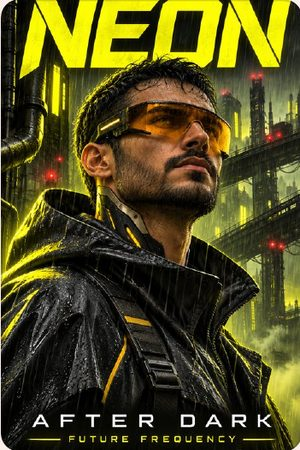
- /darkmoodyإضاءة منخفضة وظلال عميقة مع إبقاء الموضوع واضحًاLow-key moody lighting with deep shadows and a readable subject
الإضاءة والعدسات
- /softlightingإضاءة واسعة ناعمة ومشتتة وظلال لطيفةLarge soft diffused lighting and gentle shadows
- /dramaticlightingإضاءة قوية الاتجاه وعالية التباينDirectional high-contrast dramatic lighting
- /rimlightإضاءة حواف تفصل الموضوع عن الخلفيةRim lighting outlining the subject against the background
- /backlightمصدر ضوء خلف الموضوع مع تعريض مناسب للوجهBacklighting with suitable exposure on the face
- /volumetriclightحزم ضوئية مرئية في هواء ضبابي خفيفVisible volumetric light beams in lightly hazy air
- /godraysأشعة شمس بارزة تخترق الغيوم أو الأشجارDistinct sun shafts breaking through clouds or trees
- /studioإضاءة استوديو احترافية وخلفية بسيطة وظلال متحكم بهاProfessional studio lighting, simple backdrop and controlled shadows
- /filmgrainحبوب فيلم دقيقة وطبيعية دون إفساد التفاصيلSubtle natural film grain without destroying detail
- /anamorphicتكوين سينمائي عريض ووهج أفقي وبوكيه بيضاويWide cinematic composition, horizontal flares and oval bokeh
- /bokehأضواء خلفية تتحول إلى دوائر ضبابية ناعمةSoft out-of-focus background light discs
- /shallowdepthتركيز واضح على الموضوع وخلفية خارج نطاق التركيزSharp subject with a shallow depth of field and soft background
طابع الصور والأماكن
- /magazinecoverغلاف مجلة خيالية بعنوان واضح ومساحة للعناوينFictional editorial magazine cover with a clear masthead and headline space
- /polaroidمظهر طباعة فورية بإطار أبيض وألوان هادئةInstant-print look with a white border and muted colors
- /disposablecameraمظهر كاميرا فيلم بسيطة بفلاش مباشر وعفويةDisposable-camera aesthetic with direct flash and candid framing
- /35mmfilmألوان فيلم 35 مم وتباين لطيف وحبوب دقيقة35mm film colors, gentle contrast and fine grain
- /instantphotoصورة فورية مربعة بإطار وملمس طباعة خفيفSquare instant snapshot with a border and subtle print texture
- /underwaterمشهد تحت الماء بإضاءة وانكسار واقعيين وتجهيز غوص مناسبUnderwater scene with realistic light refraction and suitable diving gear
- /spaceمشهد فضائي وبدلة وخوذة ملائمتان مع وجه واضحOuter-space scene with suitable suit and helmet and a visible face
- /desertبيئة صحراوية وكثبان وإضاءة مناسبةDesert setting with dunes and appropriate lighting
- /forestغابة طبيعية بإضاءة تمر بين الأشجارNatural forest with light filtering through trees
- /mountainsمناظر جبلية وتفاصيل ملابس مناسبة للمكانMountain scenery with clothing appropriate to the setting
- /beachبيئة شاطئية بإضاءة طبيعية وتفاصيل ساحليةBeach setting with natural light and coastal details
عوالم ومشاهد سينمائية
- /cityscapeالموضوع أمام أفق مدينة واسع وواضحSubject against a broad readable city skyline
- /nightcityمدينة ليلًا بأضواء حضرية وتعريض متوازنNight city with urban lights and balanced exposure
- /futuristicعمارة وأزياء مستقبلية بتصميم متقدم ومقنعPlausible advanced futuristic architecture and clothing

- /postapocalypticمدينة مهجورة ومتآكلة استعادت الطبيعة أجزاء منهاAbandoned weathered city partly reclaimed by nature
- /fantasyعالم خيالي سحري بعناصر متناسقةCoherent magical fantasy world
- /scifiمشهد خيال علمي بمركبة أو محطة فضائيةScience-fiction scene in a spacecraft or space station
- /medievalبيئة وأزياء مستوحاة من العصور الوسطىMedieval-inspired setting and clothing
- /samuraiأزياء وبيئة مستوحاتان من الساموراي اليابانيJapanese samurai-inspired clothing and setting
- /noirأبيض وأسود سينمائي عالي التباين وظلال عميقةHigh-contrast black-and-white film noir with deep shadows
- /detectiveمكتب تحقيق وأجواء غموض وإضاءة دراميةDetective office, mystery atmosphere and dramatic lighting
- /superheroبطل خارق أصلي بزي مبتكر وتكوين بطوليOriginal superhero with an invented costume and heroic composition
الأساليب الفنية
- /animeحوّل المشهد إلى رسوم أنمي بخطوط واضحة وتظليل مناسبTransform into anime with clean outlines and cel shading
- /comicbookحوّل المشهد إلى قصص مصورة بخطوط حبر وتظليل نقطيTransform into comic-book ink art with halftone shading
- /oilpaintingلوحة زيتية بضربات فرشاة وملمس لوني واضحOil painting with visible brushwork and paint texture
- /watercolorألوان مائية شفافة على ورق بملمس ناعمTransparent watercolor washes on textured paper
- /sketchرسم رصاص يدوي بخطوط وتظليل واضحينHand-drawn graphite sketch with visible linework and shading
- /claystyleشخصيات وعناصر من الصلصال بملمس يدويClay figures and objects with handcrafted texture
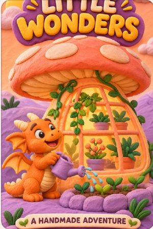
- /3drenderتصيير ثلاثي الأبعاد بخامات وإضاءة متقنتينPolished 3D render with carefully defined materials and lighting

- /isometricمشهد ثلاثي الأبعاد بمنظور متساوي القياسThree-dimensional scene in isometric projection

- /miniatureديوراما مصغرة بتفاصيل مجسمات واقعيةPhysical miniature diorama with believable model details
- /tiltshiftمحاكاة عدسة تيلت شيفت بشريط تركيز ضيق يعطي إيحاء المصغراتTilt-shift simulation with a narrow focus band suggesting miniature scale
- /papercraftمشهد مصنوع من طبقات ورق مقصوص ومطويLayered cut-and-folded papercraft scene
البنك البصري٣٢٦
ارفع صورة الشي أو المنتج واكتب الاختصار.
كشف الشكل والتفاصيل
- /360viewيعرض الشي من كل الجهات بصورة وحدة
- /anatomyيكشف الأجزاء الداخلية ويكتب أساميها
- /cutawayيشيل جزء من الغلاف عشان يبين اللي داخل
- /layersيفصل الشي لطبقات فوق بعض
- /xrayتشوف الأجزاء الداخلية من خلال السطح
- /explodedviewيفكك الأجزاء ويبعدها عن بعض بنفس ترتيبها
- /microscopicيقرّب لمستوى المجهر بتفاصيل مقنعة
- /blueprintيحوّل الشي لمخطط هندسي أزرق
- /handwrittenيشرح الشي بملاحظات بخط اليد

- /tinyplanetيلف المشهد لكوكب صغير دائري
- /3dbillboardيحوّله لوحة إعلان ثلاثية الأبعاد تطلع من الإطار
- /metaadيسوي إعلان سوشال بستايل ميتا
- /floating3dيعرضه كمجسم ثلاثي الأبعاد طاير
- /mechanismviewيبين الميكانيكية وشلون تتحرك أجزاءها
- /factorylineيبين مراحله على خط المصنع
- /qualitycheckيحدد نقاط الفحص والعيوب الشائعة
- /dimensionsيضيف المقاسات حوله بوضوح
- /redesignيعيد تصميمه بشكل أذكى
- /premiumshowcaseيعرضه كأنه إطلاق منتج فخم
- /compositionmapيرسم مناطق التكوين ونقاط التركيز
- /timelineboardيرتب أهم اللحظات على لوحة زمنية
- /shotsetupيرسم إعداد الكاميرا والإضاءة والخلفية
- /insideviewيبين الداخل بدون ما يخرب الشكل الخارجي
- /hiddenpartsيكشف الأجزاء المخفية
- /seethroughيخلي أسطح معينة شفافة
- /peelbackيقشر السطح الخارجي مثل الغطا
هندسة وميكانيكا
- /internalmapخريطة للأجزاء الداخلية بمكانها الحقيقي
- /shelloffيشيل الغلاف ويخلي الباقي مركبّ
- /halfsectionنصه عادي ونصه مفتوح
- /crosssectionمقطع عرضي نظيف للتركيبة الداخلية
- /componenttreeشجرة الأجزاء والمجموعات
- /assemblyorderيرتب الأجزاء حسب ترتيب التركيب
- /fastenermapيحدد البراغي والمشابك واللحامات
- /materialmapيكتب كل خامة مستخدمة
- /stressmapيبين مناطق الضغط العالي والمتوسط والخفيف
- /loadpathيبين شلون تمشي القوة داخل الشي
- /mechanismflowأسهم تبين انتقال الحركة
- /powerflowمسار الطاقة من المصدر للنتيجة
- /signalflowمن الحساسات للمعالج للمخرج
- /fluidflowيبين حركة السوائل داخل النظام
- /airflowيبين دخول وطلوع الهوا والتبريد
- /motionpathيبين مدى الحركة والدوران والمسار
- /cycleviewيقسم دورة التشغيل لمراحل
- /causeeffectيربط كل فعل بنتيجته
- /rawtofinalمن المواد الخام للمنتج النهائي
- /manufacturingstepsمراحل التصنيع من ٤ لـ٦ خطوات
- /toolingviewالأدوات والمكاين اللي تصنعه
- /moldviewيبين الشي داخل قالب التصنيع
- /supplychainسلسلة التوريد من الخام للزبون
- /scalecompareجنب أشياء معروفة عشان تفهم حجمه
- /sizelevelsمن الشي لمكوناته لمستوى الجزيئات
- /thenandnowيقارن النسخة القديمة بالحالية
- /goodvsbadالاستخدام الصح مقابل الغلط
- /failuremodeوين وشلون يخرب عادة
- /designlogicيشرح ليش كل ميزة موجودة
اتجاهات إبداعية وللمنتجات
- /heroصورة رئيسية نظيفة والشي هو المركز
- /materialsيبرز الخامات الأساسية
- /textureيبرز ملمس السطح وتفاصيله
- /scaleيوضح حجمه الحقيقي
- /silhouetteيختصره لظل واضح ينعرف
- /outlineيرسمه بخط تحديد نظيف
- /wireframeيكشف الهيكل الشبكي
- /transparentيخلي الغلاف شفاف ويحافظ على الشكل
- /ghostedالأجزاء المخفية تطلع شفافة خفيفة
- /sectionedيقسمه لأقسام عليها أسامي
- /unwrappedيفرد الأسطح أو التغليف بشكل مسطح
- /packagingيحطه بتغليف بيع احترافي
- /boxedيعرضه مرتب داخل علبته
- /unboxingمشهد فتح العلبة ومحتوياتها
- /contentsيبين كل شي يجي معاه
- /accessoriesيرتب الإكسسوارات حوله
- /variantsيقارن نسخ وتصاميم مختلفة
- /colorwaysيعرضه بكذا لون متناسق
- /finishيقارن التشطيبات: مطفي، لامع، معدن
- /premiumيرفع مستواه بستايل فخم هادي
- /minimalيبسّط المشهد لعرض نظيف

- /industrialلغة تصميم صناعية قوية
- /retroستايل ريترو متناسق

- /prototypeيعرضه كنموذج أولي شغال
- /conceptيحوّله تصور مفهوم مصقول
- /upgradeيبين نسخة محسّنة واضحة
- /ergonomicsيشرح شلون يناسب الجسم
- /gripيركز على مسكة اليد والراحة
- /controlsيكتب الأزرار ووظيفة كل واحد
- /interfaceيشرح الواجهة ومناطق التفاعل
- /workflowخطوات الشغل من البداية للنهاية
- /usageيبين شلون ينستخدم بمكانه
- /setupالتركيب والمكان الصح
- /installationوين وشلون يتركب
- /maintenanceمهام الصيانة ومداخلها
- /cleaningمناطق وطريقة التنظيف الصح
- /repairيكشف العطل وطريقة التصليح
- /replaceableالأجزاء اللي تتبدل
- /wearpointsالأماكن اللي تستهلك أسرع
- /weakpointsنقاط الضعف ومخاطر الخراب
- /durabilityيبين القوة والحماية والتحمل
- /weatherproofالحماية من المطر والغبار والحر والبرد
- /thermalخريطة الحرارة ومناطقها
- /coolingمسارات الهوا والتبريد
- /acousticمصادر الصوت واتجاهه
- /pressureمناطق الضغط العالي والمنخفض
- /frictionنقاط التلامس والاحتكاك
- /toleranceالمقاسات والفراغات الدقيقة
- /jointsالوصلات وطرق التركيب
- /gearsيكشف التروس وشلون تنقل الحركة
- /electronicsالقطع الإلكترونية والأسلاك
- /sensorsالحساسات ومناطق الاستشعار
- /batteryمكان البطارية ومسار الطاقة
- /connectivityالتوصيلات السلكية واللاسلكية
- /comparisonيقارن نسخ بنفس الزاوية
- /benchmarkيقارن الأداء بمنافس أو مرجع
رسم هندسي وطريقة العمل
- /schematicيبسّطه لرسم وظيفي
- /technicaldrawingمناظر أمامية وجانبية وعلوية دقيقة
- /cadviewيعرضه كموديل CAD
- /dimensionviewيضيف المقاسات حوله
- /dimensionlinesخطوط قياس بين النقاط
- /scalegridشبكة توضح الحجم والنسب
- /vanishingpointخطوط المنظور ونقطة التلاشي
- /contourmapخطوط الارتفاع والعمق
- /howitworksيشرح شلون يشتغل بصرياً
- /mechanismيركز على التروس والمفصلات
- /energyflowشلون تمشي الطاقة فيه
- /motionflowشلون تتحرك الأجزاء وقت التشغيل
- /inputoutputشنو يدخل وشنو يطلع
- /forceanalysisالضغط والقوة والوزن
- /flowdiagramحركة الهوا أو الماي أو البيانات
- /rangeofmotionمدى حركة المفاصل والأجزاء
- /controlmapيربط كل تحكم بوظيفته
- /buttonmapيكتب الأزرار وشنو تسوي
- /portmapالمداخل والمخارج ونقاط التوصيل
خطوات وتعليمات
- /assemblyشلون الأجزاء تصير قطعة وحدة
- /assemblysequenceالتركيب بمراحل مرقمة
- /disassemblyشلون تفكه
- /stepsequenceالمهمة خطوة بخطوة
- /instructioncardكرت تعليمات مختصر
- /manualpageصفحة بستايل ا لكتيّب
- /quickreferenceدليل مرجعي سريع
- /checklistقائمة مهام أو أجزاء
- /decisiontreeشنو تسوي عند كل اختيار
- /repairguideالمشكلة وطريقة التصليح
- /problemresolutionالمشكلة والتشخيص والحل
- /maintenanceguideمهام الخدمة الدورية
- /cleaningpointsوين وشلون تنظف
- /filterreplacementشلون تشيل الفلتر وتبدله
- /lubricationpointsالأجزاء اللي تحتاج تشحيم
- /inspectionpointsالأماكن اللي لازم تنفحص
- /faultfinderالمصادر المحتملة للعطل
- /repairrouteأأمن طريق للتصليح
- /replaceablepartالقطعة اللي تتبدل
- /hazardmapالمناطق والأفعال الخطرة
- /safezonesوين آمن تلمس أو تشتغل
- /warningpointsتحذيرات على الصورة نفسها
- /protectivegearمعدات السلامة المطلوبة
- /controlpanelيشرح لوحة التحكم
- /screenlabelsيكتب عناصر الشاشة المهمة
- /indicatorlightsيشرح الأضواء والرموز
- /modechartيقارن أوضاع التشغيل
- /statuscomparisonوضع الانتظار والتشغيل والإيقاف
- /onandoffشغال مقابل طافي
- /errorstatesحالات الخطأ الشائعة
- /errorcodesيشرح أكواد الأخطاء
- /powerrouteوين تدخل الطاقة ووين تمشي
- /chargingportsمنافذ الشحن واتجاهها
- /batteryaccessشلون توصل لمكان البطارية
- /batteryplacementمكان البطارية واتجاهها
توصيل وتوافق
- /portlabelsيكتب كل منفذ دخول وخروج
- /cableroutingأنظف مسار للأسلاك
- /wiringpathالأسلاك ووين توصل
- /connectionmapشلون تتصل الأجزاء ببعض
- /compatibilitycheckشنو يشتغل مع شنو
- /accessoryfitشلون يتركب الإكسسوار
- /adaptermatchالأدابتر أو الوصلة الصح
- /mountingoptionsيقارن طرق التثبيت
- /cableorganizationترتيب الأسلاك بشكل مفهوم
- /storagefitشلون يدخل بالتخزين
- /carrycaseيحطه بشنطة سفر عملية
- /spaceplanيرتب المساحة حوله
- /scalecomparisonيقارن حجمه بيد أو شخص
- /sizecomparisonكذا شي جنب بعض حسب الحجم
- /proportionmapالنسب بين المقاسات المهمة
- /fitcheckهل الشيين يركبون على بعض
- /clearancecheckالمساحة الفاضية المطلوبة حوله
- /sidebysideنسختين جنب بعض بنفس الزاوية
- /featurematrixيقارن المميزات بجدول بصري
- /prosconsالإيجابيات والسلبيات بوضوح
- /whichoneتوصية بصرية بين خيارات
- /beforeafterقبل وبعد التغيير
- /oldnewالقديم مقابل الجديد
- /roomplacementوين يناسب بالغرفة
جسم الإنسان والحيوان
- /skeletonviewالهيكل العظمي أو الإطار الداعم
- /cellularviewيقرّب لمستوى الخلايا
- /molecularviewيعرضه بمستوى الجزيئات
- /musclemapيكتب العضلات الرئيسية
- /organmapيكتب الأعضاء الداخلية
- /posturemapيشرح الوقفة والتوازن
- /gestureguideيوضح حركة أو وضعية الجسم
- /behaviorsequenceالتصرفات بالترتيب
- /habitatviewيحطه ببيئته الطبيعية
- /interactionmapعلاقته باللي حوله
- /firstpersonالمشهد من عيونه هو
- /handsinframeيدين تستخدم الشي وتشرحه
الكاميرا والمنظور
- /filmnoirأبيض وأسود بتباين عالي
- /vintagefilmصورة فيلم قديم
- /35mmصورة كلاسيكية 35mm
- /overheadمن فوق مباشرة
- /panoramaيوسع المشهد بانوراما
- /wormseyeمن مستوى الأرض لفوق
الإضاءة
- /neonlightإضاءة نيون ملونة

- /chiaroscuroتباين قوي بين الضوء والظل
- /volumetricأشعة ضوء تبين بالهوا
- /softboxإضاءة استوديو ناعمة ومتساوية
- /hardflashفلاش مباشر حاد
- /lensflareلمعة عدسة الكاميرا
- /prismaticانكسار ألوان قوس قزح
أساليب فنية ويدوية
- /oilpaintألوان زيتية غنية
- /gouacheألوان قواش مطفية وجريئة
- /inkwashحبر وفرشاة معبّرة
- /linocutطباعة محفورة
- /woodcutنقش خشب قديم
- /stainedglassزجاج ملون معشقّ
- /paperquillingشرايط ورق ملفوفة
- /claymationأنيميشن صلصال يدوي
- /clayrenderموديل صلصال ناعم
- /origamiطي ورق أوريغامي
تصميم ونشر
- /posterبوستر جرافيك جريء
- /editorialتصميم مجلة احترافي
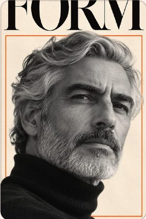
- /albumcoverغلاف ألبوم موسيقي
- /comicpanelكادر قصص مصورة
- /mangaرسم مانقا
- /pixelartبكسل آرت
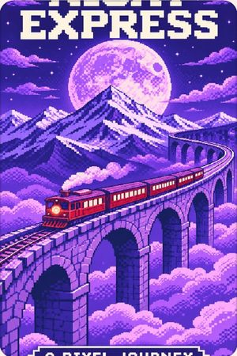
- /infographicإنفوجرافيك يشرح بالمعلومات
- /stickerستيكر نظيف
- /labeldesignتصميم ليبل مرتب
- /educationalposterبوستر تعليمي بمعلومات ورسومات
رقمي وبيانات
- /glitchتشويش رقمي متحكم فيه
- /hudشاشة عرض مستقبلية فوق المشهد
- /datastreamبيانات تمشي بالمشهد
- /coderainكود نازل مثل ماتريكس
- /signalnoiseتشويش إرسال تلفزيوني
- /surveillanceمن كاميرا مراقبة
- /scanlinesخطوط مسح رقمية
- /falsecolorألوان علمية مزيفة
- /depthmapالألوان تبين العمق والمسافة
- /heatmapيبرز الشدة والنشاط بالألوان
- /gridoverlayشبكة تقنية فوق الصورة
- /meshالشبكة ثلاثية الأبعاد
عوالم وبيئات
- /steampunkمكاين فكتورية ونحاس
- /solarpunkمستقبل أخضر متفائل
- /atompunkمستقبل الخمسينات النووي
- /biopunkأحياء وتكنولوجيا متقدمة
- /fantasyrealmعالم سحري خيالي
- /mythicمشهد أسطوري ملحمي
- /westernالغرب الأمريكي
- /spaceoperaبيئة فضائية ضخمة
- /retrofutureالمستقبل بعيون الماضي
- /brutalistخرسانة وأشكال ضخمة

- /gothicrevivalعمارة تاريخية درامية
خامات وأسطح
- /chromeسطح معدني عاكس
- /glassيحوّله زجاج شفاف
- /holographicلمعة هولوغرام بألوان قوس قزح
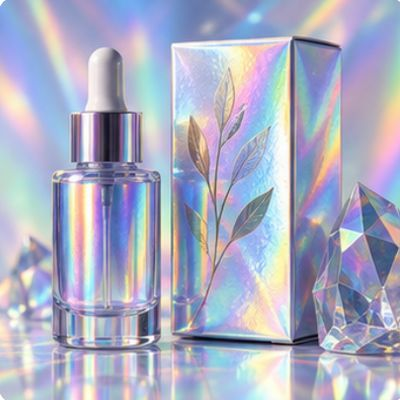
- /lowpolyمضلعات قليلة

- /voxelمكعبات بكسل ثلاثية
- /embossبارز فوق السطح
- /debossمحفور داخل السطح
- /foilstampطباعة فويل معدنية
- /diecutقص تصميم نظيف
- /stencilيحوّله لأشكال ستنسل
- /halftoneتظليل نقاط مثل الكوميكس
- /duotoneلونين بس
حركة ووقت
- /longexposureخطوط ضوء وحركة ناعمة
- /lightpaintingرسم بالضوء
- /motionblurيبرز الحركة بالبلر
- /timelapseيختصر عملية طويلة بصورة وحدة
- /slowmotionالحركة تبين معلقةّ
- /stopmotionستايل ستوب موشن يدوي
- /motiontrailأثر خلف العناصر المتحركة
- /speedlinesخطوط سرعة جرافيك
- /freezeframeيجمد لحظة درامية
- /timelineالتطور على كذا مرحلة
- /transformationشكل يتحول لشكل ثاني
- /lifecycleمن الصنع للاستخدام لنهاية العمر
الاستخدام اليومي
- /homeuseينستخدم بالبيت
- /deskuseإعداد مكتب عملي
- /kitchenuseاستخدام واقعي بالمطبخ
- /traveluseشلون يشتغل وقت السفر
- /inhandscaleحجمه الحقيقي باليد
- /beginnerfriendlyشرح بسيط للمبتدئ
- /lefthandedاستخدام باليد اليسرى
- /storageplanترتيب تخزين عملي
- /cablemanagementترتيب الأسلاك حوله
- /drawerorganizationترتيب أغراض صغيرة بالدرج
- /accessorylayoutالمنتج مع إكسسواراته
ملاحظات وشرح
- /stickynotesستيكي نوتس ملونة
- /postitwallجدار ملاحظات حوله
- /calloutsخطوط تأشر على التفاصيل المهمة
- /arrowsأسهم للاتجاه والحركة
- /highlighterيظلل أهم المناطق
- /redpenتصحيحات وملاحظات خبير بالقلم الأحمر
- /markerwritingملاحظات بالماركر العريض
- /whiteboardشرح على السبورة
- /annotatedphotoليبلات نظيفة على الصورة
- /labelmakerليبلات مطبوعة لكل جزء
- /captioncardشرح قصير جنب الشي
- /legendkeyمفتاح للألوان والرموز
مؤثرات وبيئات خاصة
- /watersplashرشة ماي مجمدة حوله
- /dropletmacroقطرات معلقة عن قرب
- /inkcloudحبر ينتشر بالسائل
- /fogbankضباب كثيف حوله
- /rainstreaksخطوط مطر على المشهد
- /timewornقديم ومستهلك
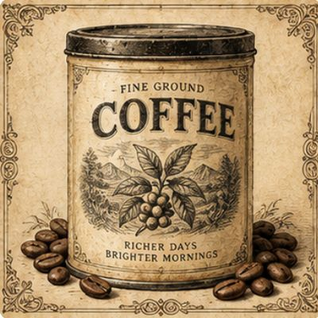
- /archaeologicalكأنه قطعة أثرية
- /damagecheckيبرز الخدوش والكسور
- /authenticitycheckالتفاصيل اللي تثبت إنه أصلي
- /repairabilityشنو ينصلح أو يتبدل
مناظر علمية وحسية
- /thermalviewتوزيع الحرارة عليه
- /thermalvisionمن كاميرا حرارية
- /infraredتصوير بالأشعة تحت الحمراء
- /nightvisionرؤية ليلية خضرا
- /ultrasoundستايل السونار الطبي
- /radarviewكأنه على شاشة رادار
- /sonarالمسافة بالصوت
- /magneticfieldخطوط المجال المغناطيسي
- /spectrogramالصوت كترددات وألوان
- /soundwaveموجة صوت حوله
- /smellmapانتشار الريحة
- /electricalfieldالطاقة الكهربائية حوله
التصميم والإعلانات١٧١
صور شخصية، منتجات، هوية، سوشال وإعلانات.
صور شخصية وبورتريه
ارفع سيلفي واكتب: /founderportrait
- /corporateheadshotصورة رسمية بخلفية رمادية وبدلة
- /passportphotoصورة جواز بخلفية بيضا وإضاءة متساوية
- /casualheadshotصورة خفيفة بضوء شباك طبيعي
- /graduationportraitصورة تخرج بالروب وخلفية الجامعة
- /founderportraitصورة صاحب مشروع بستايل مجلات
- /actorheadshotصورة كاستنق ونظرة مباشرة للكاميرا
- /teamphotoصور موحدة لكل الفريق
- /doctorportraitصورة بالبالطو الأبيض بعيادة
- /bwportraitأبيض وأسود بحبيبات فيلم
- /realtorheadshotصورة وسيط عقاري وبيت مضوي وراه
- /goldenhourportraitصورة برا بضوء المغرب الدافي
- /fitnessportraitصورة بالجيم بإضاءة جانبية قوية
- /speakerphotoتطلع على مسرح مؤتمر وقدامك جمهور
- /podcastportraitصورة بودكاست والمايك بالكادر
- /authorphotoصورة كاتب لغلاف كتاب
- /vintageportraitصورة بستايل أفلام السبعينات
- /datingprofileصورة طبيعية ومرتبة للبروفايل
- /outfitswapنفس الصورة بخمس لبسات مختلفة
تصوير المنتجات
ارفع صورة منتجك واكتب: /podiumshot
- /productshotصورة استوديو نظيفة على أبيض
- /ghostmannequinالملابس على مانيكان مخفي
- /lifestyleshotالمنتج ينستخدم بمكان حقيقي مرتب
- /heroimageصورة رئيسية للموقع مع مساحة للعنوان
- /naturebackdropالمنتج بغابة أو بحر أو صحرا
- /flatlayترتيب من فوق مع أغراض تناسبه
- /podiumshotالمنتج على منصة حجر بإضاءة حواف
- /floatingproductالمنتج طاير بظل خفيف
- /glassreflectionالمنتج على زجاج بانعكاس نظيف
- /splashshotالمنتج وحوله رشة سوايل مجمدة
- /backgroundswapيغير الخلفية ويحافظ على المنتج وإضاءته
- /catalogsetمجموعة صور كتالوج متناسقة
- /beforeafterproductلوحة قبل وبعد تبين تأثير المنتج
- /seasonalshotالمنتج بجو الصيف أو الشتا أو الأعياد
- /onmodelالملابس على موديل حقيقي
- /amazonreadyصورة أمازون: أبيض والمنتج مالي الكادر
تفكيك المنتج وثلاثي الأبعاد
ارفع صورة المنتج واكتب: /giantscale
- /giantscaleالمنتج عملاق بشارع وسط المدينة
- /partslistكل القطع مرتبة مثل علبة تركيب
- /materialswapنفس المنتج من خشب وحديد وزجاج
إعلانات وتسويق
ارفع صورة منتجك واكتب: /offerad خصم ٢٠٪
- /staticadإعلان ثابت بعنوان وزر
- /offeradتصميم عرض أو خصم أو إطلاق
- /storyadإعلان ستوري طولي ٩:١٦
- /retargetadإعلان تذكير للي تركوا السلة
- /carouseladإعلان كاروسيل ٥ سلايدات، فايدة بكل وحدة
- /adset٥ نسخ إعلان بهوكات مختلفة
- /banneradإعلان بأكثر من مقاس بانر
- /emailheaderصورة أعلى الإيميل
- /billboardإعلانك على لوحة طريق حقيقية
- /landingmockشكل صفحة هبوط والمنتج فوق
- /busstopadإعلانك بموقف باص بالليل
- /appstoreshotsصور متجر التطبيقات مع شرح
- /magazineadإعلان صفحة كاملة بمجلة
- /subwayadإعلانك على بوستر بالمترو
- /comparisonadإعلان مقارنة جنب بعض
- /uglyadإعلان عفوي ومو مصقول (يوقف السكرول)
- /testimonialadإعلان بكلام عميل وصورته
- /adstoryboardستوري بورد ٦ مشاهد لفيديو إعلان
الهوية واللوقو
اكتب اسم مشروعك: /logoconcepts كوفي سدرة
- /logoconcepts٦ أفكار لوقو مختلفة
- /letterheadورق رسمي وظروف بهويتك
- /wordmarkلوقو كتابة بس
- /brandmerchلوقوك على تيشيرت وكاب وكوب وشنطة
- /iconlogoلوقو رمز بدون كتابة
- /storefrontهويتك على لوحة محل وواجهة
- /mascotdesignشخصية (ماسكوت) للبراند
- /appiconأيقونة تطبيق لآيفون وأندرويد
- /brandboardلوحة هوية: لوقو وألوان وخطوط وصور
- /faviconنسخة صغيرة من اللوقو للمتصفح
- /colorpalette٥ ألوان مع أكوادها
- /monogramمونوقرام أنيق من الحروف الأولى
- /patterndesignنقشة متكررة للتغليف والطباعة
- /logomotionلقطات توضح شلون يتحرك اللوقو
- /businesscardكرت شخصي وجه وظهر
- /rebrandيحدث لوقوك بثلاث اتجاهات
تصاميم السوشال ميديا
اكتب فكرتك: /statgraphic ٧٠٪ من العملاء…
- /thumbnailimageثمبنيل يوتيوب بوجه وكتابة كبيرة
- /tiktokcoverغلاف تيك توك بكتابة واضحة
- /carouselcoverغلاف كاروسيل يوقف السكرول
- /memeformatفكرتك بشكل ميم
- /quotecardاقتباس بستايل براندك
- /announcementpostبوست إعلان أو خبر إطلاق
- /instagrid٩ بوستات تكوّن شبكة متناسقة
- /eventflyerفلاير فعالية بالتاريخ والمكان
- /storycoverأيقونات هايلايت انستقرام
- /countdownpostعد تنازلي لإطلاق أو فعالية
- /linkedinbannerبانر بروفايل لينكدإن
- /statgraphicرقم كبير وسطر شرح
- /youtubebannerبانر قناة يوتيوب بالمقاسات الصح
- /podcastcoverغلاف بودكاست مربع باسم البرنامج
- /twitterheaderهيدر حساب X
- /profilepicصورة بروفايل تنعرف حتى وهي صغيرة
- /pinterestpinتصميم بنترست طولي بعنوان
- /reelcoverغلاف ريل يناسب شكل حسابك
موك أب وتغليف
ارفع تصميمك واكتب: /boxmockup
- /laptopmockupموقعك على لابتوب فوق مكتب
- /boxmockupتصميمك على كرتون شحن
- /tshirtmockupتصميمك على تيشيرت حد لابسه
- /bottlelabelليبل قارورة أو علبة وشكله على المنتج
- /postermockupالبوستر بإطار على جدار
- /bagmockupهويتك على كيس أو شنطة
- /menudesignمنيو مطعم بستايل براندك
- /canmockupليبلك على علبة مشروب
- /shelfshotمنتجك على رف السوق جنب المنافسين
- /bookcoverغلاف كتاب أو كتاب إلكتروني
- /giftboxتغليف هدية فاخر للمنتج
- /phonemockupتطبيقك أو موقعك على شاشة تلفون
أكل وديكور وعقار
ارفع صورة المكان واكتب: /virtualstaging
- /foodshotصورة طبق بمستوى مطاعم
- /floorplan3dمخطط ثلاثي الأبعاد من رسمة أو وصف
- /menuphotoصورة أكل من فوق بتقديم نظيف
- /gardenplanيعيد تصميم الحوش كحديقة
- /drinkshotقهوة أو مشروب مع بخار أو قطرات
- /kitchenrenoيجدد المطبخ: خزاين ورخام
- /recipecardكرت وصفة مع صورة الطبق
- /listingphotoصورة غرفة واسعة ومضوية للإعلان
- /roomredesignيعيد تصميم الغرفة بالستايل اللي تبيه
- /officespaceيرتب مكتبك عشان التركيز
- /virtualstagingيأثث غرفة فاضية للإعلان
- /nightshotنفس المبنى المغرب والأنوار شغالة
- /exteriorrenderتصميم واجهة بيت معماري
- /moodboardلوحة أفكار بصرية لمكان أو مشروع
رسم وأساليب فنية
ارفع صورتك واكتب: /cartoonme
- /tattoodesignتصميم تاتو على ورق
- /childrensbookرسمة كتاب أطفال ناعمة
- /lineartرسمة خط واحد بالحبر
- /graffitiكلمتك أو لوقوك جرافيتي على جدار
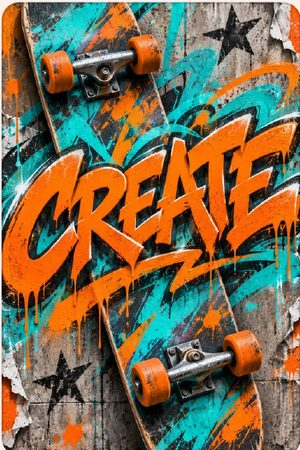
- /popartبوستر بوب آرت بنقاط

- /vectorflatرسمة فيكتور بأشكال بسيطة
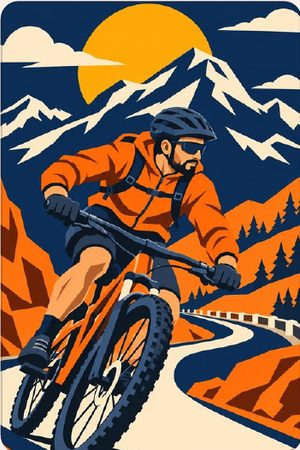
- /cartoonmeيحولك لشخصية كرتون
- /3dcharacterنسخة شخصية ثلاثية الأبعاد منك
- /embroideryتصميمك كباتش مطرز
إنفوجرافيك وشرح
اكتب الموضوع: /processdiagram طريقة الطلب من موقعي
- /orgchartهيكل تنظيمي مع أماكن للصور
- /processdiagramيشرح العملية بأربع خطوات مرسومة
- /roadmapgraphicخطة منتج مقسمة على الأرباع
- /pricingtableجدول أسعار بثلاث باقات
- /statposterبوستر أرقام كبيرة وأيقونات
- /howtoillustrationيشرح مهمة بخطوات مرسومة
- /iconset١٢ أيقونة متناسقة لموقع أو تطبيق
- /mapgraphicخريطة مرتبة بفروعك
- /slidevisualسلايد عرض بصري بدون نقاط
ترفيه وشخصي
ارفع صورتك واكتب: /actionfigure
- /actionfigureتصير مجسم أكشن داخل علبة
- /movieposterبوستر فلم وانت البطل
- /babyphotoكرت إعلان مولود
- /weddinginviteبطاقة دعوة عرس
- /tradingcardكرت لاعب بإحصائياتك
- /holidaycardبطاقة عيد بصورة العايلة
- /petportraitحيوانك الأليف بلوحة ملكية
- /caricatureكاريكاتير خفيف منك
- /ageprogressionشكلك بعمر ٢٠ و٤٠ و٦٠ و٨٠
- /dreamcarانت جنب سيارة أحلامك بأي مكان
- /timetravelانت بأي زمن أو حقبة تاريخية
- /fantasymeشخصية خيالية بلبس كامل
برومبتات الصور والتصميم
- /imagebrief [subject]بريف صورة: الموضوع، المكان، الإضاءة، إحساس العدسة، الجو، وشنو تتجنبWrite an image brief with subject, setting, light, lens feel, mood, and must-avoid list.
- /lifestyle [product + place]يحط المنتج بلحظة واقعية بإضاءة طبيعية وحجم واضح مع الإنسانPlace the product in a believable moment with natural light and human scale.
- /portrait [person]بورتريه بتعبير الوجه واتجاه الضوء وإحساس الكاميرا وتفاصيل صادقةPrompt a portrait with expression, light direction, camera feel, and honest detail.
- /lightshift [scene]يعيد المشهد بإضاءة دافية خافتة وظلال طويلة وجو هاديRework the scene for warm low light, long shadows, and restrained atmosphere.
- /palette [vibe]٥ ألوان بأكواد hex ودور كل لونCreate a five-color palette with hex values and a role for each color.
- /thumbart [video]صورة مصغرة: عنصر واحد، توتر واضح، ومساحة للكتابةPlan a thumbnail with one subject, a clear tension, and reserved space for type.
- /iso [scene]رسم إيزومتري نظيف بأشكال هندسية وظلال وألوان قليلةDescribe a clean isometric illustration with geometry, shadows, and limited colors.
- /film [scene]ستايل أفلام قديمة هادي: حبيبات، ألوان باهتة، وعيوب مقصودةGive the scene a restrained analog look with grain, muted colors, and controlled imperfection.
- /soft3d [object]رندر ثلاثي الأبعاد ناعم بأشكال دائرية وإضاءة استوديو وخامات واقعيةPrompt a soft 3D render with rounded forms, studio light, and believable material.
- /pixel [scene]بكسل آرت واضح بألوان محدودة وشكل خارجي واضحConvert the scene to crisp pixel art with a limited palette and clear silhouette.
- /aerial [location]منظر من فوق بنمط وأشكال هندسية ومرجع حجم بشري واحدPlan a top-down view with pattern, geometry, and one human-scale reference.
- /character [description]ورقة شخصية تنعاد عشان نفس الشكل بكل المشاهدCreate a reusable character sheet for consistent appearance across scenes.
- /stylelock [references]يحول ٣ كلمات مرجعية لنهاية ثابتة للبرومبت بحدود واضحةTurn three reference words into a reusable visual suffix with clear boundaries.
- /negative [image goal]قائمة الأشياء اللي تستبعدها: عيوب، زحمة، أخطاء جسم، وجو غلطList the artifacts, clutter, anatomy errors, and mood mismatches to exclude.
- /promptfix [failed prompt]يشخّص برومبت الصورة اللي فشل ويعيده حول الموضوع والحركة والقيودDiagnose the failed image brief and rewrite it around subject, action, and constraints.
- /carouselart [topic]يحدد الشبكة وحجم الخط والألوان البارزة وأسلوب الرسم وإيقاع السلايداتDefine the grid, type scale, accent behavior, illustration language, and slide rhythm.
- /icons [brand]مجموعة ١٠ أيقونات بقواعد الخط والزوايا والشبكة والرمزDescribe a ten-icon family with stroke, corner, grid, and metaphor rules.
- /logo [company]بريف لوقو: الشخصية، المراجع، اللي لازم يكون، واللي لازم يتجنبWrite a logo brief with personality sliders, references, must-haves, and must-avoids.
- /advisual [offer]٣ أفكار إعلان ثابت: موقف للسكرول، مكان النص، إثبات، وخطوةPropose three static ad concepts with scroll-stopper, text zone, proof, and CTA.
- /mockup [design + object]يحط التصميم بمكان حقيقي بمنظور وإضاءة وخامة واقعيةPlace the design in a real setting with believable perspective, light, and material.
- /beforeafterimg [change]صورة قبل وبعد متطابقة يبين فيها التغيير بوضوحPlan a matched before/after frame where the system change is visually obvious.
أكواد من ريلات الـAI الجديدة
ارفع صورة منتجك أول، ثم اكتب الكود وحده. الفيديو يحتاج بلوجن Higgsfield بحسابك.
- /productlaunchصورة إطلاق منتج جديد من صورة منتجك، بمشهد إعلاني جاهزProduct launch visual from your product photo, ready as an ad scene
- /brandkitهوية كاملة لمنتجك: لوقو وألوان وتغليف، بصورة وحدة جاهزة بدون أسئلةFull product identity from your photo: logo, color palette and packaging, in one image, no follow-up questions
- /amazonlistingكل صور البيع أونلاين: صورة رئيسية بخلفية بيضاء وصور مميزات المنتج، دفعة وحدة بدون أسئلةComplete online-selling image set: white-background main image plus feature images, all at once, no follow-up questions
- /billboardvideoفيديو: منتجك يطلع من لوحة إعلانية ثلاثية الأبعاد عملاقة (يحتاج بلوجن Higgsfield)Video: your product bursts out of a giant 3D billboard (needs the Higgsfield plugin)
- /handsonفيديو: يد تمسك منتجك وتستعرضه (يحتاج بلوجن Higgsfield)Video: a hand holds and shows off your product (needs the Higgsfield plugin)
الكتابة والدراسة٨٠
بدون صورة: اكتب الاختصار وبعده سؤالك أو نصك.
الكتابة والصياغة
الصق نصك وحط الاختصار قبله: /human + نص الإيميل
- /humanيخلي النص طبيعي كأن إنسان كتبه، مو روبوت
- /rewriteيعيد صياغة النص بنفس المعنى
- /improveيرفع وضوح النص وترابطه وجودته
- /shortenيختصر النص لنسخة أقصر وأقوى
- /expandيزيد تفاصيل وعمق وأمثلة للنص
- /simplifyيبسط الكلام بلغة سهلة
- /formalيحول الأسلوب لرسمي ومهني
- /casualيحول الأسلوب لخفيف وسوالف
- /clarifyيشيل الغموض ويخلي المعنى دقيق
- /reframeيعرض نفس الفكرة من زاوية ثانية
- /translateيترجم النص للغة اللي تبيها
- /convertيحول المحتوى من شكل لشكل (مقال ← بوست مثلاً)
الدراسة والفهم
اكتب الاختصار + الموضوع: ELI5 شنو هو التضخم؟
- ELI5يشرح لك الموضوع كأنك طفل عمره ٥ سنين
- EL10شرح بسيط بس أعمق شوي
- EL15شرح بمستوى طالب ثانوي
- ELICollegeشرح بمستوى جامعي ودقة أكاديمية
- ELIPhDشرح متقدم وتقني جداً
- /analogiesيشرح الفكرة بتشبيهات من حياتك
- /whyيركز على السبب: ليش وشلون يصير
- /firstprinciplesيفكك الفكرة لأبسط حقائقها
- FEYNMANيشرح بأبسط طريقة عشان تفهم صدق
- /teachmeيحول الجواب لدرس مرتب
- SOCRATICيعلمك بالأسئلة بدل ما يعطيك الجواب
- QUIZMEيسوي لك أسئلة اختبار من المادة
- FLASHCARDSيحول المادة لبطاقات سؤال وجواب
- TESTMEيختبر فهمك بأسئلة بدل الشرح
- MISCONCEPTIONSيطلع لك أشهر الأخطاء بفهم الموضوع
- /examplesيضيف أمثلة توضح الفكرة
- /breakdownيقسم الموضوع الصعب لأجزاء صغيرة
ترتيب الجواب
حط الاختصار بآخر سؤالك: سوق العقار بالكويت TABLE
- TLDRالزبدة بأقصر شكل مفيد
- BULLETSالجواب بنقاط
- TABLEالجواب بجدول عشان تقارن بسهولة
- STEPSالجواب خطوة بخطوة
- /keypointsأهم النقاط بس
- /insightsالملاحظات والأنماط المهمة
- SIGNALVSNOISEيفصل المعلومة المفيدة عن الحشو
أفكار ومحتوى
اكتب الاختصار + فكرتك: HOOKS10 فيديو عن مطعم برقر
- IDEAS10عشر أفكار بسرعة عن أي موضوع
- ALT3ثلاث نسخ أو بدائل مختلفة
- HOOKS10عشر بدايات (هوكات) لفيديو أو بوست
- /improvehooksيقوي الهوكات اللي عندك
- /brainstorm100كمية كبيرة من الأفكار مو كم وحدة
- SCAMPERيطور فكرتك بطريقة SCAMPER الإبداعية
- REMIXيدمج فكرتين بفكرة جديدة
- SCRIPTيكتب الجواب كسكربت فيديو أو حوار
- THREADيكتب الجواب كثريد سوشال ميديا
- /storymodeيحول الجواب لقصة
- /usecasesيطلع لك استخدامات عملية للفكرة
القرارات والتحليل
اكتب الاختصار + قرارك: DECIDE أفتح فرع ثاني ولا لا؟
- SWOTنقاط القوة والضعف والفرص والتهديدات
- COMPAREيقارن خيارين أو أكثر جنب بعض
- DECIDEإطار مرتب يساعدك تختار
- PARETOالـ٢٠٪ من الشغل اللي تجيب ٨٠٪ من النتيجة
- RISKMAPأهم المخاطر بخطتك أو قرارك
- SECONDORDERشنو يصير بعد النتيجة الأولى
- /assumptionsيكشف الافتراضات المخفية بفكرتك
- /counterأقوى رد ضد رأيك
- /debateيناقش الطرفين بتوازن
- /steelmanيبني أقوى نسخة من الرأي المعاكس
- REDTEAMينتقد فكرتك بقوة عشان تبين نقاط ضعفها
- /critiqueيراجع شغلك ويقول وين يحتاج تحسين
تفكير متقدم
اكتب الاختصار + المشكلة: X10THINK ليش مبيعاتي نازلة؟
- X10THINKيفكر أعمق بكثير قبل لا يجاوب
- DELTRيفكك المشكلة، يقيّمها، يحط حدود، ويبنيها من جديد
- OODAلاحظ، افهم، قرر، نفذ
- PARADOXيدور التناقضات داخل الفكرة
- LENSSTACKيشوف الموضوع من أكثر من زاوية
- FRACTALيقرّب ويبعّد على الموضوع بأكثر من مستوى
- BLACKSWANالاحتمالات النادرة اللي أثرها كبير
- REVERSEENGINEERيرجع من النتيجة عشان يفهم شلون انبنى الشي
- HYPOTHESISGENيطلع أكثر من تفسير لنفس الملاحظة
- SYSTEMMAPيرسم الأطراف والعوامل والعلاقات بالنظام
- METAيراجع صياغة سؤالك نفسه
- /simulateيمثل موقف أو محادثة (مقابلة شغل مثلاً)
- /predictيتوقع النتائج الجاية من المعطيات
- /futurehistoryيوصف المستقبل كأنه صار وانتهى
- /reverseيتخيل الفشل أول، بعدين يقلبه لخطة نجاح
الشغل اليومي
الصق الكود أو الطلب وحط الاختصار: /autoprompt أبي خطة تسويق
- /autopromptيحول طلبك العادي لبرومبت أقوى
- /coachيرد عليك كمدرب أو منتور
- /godmodeجواب شامل وحازم بدون لف ودوران
- DEBUGيدور الأخطاء بالكود
- EXPLAINCODEيشرح الكود بكلام بسيط
- OPTIMIZEيحسن الكود: أسرع وأنظف
القرارات والتفكير٣١
اسأل صح، قارن الخيارات، واكتشف المخاطر.
القرارات والتفكير
اكتب الاختصار وبعده اللي بين القوسين
- /briefme [task]يسألك عن المعلومات اللي تغيّر الجواب، وينتظر ردكAsk for the context that would change the answer, then wait for my reply.
- /askbetter [question]يقول لك شنو تبي تقرر فعلًا، ويعيد صياغة سؤالكTell me what I am really trying to decide and rewrite the question.
- /choose [A] vs [B]يقيّم الخيارين بالفايدة وإمكانية التراجع والجهد والندم، ويختار واحدScore both options on upside, reversibility, effort, and regret. Pick one.
- /tradeoff [decision]شنو تكسب وشنو تخسر وشنو تأجل وشنو المخاطرة بهالقرارShow what I gain, give up, delay, and risk with this choice.
- /assumptionmap [idea]يطلع الافتراضات اللي تحت الفكرة ويرتبها حسب خطورتهاList the assumptions underneath this idea and rank them by danger.
- /branches [scenario]المسار المتوقع والأفضل والأسوأ، وأول إشارة لازم تراقبهاPlay out the likely, upside, and downside paths. Give me the next signal to watch.
- /firstmove [goal]أصغر خطوة تعطيك دليل مفيد خلال ٧ أيامFind the smallest action that creates useful evidence within seven days.
- /smalltest [idea]يحول الفكرة لـ٣ تجارب رخيصة مع قاعدة توسّع وقاعدة وقفTurn this idea into three cheap tests with a scale rule and a stop rule.
- /reversible [choice]يفصل الأجزاء اللي تقدر ترجع فيها عن اللي غالي التراجع عنهاSeparate the reversible parts from the expensive-to-undo parts.
- /decisionmemo [choice]مذكرة صفحة وحدة: الوضع، الخيارات، القرار، ليش الحين، وموعد المراجعةWrite a one-page memo: situation, options, decision, why now, and review date.
- /preflight [launch]فحص جاهزية الإطلاق: الوعد، الإثبات، التسليم، ونقاط الفشلRun a launch readiness check across promise, proof, delivery, and failure points.
- /scorecard [outcome]بطاقة تقييم بـ٥ معايير، وشلون تكون النتيجة القويةBuild a five-criterion scorecard and define what a strong result looks like.
- /nobull [advice]يشيل النصايح العامة ويحط مكان كل سطر خطوة واضحة أو سؤال صعبRemove vague advice and replace every line with a concrete action or a hard question.
- /why5 [goal]يسأل «ليش؟» ٥ مرات ويطلع لك الهدف الحقيقي بجملة وحدةAsk why five times, then state the underlying outcome in one plain sentence.
- /constraintedge [limit]يستخدم القيد كنقطة قوة ويعطيك ٥ حركات يسمح فيهاUse this limitation as a design input. Give me five moves it makes possible.
- /risklist [project]المخاطر حسب احتمالها وتأثيرها وشكثر بدري تقدر تكتشفهاList the risks by likelihood, impact, and how early I can detect them.
- /basecase [plan]النتيجة العادية لخطة مثل هذي، وشنو يرفع فرص نجاحهاGive me the ordinary outcome for a plan like this and what improves the odds.
- /roleplay [stakeholder]يرد كأنه الطرف المعني ويعارض فكرتك لين يطلع الاعتراض الحقيقيRespond as this stakeholder. Push back on my idea until the real concern appears.
- /dissent [proposal]أقوى رد ضد الاقتراح، ويفصل النقاط الصحيحة عن الذوق الشخصيMake the strongest case against this proposal, then separate valid points from taste.
- /teachback [topic]يشرح الموضوع، يختبرك بـ٥ أسئلة، ويصحح بس اللي غلطت فيهExplain the topic, quiz me with five questions, and correct only what I miss.
- /simpler [system]يبسّط النظام لين يستخدمه شخص مشغول بدون شرحReduce this system until a busy person can use it without a tutorial.
- /stack [goal]يجمع البرومبتات بتسلسل ثابت من التشخيص للنتيجة النهائيةCombine these prompts into a repeatable sequence from diagnosis to final output.
- /stoprule [experiment]يحدد الدليل اللي يقول لك: وقف، غيّر الاتجاه، أو كمّلDefine the evidence that means stop, change direction, or keep going.
- /next3 [project]أهم ٣ خطوات تحرك المشروع، وشنو تتجاهلChoose the three actions that move the project forward and list what to ignore.
- /commit [decision]يحول القرار لمسؤول، موعد نهائي، أول خطوة، والتزام معلنTurn this decision into an owner, deadline, first step, and public commitment.
- /reviewdate [choice]موعد مراجعة منطقي، والأدلة اللي تجمعها قبلهSet a sensible review date and the evidence I should collect before then.
- /countercase [belief]يدافع عن الرأي المعاكس بنفس القوة، ويقول لك وين ينكسرArgue the opposite belief with equal force. Tell me where the argument breaks.
- /northstar [business]مؤشر نتيجة واحد و٣ مؤشرات مدخلات، ويشيل الأرقام الوهميةPick one outcome metric and three input metrics. Remove vanity metrics.
- /metricmenu [goal]خيارات قصيرة لقياس الهدف بالأرقام، ويرشح واحدOffer a short menu of measurable definitions for this goal and recommend one.
- /killlist [project]الشغل والافتراضات والميزات اللي توقفها عشان المهم يطلعName the work, assumptions, or features to stop so the important part can ship.
- /onepage [idea]يختصر الفكرة: المشكلة، المستخدم، الآلية، الإثبات، الخطوة الجاية، والمخاطرةCompress the idea into problem, user, mechanism, proof, next step, and open risk.
العرض والتسعير٢٨
الجمهور، الوعد، السعر، والاعتراضات.
بناء العرض والتسعير
اكتب الاختصار وبعده اللي بين القوسين
- /customerpain [audience]المشاكل اللي جمهورك يصرف عليها وقت أو فلوس أو انتباه عشان يتخلص منهاList the pains this audience already spends time, money, or attention trying to remove.
- /job [product]الشغلة العملية والعاطفية والاجتماعية اللي الناس يشترون منتجك عشانهاDescribe the practical, emotional, and social job people hire this product to do.
- /segment [market]يقسم السوق حسب الاستعجال، القدرة على الدفع، الوصول، وسهولة إثبات القيمةSplit this market by urgency, ability to pay, access, and ease of proving value.
- /nichecut [broad idea]يضيّق الفكرة لـ٧ جماهير محددة، وليش كل واحد يهتم الحينNarrow the idea into seven specific audiences with a reason each might care now.
- /positioning [offer]٣ تموضعات: الجمهور، الطريقة القديمة، الطريقة الجديدة، والوعد المقنعWrite three positions: audience, old way, new way, and the believable promise.
- /promise [service]يحول خدمتك لوعد واحد مبني على النتيجة وحدوده واضحةTurn this service into one outcome-led promise with a clear boundary.
- /proofmap [claim]الإثباتات اللي يحتاجها ادعاءك عشان ينصدق، ومن وين تجيبهاList the proof needed to make this claim credible and where each proof can come from.
- /offerstack [core offer]يضيف مكونات تحسن النتيجة، مو هدايا للزينةAdd useful components that improve the outcome, not decorative bonuses.
- /tiers [service]نسخة أساسية ومتوسطة ومتكاملة، وليش المتوسطة هي اللي تفوزCreate lean, standard, and hands-on versions with a reason the middle one wins.
- /priceframe [offer]٣ طرق لعرض السعر، والافتراض الخطير ورا كل وحدةGive three price frames and state the risky assumption behind each.
- /objections [offer]اعتراضات العميل الواعي، والرد على كل واحد بدون مبالغةList the objections a thoughtful buyer will have and answer each without hype.
- /guarantee [offer]ضمان عادل يحمي الطرفين وما يوعد بالمستحيلDesign a fair risk reversal that protects both sides and does not promise magic.
- /leadmagnet [audience]٥ ملفات مجانية مفيدة مرتبة حسب جهد التنفيذ ونية الشراءPropose five useful entry resources ranked by build effort and buyer intent.
- /funnel [offer]أقصر طريق من الانتباه للثقة للخطوة الجايةSketch the shortest path from attention to trust to a next step.
- /discovery [service]١٠ أسئلة تكشف العائق والاستعجال والقيود ومنو صاحب القرارWrite ten questions that uncover bottleneck, urgency, constraints, and ownership.
- /proposal [project]عرض صفحة وحدة: النتيجة، الطريقة، المدة، اللي مو مشمول، والطلبDraft a one-page proposal with outcome, approach, timeline, exclusions, and ask.
- /scope [project]يحول الطلب الغامض لشغل مشمول وغير مشمول وافتراضات ومتى يتغيرTurn this vague request into included work, excluded work, assumptions, and change triggers.
- /pilot [system]تجربة صغيرة: مستخدم واحد، طريقة شغل وحدة، مقياس واحد، ونقطة قرارDesign a narrow pilot with one user, one workflow, one measure, and one decision gate.
- /deliverables [project]المخرجات بالشكل والمسؤول واختبار القبول وطريقة التسليمDefine outputs by format, owner, acceptance test, and handoff requirement.
- /casestory [result]قصة النجاح: البداية، اللي سويته، الدليل، وشنو تغيرStructure the story as starting state, intervention, evidence, and what changed.
- /testimonial [buyer]يطلب رأي عميل محدد يوضح قبل وبعد والتفصيلة المفيدةAsk for a specific testimonial that captures before, after, and the useful detail.
- /referral [service]طلب ترشيح يوصف الشخص المناسب بدون كلام عامWrite a referral ask that describes the right person without sounding generic.
- /keepbuyers [product]ليش العميل ممكن يتركك، وحل واحد لكل سببFind why a customer might leave and design one useful intervention for each reason.
- /kpi5 [business]٥ مؤشرات: الصحة، التسليم، الطلب، الكاش، والتعلمPick five metrics that show health, delivery, demand, cash, and learning.
- /compete [category]يقارن البدائل اللي يستخدمها العملاء اليوم، حتى «ما يسوون شي»Compare the alternatives buyers use today, including doing nothing.
- /moat [business]الأصول اللي تقوى مع الاستخدام، والأجزاء اللي ينسخها المنافس بسرعةFind the assets that get stronger with use and the parts competitors can copy quickly.
- /quarterbet [business]رهان واحد قوي للربع الجاي، وشنو لازم يتأجلChoose one high-leverage bet for the next quarter and name what must wait.
- /offerpage [service]مخطط صفحة هبوط تكسب الثقة قبل لا تطلب التواصلOutline a landing page that earns belief before asking for contact.
المحتوى والريلز٥٨
أفكار، هوكات، كابشن، كاروسيل وسكربتات.
النشر والمحتوى
اكتب الاختصار وبعده اللي بين القوسين
- /anglegrid [topic]١٠ زوايا للموضوع: عملية، معاكسة، شخصية، بالإثبات، وللمبتدئGive me ten angles from practical, contrarian, personal, proof-led, and beginner lenses.
- /hookbench [topic]١٢ بداية فيها وعد واضح، مرتبة حسب قوتها بإيقاف الناسWrite twelve opening lines with a clear promise and rank them by stop power.
- /pillarplan [brand]٤ محاور محتوى ثابتة، و٥ أسئلة متكررة تحت كل محورSet four durable content pillars with five recurring questions under each.
- /calendar [niche]خطة ٣٠ يوم: الشكل، الفكرة، الإثبات، وخطوة وحدة كل يومBuild a 30-day plan with format, idea, proof point, and one next action per day.
- /carousel [topic]كاروسيل ٨ سلايدات: وعد، توتر، طريقة، مثال، وخاتمة مفيدةPlan an eight-slide carousel: promise, tension, model, example, and useful close.
- /caption [idea]٣ كابشنات: مباشر، بقصة، وعملي، وأول سطر يشد الانتباهWrite three captions: direct, story-led, and practical. Make the first line earn attention.
- /repurpose [asset]١٠ طرق تعيد فيها استخدام المحتوى بدون ما تكرر نفس الجملةFind ten native ways to reuse this asset without copying the same sentence everywhere.
- /series [topic]سلسلة متكررة باسم وهيكل حلقة وسبب يخلي الناس يرجعونCreate a repeatable series with a name, episode structure, and reason to return.
- /cta [goal]١٠ دعوات لاتخاذ إجراء بدون ضغط وتحدد الخطوة بالضبطWrite ten low-pressure calls to action that name the exact next step.
- /comment [topic]٧ نهايات للبوست تجيب رد حقيقي مو تعليق فاضيGive me seven post endings that invite a real response instead of a hollow comment.
- /poll [audience]١٠ تصويتات أجوبتها تعلمك شي مفيد عن جمهوركCreate ten polls whose answers teach me something useful about the audience.
- /storypost [lesson]الدرس كلحظة شخصية: غلطة، تحول، وفايدةFrame the lesson as a first-person moment, a mistake, a shift, and a takeaway.
- /mythcheck [niche]٧ خرافات منتشرة بمجالك، وتصحيح واضح لكل وحدةList seven common myths and replace each with a grounded, specific correction.
- /faqpost [offer]يحول أسئلة العملاء لبوستات توضح وتفرز العميل المناسبTurn the questions buyers ask into posts that clarify and qualify.
- /trendadapt [trend]يطبّع الترند على رأيك بدون ما تاخذ شخصيتهAdapt the trend to my point of view without borrowing its personality.
- /dmstart [context]٥ بدايات رسائل خاص تذكر السياق الحقيقي وتسهل الردWrite five DM openers that reference the real context and make replying easy.
- /welcomedm [follower]رسالة ترحيب دافية مع ملف مفيد وسؤال صادقDraft a warm welcome with one useful resource and one genuine question.
- /launch [thing]خطة إطلاق ٧ أيام: سياق، إثبات، دعوة، وإغلاقPlan a seven-day sequence from context to proof to invitation to close.
- /proofpost [review]يحول الريفيو لاقتباس وقصة ودرس بدون مبالغةTurn this review into a quote, a story, and a lesson without overclaiming.
- /engage [niche]روتين يومي ١٥ دقيقة للتعليقات والردود والملاحظةDesign a 15-minute daily routine for thoughtful comments, replies, and observation.
- /replykit [niche]٢٠ رد قصير يضيف فكرة أو مثال أو سؤالWrite twenty short replies that add a useful idea, example, or question.
- /postautopsy [post]يشخّص البوست: الهوك، الصلة، الشكل، الإثبات، والخطوة الجايةDiagnose the post by hook, relevance, format, proof, and next action.
- /voiceguide [samples]يطلع ٥ قواعد من نماذجك، ويكتب بوست جديد عليهاExtract five rules from these samples, then write one new post following them.
- /authorityproof [expertise]بوستات توضح طريقتك والأدلة ورا خبرتكDesign posts that demonstrate the process and evidence behind the expertise.
- /bio [handle + niche]٥ بايو تقول منو تساعد وشلون وليش يتابعونكWrite five bios that say who I help, how I help, and why to follow.
- /pinned [brand]أول بوست مثبت يحتاجه الغريب قبل لا يقرر يتابعكDesign the first pinned post a stranger needs before deciding to follow.
- /savepost [topic]٥ بوستات للحفظ: تشيك ليست، شجرة قرار، أخطاء، قالب، وقاموسCreate five reference posts: checklist, decision tree, mistakes, template, and glossary.
- /sharepost [topic]٥ بوستات مفيدة ينشرها الناس لأنها تشرح الشي بوضوحWrite five useful posts people can share because they explain something cleanly.
- /evergreen [niche]١٠ مواضيع تتجدد كل ربع سنة بأمثلة جديدةList ten concepts that can be refreshed quarterly with new examples.
- /idea100 [niche]١٠٠ فكرة في ١٠ مجموعات: التنوع أول، والتلميع بعدينGenerate 100 ideas in ten buckets. Optimize for range first, polish later.
الفيديو والريلز
- /reel [topic]سكربت ريل ٤٥ ثانية: هوك، ٣ نقاط، نتيجة، ونص على الشاشةScript a 45-second reel with hook, three beats, payoff, and on-screen text.
- /coldopen [idea]٥ بدايات تكسب الـ١٠ ثواني الجاية بدون مقدمةWrite five openings that earn the next ten seconds without an introduction.
- /talkinghead [message]سكربت ٦٠ ثانية طبيعي كأنك تتكلم مو تقراWrite a natural 60-second script that sounds spoken, not typed.
- /retention [script]يحدد وين الناس يطلعون ويحط هوك أو مثال أو تغيير بصريMark likely drop-offs and add a re-hook, example, or visual change at each one.
- /youtube [topic]مخطط فيديو ١٠ دقايق: وعد، فصول، أمثلة، وسؤال مفتوحOutline a 10-minute video with a promise, chapters, examples, and an open loop.
- /videotitles [topic]١٢ عنوان: فضول، نتيجة، مخاطرة، وتحديدWrite twelve titles across curiosity, outcome, stakes, and specificity.
- /thumbline [video]٨ عبارات للصورة المصغرة بـ٣ كلمات أو أقل مع فكرة بصريةGive eight thumbnail phrases of three words or fewer with a clear visual idea.
- /clipmine [long video]٦ لحظات تصلح شورتس من الفيديو الطويل، وهوك لكل وحدةFind six short-worthy moments and write the hook for each clip.
- /broll [script]لقطات بي رول بسيطة تقدر تصورها لكل جزء من الكلامList simple, filmable B-roll that supports each spoken beat.
- /ugcsprint [product]قصة منتج صادقة ٣٠ ثانية: المشكلة، الاكتشاف، الاستخدام، النتيجةWrite a 30-second honest product story: friction, discovery, use, result, next step.
- /adspot [offer]سكربت إعلان ١٥ ثانية: كسر توقع، إثبات واحد، وخطوة وحدةScript a 15-second ad with one pattern break, one proof point, and one action.
- /demo [product]يبين اللحظة المفيدة أول، بعدين الخطوات اللي وصلتك لهاShow the useful moment first, then explain the steps that led there.
- /podcast [guest]١٢ سؤال تبدأ بالتجربة الشخصية وتوصل لخبرة الشغلWrite twelve questions that move from lived detail to operating insight.
- /soundbite [message]يختصر رسالتك بـ٥ جمل تنحفظ، كل وحدة أقل من ١٢ كلمةCompress the message into five memorable lines under twelve words.
- /storyboard [concept]٨ لقطات: اللقطة، الحركة، النص، والصوت لكل وحدةMap eight frames with shot, action, text, and sound for each frame.
- /voiceover [footage]تعليق صوتي هادي ومحدد يشرح اللي يشوفه المشاهدWrite a calm, specific voiceover that explains what the viewer is seeing.
- /hookmix [topic]هوك واحد بـ٦ أشكال: سؤال، غلطة، نتيجة، قصة، تحدي، وعرضWrite one hook as question, mistake, result, story, challenge, and demo.
- /seriesformat [channel]٥ أشكال سلاسل متكررة مع نمط عنوان وقالب حلقةPitch five repeatable formats with a title pattern and episode template.
- /vlogspine [day]الخط القصصي لليوم، ٣ لحظات توتر، ونهايةFind the narrative spine, three moments of tension, and a closing beat.
- /tutorial [skill]يعلم النتيجة بـ٥ خطوات، وغلطة لازم تتجنبها بكل خطوةTeach the outcome in five steps and include one mistake to avoid at each step.
- /react [content]٥ زوايا رياكشن تضيف تحليل، مو تصفيق أو غضبGive five reaction angles that add analysis rather than applause or outrage.
- /scriptcut [draft]يقص ٣٠٪ من السكربت ويحافظ على الفكرة والمثال والنتيجةCut 30 percent while protecting the core idea, example, and payoff.
- /liveplan [topic]لايف ٢٠ دقيقة: سؤال افتتاح، أقسام، أسئلة للجمهور، وخاتمةStructure a 20-minute live with opening question, segments, prompts, and close.
- /trailer [launch]يبني الحماس حول التغيير، مو قائمة ميزاتBuild anticipation around the change, not a list of features.
- /endscreen [goal]٣ نهايات، كل وحدة فيها خطوة جاية وحدة بسWrite three endings, each with exactly one next action.
- /shotlist [story]يحول القصة لقائمة لقطات تنصور بالتلفونTurn the story into a practical shot list that can be filmed on a phone.
- /onscreen [script]نصوص على الشاشة توضح، مو تكرر الكلامCreate concise text overlays that clarify instead of repeating the voice track.
- /contentbrief [video]بريف إنتاج: الجمهور، الوعد، الإثبات، النقاط، المواد، ومؤشر النجاحWrite a production brief: audience, promise, proof, beats, assets, and success signal.
الكتابة والتحرير٢٨
اختصر، وضّح، وقوّي أي نص.
الكتابة والتحرير
اكتب الاختصار وبعده اللي بين القوسين
- /cut [text]يقص النص ٤٠٪: يشيل المقدمات والتكرار والجمل الزينةReduce this by 40 percent. Remove throat-clearing, repeats, and decorative sentences.
- /plain [text]يعيد الكتابة لمراهق ذكي: كلمات قصيرة وجمل قصيرة بدون مصطلحاتRewrite this for a smart teenager: short words, short sentences, no unnecessary jargon.
- /punch [text]نفس المعنى بطاقة أعلى: أفعال أقوى وصور أوضحKeep the meaning and raise the energy with stronger verbs and more concrete images.
- /openers [piece]٧ أسطر أولى: حركة، اعتراف، رقم، مقارنة، سؤال، مشهد، وادعاءWrite seven first lines using action, confession, number, contrast, question, scene, and claim.
- /closers [piece]٥ نهايات: ربط بالبداية، تحدي، سؤال، حقيقة هادية، وخطوة عمليةWrite five endings: callback, challenge, question, quiet truth, and practical next step.
- /headlines [article]٢٥ عنوان في ٥ أنواع، ويختار الأوضحCreate 25 headlines in five distinct families. Pick the clearest winner.
- /subjects [email]١٢ عنوان إيميل أقل من ٤٥ حرف بدون تضليلWrite twelve subject lines under 45 characters with no clickbait debt.
- /voice [text + tone]يغير النبرة ويحافظ على كلماتك وإيقاع جملكShift the tone while keeping my vocabulary and sentence rhythm recognizable.
- /halve [text]يقص النص للنص، ويبين الفكرة اللي بقت وسبب كل قص كبيرCut this to half length. Show the preserved idea and the reason for every major cut.
- /unjargon [text]يبدل كل مصطلح رنان بالكلام البسيط اللي يقصدهReplace every buzzword with the plain thing it is trying to say.
- /active [text]يحول الجمل المبنية للمجهول للمعلوم، ويأشر على أي ادعاء يحتاج دليلRewrite passive sentences in active voice and flag any claim that still needs evidence.
- /rhythm [text]يصلح إيقاع القراءة بصوت عالي بتنويع طول الجمل والفقراتFix the read-aloud rhythm by varying sentence length and paragraph shape.
- /metaphors [concept]٧ تشبيهات جديدة بعيدة عن الرحلة والجسر والجبل الجليدي والصاروخOffer seven fresh metaphors. Avoid journeys, bridges, icebergs, and rocket ships.
- /specific [text]يبدل الكلام العام برقم أو مثال أو تفصيلة، أو يطلب منك المعلومةReplace vague claims with a number, example, named detail, or an input request.
- /newsletter [topic]نشرة بريدية: بداية شخصية، فكرة وحدة، خطوة وحدة، وترشيح واحدDraft an issue with a personal opening, one idea, one action, and one recommendation.
- /liststory [topic]مقال دروس، كل درس فيه مشهد صغير من الواقعWrite a lessons-style piece where every lesson contains a small real-world scene.
- /case [result]يحول النتيجة لدراسة حالة: البداية، اللي سويته، الدليل، والدرسTurn the result into a case note with starting state, intervention, evidence, and lesson.
- /counterdraft [draft]أقوى نسخة معاكسة، وشنو صمد من نقاطك الأصليةWrite the strongest opposing version, then tell me which original points survived.
- /quotable [idea]١٠ جمل قصيرة كل وحدة تنفع لحالها على سلايدTurn the idea into ten short lines that can stand alone on a slide.
- /storyarc [event]الحدث كقصة: الوضع العادي، الاضطراب، الصراع، الفهم، والوضع الجديدStructure this event as normal world, disruption, struggle, insight, and new normal.
- /editpass [text]تحرير بـ٣ مراحل: الهيكل، الجملة، والكلمة، مع أهم التعديلاتEdit in three passes: structure, sentence, and word. Return the final plus key changes.
- /reader [text]يقرا كشخص مشتت ويأشر وين يقل الانتباه أو يبدأ اللخبطة أو يرجع الفضولRead as a distracted person. Mark where attention dips, confusion starts, or curiosity returns.
- /titlemenu [working title]١٠ بدائل للعنوان، ويرشح الأوضح وعدًاGive ten alternatives, then recommend the one that makes the promise clearest.
- /mimic [sample + topic]يطلع ٣ قواعد أسلوب من النموذج ويطبقها على الموضوع الجديدExtract three voice rules from the sample and use them on the new topic.
- /claimcheck [text]يطلع كل ادعاء ممكن القارئ المتشكك يعترض عليه، ويخففه أو يدعمهFind every claim a skeptical reader could challenge and soften or support it.
- /microcopy [button]١٠ خيارات لنص الزر بـ٤ كلمات أو أقل، الوضوح قبل الذكاءWrite ten options of four words or fewer. Clarity beats cleverness.
- /glossary [niche]قاموس ١٥ مصطلح بتعريفات تقدر تقولها بسهولةCreate a 15-term glossary with definitions I could say out loud comfortably.
- /draftrules [topic]١٠ قواعد للكتابة السريعة، كل وحدة أقل من ١٠ كلماتGive ten rules for drafting fast, each under ten words and easy to apply.
البيع وخدمة العملاء٣٣
من أول رسالة للعميل لين الفاتورة.
البيع وخدمة العملاء
اكتب الاختصار وبعده اللي بين القوسين
- /coldnote [prospect]رسالة ٩٠ كلمة لعميل محتمل تبدأ بمشكلته المتوقعة وفكرة صغيرةWrite a 90-word note that leads with their likely bottleneck and a small relevant idea.
- /followups [context]٣ رسائل متابعة كل وحدة تضيف معلومة مو ضغطCreate three follow-ups where each message adds information instead of pressure.
- /pitchdeck [business]عرض ١٠ سلايدات، فكرة وحدة لكل سلايد، والإثبات بدريOutline ten slides with one idea per slide and the proof moment placed early.
- /tierlogic [service]يشرح الفرق العملي بين ٣ باقات بالوقت والعمق والدعمExplain the practical difference between three tiers in time, depth, and support.
- /bonuscheck [offer]إضافات تقلل الصعوبة أو تسرّع القيمة، مو أشياء عشوائيةSuggest bonuses that reduce friction or speed time-to-value, not random extras.
- /riskreverse [offer]٣ طرق عادلة تقلل مخاطرة العميل وتحافظ على حدود الشغلWrite three fair ways to reduce buyer risk while keeping the delivery boundary intact.
- /objectionmap [offer]يربط كل اعتراض بسببه: الثقة، المناسبة، التوقيت، الفلوس، الجهد، أو الأولويةMap each objection to its source: trust, fit, timing, money, effort, or priority.
- /callquestions [service]أسئلة مكالمة تكشف الاستعجال وصاحب القرار والحل الحالي والتغيير المطلوبWrite discovery questions that reveal urgency, owner, current workaround, and desired change.
- /funneltest [offer]أهم خطوة بالفانل تستاهل تجربة، وشنو تبي تتعلم منهاChoose the one funnel step most worth testing and define the learning target.
- /upsell [product]الشراء الطبيعي الجاي، وانتقال له بـ٣ جملFind the natural next purchase and write the three-sentence transition to it.
- /dealprep [deal]تجهيز الصفقة: الأجندة، أهدافك، أهدافهم، وأول سؤال تسألهPrepare the agenda, my goals, their likely goals, and the question to ask first.
- /walkaway [deal]حد الانسحاب، المدى المقبول، والإشارة اللي تغيرهSet my walk-away point, acceptable range, and the signal that changes the range.
- /tradeables [deal]تنازلات تكلفك شوي بس تفرق وايد للطرف الثانيList concessions that cost me little but could matter a lot to the other side.
- /scopeguard [project]٣ ردود مؤدبة على زيادة الطلبات: نعم، التأثير، والخيار الجايWrite three polite responses to scope creep using yes, impact, and next choice.
- /rateupdate [client]رسالة تغيير سعر: ملخص القيمة، السعر الجديد، التاريخ، بدون اعتذارDraft a rate change note with value recap, new rate, date, and no apology.
- /sop [process]يحول العملية لخطوات، مدخلات، مسؤول، نقاط فشل، ومتى تخلصTurn this process into steps, inputs, owner, failure points, and done definition.
- /delegate [task]بريف تفويض: النتيجة، أمثلة، حدود، متابعات، وتسليمWrite a delegation brief with outcome, examples, boundaries, check-ins, and handoff.
- /scorehire [role]بطاقة توظيف: ٥ نتائج، ٣ كفاءات، وأسئلة المقابلةBuild a hiring scorecard with five outcomes, three competencies, and interview probes.
- /clientred [behavior]يقيّم إذا تصرف العميل خطر على الشغل، ويكتب رد يحط حدودAssess whether this behavior signals a delivery risk and write the boundary-setting reply.
- /terms [situation]شروط دفع وتعديل تحمي شغلك بكلام بسيطDraft payment and change terms that protect the work in plain language.
- /partner [brand]اقتراح تعاون صغير كل طرف فيه ياخذ فايدة واضحة تنقاسPitch a small collaboration where each side gets a clear, testable benefit.
- /revstreams [skills]٧ مصادر دخل مرتبة حسب سرعة أول دينار وصعوبة التنفيذList seven revenue paths ordered by speed to first dollar and delivery complexity.
- /churn [product]٥ أسباب تخلي الناس يتركونك، وحركة وحدة تحافظ عليهم تحترم السببFind five reasons people leave and one retention move that respects the real cause.
- /annual [business]السنة بـ٣ أهداف و٣ قيود وتركيز لكل ربعCompress the year into three goals, three constraints, and a quarterly focus.
- /handoff [work]تسليم شغل: القرارات، الأمور المفتوحة، الخطوات، المسؤولين، والتنبيهاتWrite a handoff with decisions, open threads, next steps, owners, and watch-outs.
- /kickoff [project]صفحة بداية مشروع: النتيجة، الأدوار، الإيقاع، القرارات، وأول مرحلةPrepare a kickoff page with outcome, roles, cadence, decisions, and first milestone.
- /statusnote [project]تحديث مختصر: خلص، شغالين عليه، واقف، قرار مطلوب، والموعد الجايWrite a concise update: shipped, in progress, blocked, decision needed, next date.
- /changeorder [request]يحول الطلب الإضافي لتأثير وخيارات وتغيير سعر أو وقت وطلب موافقةTurn the extra request into impact, options, price or time change, and approval ask.
- /capacity [team]الطاقة الحالية، الشغل الملتزم فيه، الاحتياط، وأقرب موعد آمن لشغل جديدMap current capacity, committed work, buffer, and the next safe intake date.
- /margin [offer]تكلفة التنفيذ، هامش الربح، والمتغير اللي يغير النتيجةEstimate delivery cost, contribution margin, and the one variable that changes the result.
- /feedback [work]يطلب رأي يفصل النتيجة والطريقة والتواصل والتحسين الجايAsk for feedback that separates outcome, process, communication, and next improvement.
- /invoice [project]ملاحظة فاتورة واضحة: شنو تسلم، المبلغ، التاريخ، وطريقة الدفعWrite a clear invoice note with what was delivered, amount due, date, and payment path.
- /renewal [client]تجهيز مكالمة تجديد: النتائج، الدروس، العائق الجاي، والنطاقPrepare a renewal conversation around outcomes, lessons, next bottleneck, and scope.
تنظيم يومك٣٠
أولوياتك، وقتك، واجتماعاتك.
تنظيم يومك وأسبوعك
اكتب الاختصار وبعده اللي بين القوسين
- /today [tasks]أهم ٣ مهام تحرك يومك، وشنو يتأجل بدون تأنيب ضميرChoose the three tasks that move the day and identify what can wait without guilt.
- /timebox [tasks + hours]يوزع الشغل على الساعات المتوفرة مع وقت احتياط وحد واضحFit the work into the available hours with buffers and a clear cut line.
- /braindump [notes]يرتب أفكارك: سوها، جدولها، فوّضها، احذفها، وسؤال واحد إذا لازمSort the dump into do, schedule, delegate, delete, and one question if needed.
- /weekreview [week]مراجعة الأسبوع: الإنجازات، التسريبات، الأمور المعلقة، وتغيير واحد للأسبوع الجايReview wins, leaks, unfinished loops, and one operating change for next week.
- /unstick [task]ليش تأجل المهمة، ونسخة بداية مدتها ١٠ دقايقDiagnose why I am avoiding the task and create a ten-minute starter version.
- /inbox [email types]٥ قواعد للإيميل عشان يوصلك بس اللي يحتاج قراركDesign five inbox rules so only messages requiring judgment reach the main view.
- /meetingaudit [meetings]أي اجتماعات تختصر، أو تصير بالرسائل، أو تنلغيDecide which meetings should shrink, become async, or stop.
- /template [recurring work]يطلع القالب المتكرر والخانات المتغيرة والأمثلة من شغلكFind the reusable structure, variable fields, and examples hiding in the work.
- /automatescan [workflow]يفصل شنو يسويه البرنامج، وشنو لازم الإنسان يقرره، وشنو لازم يختفيSeparate what software can do, what a human must decide, and what should disappear.
- /twominutes [project]يطلع كل مهمة دقيقتين عشان تخلصهم بجلسة وحدةExtract every two-minute action so I can batch them in one focused session.
- /deepweek [priority]٣ فترات تركيز عميق، وقت محمي، وفترة بدون اجتماعاتPlan three deep-work blocks, protected time, and one deliberate no-meeting block.
- /energy [day]خريطة طاقتك خلال اليوم، ويحط المهام الصعبة بأفضل ساعاتكMap energy across the day and match hard tasks to the best available hours.
- /habit [new habit]يربط العادة الجديدة بروتين موجود: محفز، نسخة صغيرة، ومكافأةAttach the habit to an existing routine with trigger, tiny version, and reward.
- /quit [commitments]شنو توقف أو تخفف أو تعيد التفاوض عليه، مع رسالة الانسحابChoose what to quit, wind down, or renegotiate and write the exit message.
- /decisionlog [choice]سجل قرار: السياق، الخيارات، القرار، السبب، الثقة، وموعد المراجعةRecord context, options, choice, reasoning, confidence, and review date.
- /notes [raw notes]يحول الملاحظات لنقاط رئيسية وقرارات ومهام بأسماء وأسئلة مفتوحةTurn notes into key points, decisions, actions with owners, and open questions.
- /summary [document]ملخص بـ٣ مستويات: جملة، فقرة، وأهم التفاصيلSummarize in three layers: one sentence, one paragraph, and key details.
- /actionmine [meeting]يطلع كل التزام من الاجتماع: منو، شنو، متى، وأي شي غامضExtract every commitment with who, what, when, and any vague edge.
- /learnplan [skill + weeks]خطة تعلم: تمرين، حدود للمصادر، وإثبات واحد تطلعهBuild a learning plan with practice, resource limits, and one shipped proof.
- /skillgap [goal]المهارات اللي يحتاجها هدفك، تقييم النقص، وأول وحدة تبدأ فيهاList the skills the goal demands, score the gaps, and choose one to close first.
- /readqueue [articles]يفرز المقالات: اقرا، تصفح، أو اتركها، مع سبب بسطرTriage the list into read, skim, or skip with a one-line reason.
- /travel [trip]قائمة تجهيز سفر: ضروري، حلو يكون، وتشتريه هناكCreate a prep list grouped by must-have, nice-to-have, and buy-there.
- /errands [list]يرتب المشاوير بأسرع طريقة، ويأشر على اللي ينخلص أونلاينOrder the errands efficiently and flag what can happen online.
- /focusresetإعادة تركيز ٥ دقايق: سكّر الأمور المفتوحة، اختر مهمة، وابدأ أول خطوةGive me a five-minute reset: close loops, choose one task, start the first action.
- /shutdown [open items]نهاية يوم الشغل: سجل، أجّل، خطط أول مهمة باجر، وسكّرCapture, park, plan tomorrow's first task, and close the workday cleanly.
- /waiting [delegated]متابعة الأشياء اللي تنتظرها: منو، من متى، ومتى تذكرهBuild a waiting-on tracker with owner, since when, and nudge threshold.
- /sayno [request]طرق دافية ومحايدة وحازمة ترفض فيها وتحافظ على العلاقةWrite warm, neutral, and firm ways to decline while protecting the relationship.
- /sunday [next week]٣ نتائج للأسبوع الجاي، حجز التقويم، ومنع مشكلة متوقعةChoose three outcomes, block the calendar, and pre-empt one predictable problem.
- /monthly [systems]مراجعة شهرية: شنو خرب، شنو بطلت تستخدمه، وأصغر تحسين مفيدAudit what broke, what stopped being used, and the smallest useful upgrade.
- /backlog [project]يرتب المهام المتراكمة حسب التأثير والاستعجال والاعتماد والدليل المطلوبSort the backlog by impact, urgency, dependency, and evidence needed.
برومبتات الدراسة٤٠
٢٠ شكل تعليمي، لكل شكل برومبت عربي وإنجليزي. بدّل خانة الموضوع.
- ١
خريطة ذهنية
Mind Mapفهم المحاور وروابطها حول فكرة مركزية
عربيالموضوع: اكتب الموضوع أنشئ صورة تعليمية عن الموضوع أعلاه بأسلوب خريطة ذهنية. ضع الموضوع داخل سحابة صفراء في المركز. وزّع حوله ٦ فروع منحنية ملوّنة، وعنوانًا ونقطتين قصيرتين لكل فرع. اربط كل نقطة بفرعها، وأضف أيقونات صغيرة مرتبطة بالمعنى. حافظ على ترتيب شعاعي ومساحة واضحة حول المركز. استخلص المحتوى من المصدر المرفق إن وجد، وإلا ابحث عن مصادر أولية أو تعليمية موثوقة قابلة للتحقق. احفظ معنى المصدر واستثناءاته، وتجاوز الأجزاء غير المقروءة بدل تخمينها. اذكر المصادر وروابطها أو أرقام الصفحات بعد الصورة، ولا تختلق مراجع. إذا تعذر التحقق، وضّح النقص ولا تولّد معلومات بديلة. نفّذ لوحة تعليمية غنية بأسلوب الملاحظات المصوّرة والرسم اليدوي، بخلفية ورقية كريمية وخطوط حبر سوداء وملمس أقلام ملوّنة وألوان مائية. استخدم الوردي والأخضر والأزرق والبرتقالي والبنفسجي والأصفر الباستيل. اجعل العناوين كبيرة داخل مساحات عضوية ملوّنة، وارسم بجوار كل فكرة مشهدًا أو عنصرًا مفصّلًا يشرح معناها، وليس أيقونة عامة مكررة. أضف علامات يدوية صغيرة ورسمة سفلية مرتبطة بالموضوع لا تتجاوز سدس الصورة. اجعل العناصر التعليمية تشغل معظم المساحة، مع نص عربي سليم وواضح ومسافات مريحة. حافظ على ترتيب الشكل المطلوب بدل تحويل كل الأشكال إلى خريطة ذهنية. تجنّب مظهر المخططات المكتبية المسطّحة والمربعات الفارغة والرسومات الأولية. الصورة عمودية بنسبة ٢ إلى ٣. نفّذ مباشرة دون أسئلة تمهيدية لجمهور مبتدئ. أخرج صورة فعلية مكتملة، لا وصفًا أو كودًا فقط.EnglishTopic: YOUR TOPIC Create an educational mind map image about the topic above. Place the topic in a yellow cloud at the center. Arrange 6 curved colored branches around it, each with a heading and 2 short notes connected to its branch. Add small meaningful icons. Use a radial layout with clear space around the center. Use the attached source when available; otherwise research verifiable primary or authoritative educational sources. Preserve meaning and qualifications; skip unreadable content rather than guessing. List sources with links or page references after the image. Never invent citations. If verification is impossible, state what is missing instead of fabricating content. Create a richly illustrated educational sketchnote poster on cream paper, with black ink outlines, colored-pencil texture, and watercolor shading. Use pastel pink, mint, sky blue, apricot, lavender, and yellow. Make headings large in organic colored swashes. Beside every idea, draw a detailed meaningful object or miniature scene that explains it, rather than repeating generic icons. Add hand-drawn accents and a topic-related footer illustration occupying at most one sixth of the image. Let educational content fill most of the page, with clear English lettering and generous spacing. Preserve the required layout instead of turning every format into a mind map. Avoid flat corporate diagrams, empty cards, and wireframes. Use portrait 2:3. Proceed directly for a beginner audience without preliminary questions. Generate a complete actual image, not only a description or code. - ٢
ورقة مراجعة سريعة
Cheat Sheetمراجعة المصطلحات والقواعد والأمثلة
عربيالموضوع: اكتب الموضوع أنشئ صورة تعليمية عن الموضوع أعلاه بأسلوب ورقة مراجعة سريعة. رتّب أهم المعلومات في ٦ مجموعات مختصرة: تعريف، مفاهيم، مصطلحات، قواعد، أمثلة، وأخطاء شائعة، عندما يدعمها المصدر. استخدم عناوين ملوّنة ونقاطًا قصيرة. أدرج المعادلات فقط إن كانت ضرورية، واستبدل أي مجموعة غير مناسبة بأخرى مفيدة للموضوع. استخلص المحتوى من المصدر المرفق إن وجد، وإلا ابحث عن مصادر أولية أو تعليمية موثوقة قابلة للتحقق. احفظ معنى المصدر واستثناءاته، وتجاوز الأجزاء غير المقروءة بدل تخمينها. اذكر المصادر وروابطها أو أرقام الصفحات بعد الصورة، ولا تختلق مراجع. إذا تعذر التحقق، وضّح النقص ولا تولّد معلومات بديلة. نفّذ لوحة تعليمية غنية بأسلوب الملاحظات المصوّرة والرسم اليدوي، بخلفية ورقية كريمية وخطوط حبر سوداء وملمس أقلام ملوّنة وألوان مائية. استخدم الوردي والأخضر والأزرق والبرتقالي والبنفسجي والأصفر الباستيل. اجعل العناوين كبيرة داخل مساحات عضوية ملوّنة، وارسم بجوار كل فكرة مشهدًا أو عنصرًا مفصّلًا يشرح معناها، وليس أيقونة عامة مكررة. أضف علامات يدوية صغيرة ورسمة سفلية مرتبطة بالموضوع لا تتجاوز سدس الصورة. اجعل العناصر التعليمية تشغل معظم المساحة، مع نص عربي سليم وواضح ومسافات مريحة. حافظ على ترتيب الشكل المطلوب بدل تحويل كل الأشكال إلى خريطة ذهنية. تجنّب مظهر المخططات المكتبية المسطّحة والمربعات الفارغة والرسومات الأولية. الصورة عمودية بنسبة ٢ إلى ٣. نفّذ مباشرة دون أسئلة تمهيدية لجمهور مبتدئ. أخرج صورة فعلية مكتملة، لا وصفًا أو كودًا فقط.EnglishTopic: YOUR TOPIC Create an educational cheat sheet image about the topic above. Arrange essential information into 6 concise groups: definition, concepts, terms, rules, examples, and common mistakes, where supported. Use colored headings and short notes. Include equations only when necessary; replace irrelevant groups with useful topic-specific ones. Use the attached source when available; otherwise research verifiable primary or authoritative educational sources. Preserve meaning and qualifications; skip unreadable content rather than guessing. List sources with links or page references after the image. Never invent citations. If verification is impossible, state what is missing instead of fabricating content. Create a richly illustrated educational sketchnote poster on cream paper, with black ink outlines, colored-pencil texture, and watercolor shading. Use pastel pink, mint, sky blue, apricot, lavender, and yellow. Make headings large in organic colored swashes. Beside every idea, draw a detailed meaningful object or miniature scene that explains it, rather than repeating generic icons. Add hand-drawn accents and a topic-related footer illustration occupying at most one sixth of the image. Let educational content fill most of the page, with clear English lettering and generous spacing. Preserve the required layout instead of turning every format into a mind map. Avoid flat corporate diagrams, empty cards, and wireframes. Use portrait 2:3. Proceed directly for a beginner audience without preliminary questions. Generate a complete actual image, not only a description or code. - ٣
مخطط تعلّم
Blueprintالانتقال من الأساسيات إلى التطبيق
عربيالموضوع: اكتب الموضوع أنشئ صورة تعليمية عن الموضوع أعلاه بأسلوب مخطط تعلّم. ارسم مسارًا تعليميًا من ٥ مراحل، يبدأ بالأساسيات وينتهي بالتطبيق. لكل مرحلة اسم ومفهوم أساسي ومهمة قصيرة. أظهر المتطلبات السابقة والروابط بين المراحل بأسهم. ضع هدف التعلّم في الأعلى ومعيار إنجاز واضح في النهاية. استخلص المحتوى من المصدر المرفق إن وجد، وإلا ابحث عن مصادر أولية أو تعليمية موثوقة قابلة للتحقق. احفظ معنى المصدر واستثناءاته، وتجاوز الأجزاء غير المقروءة بدل تخمينها. اذكر المصادر وروابطها أو أرقام الصفحات بعد الصورة، ولا تختلق مراجع. إذا تعذر التحقق، وضّح النقص ولا تولّد معلومات بديلة. نفّذ لوحة تعليمية غنية بأسلوب الملاحظات المصوّرة والرسم اليدوي، بخلفية ورقية كريمية وخطوط حبر سوداء وملمس أقلام ملوّنة وألوان مائية. استخدم الوردي والأخضر والأزرق والبرتقالي والبنفسجي والأصفر الباستيل. اجعل العناوين كبيرة داخل مساحات عضوية ملوّنة، وارسم بجوار كل فكرة مشهدًا أو عنصرًا مفصّلًا يشرح معناها، وليس أيقونة عامة مكررة. أضف علامات يدوية صغيرة ورسمة سفلية مرتبطة بالموضوع لا تتجاوز سدس الصورة. اجعل العناصر التعليمية تشغل معظم المساحة، مع نص عربي سليم وواضح ومسافات مريحة. حافظ على ترتيب الشكل المطلوب بدل تحويل كل الأشكال إلى خريطة ذهنية. تجنّب مظهر المخططات المكتبية المسطّحة والمربعات الفارغة والرسومات الأولية. الصورة عمودية بنسبة ٢ إلى ٣. نفّذ مباشرة دون أسئلة تمهيدية لجمهور مبتدئ. أخرج صورة فعلية مكتملة، لا وصفًا أو كودًا فقط.EnglishTopic: YOUR TOPIC Create an educational blueprint image about the topic above. Draw a 5-stage learning roadmap from foundations to application. Give each stage a name, a core concept, and a short task. Show prerequisites and links with arrows. Place the learning goal at the top and a clear completion criterion at the end. Use the attached source when available; otherwise research verifiable primary or authoritative educational sources. Preserve meaning and qualifications; skip unreadable content rather than guessing. List sources with links or page references after the image. Never invent citations. If verification is impossible, state what is missing instead of fabricating content. Create a richly illustrated educational sketchnote poster on cream paper, with black ink outlines, colored-pencil texture, and watercolor shading. Use pastel pink, mint, sky blue, apricot, lavender, and yellow. Make headings large in organic colored swashes. Beside every idea, draw a detailed meaningful object or miniature scene that explains it, rather than repeating generic icons. Add hand-drawn accents and a topic-related footer illustration occupying at most one sixth of the image. Let educational content fill most of the page, with clear English lettering and generous spacing. Preserve the required layout instead of turning every format into a mind map. Avoid flat corporate diagrams, empty cards, and wireframes. Use portrait 2:3. Proceed directly for a beginner audience without preliminary questions. Generate a complete actual image, not only a description or code. - ٤
بطاقات مراجعة
Flashcardsمراجعة بأسئلة وأجوبة قصيرة
عربيالموضوع: اكتب الموضوع أنشئ صورة تعليمية عن الموضوع أعلاه بأسلوب بطاقات مراجعة. أنشئ صورتين متطابقتين في الترتيب، بكل منهما ٦ بطاقات مرقّمة. الصورة الأولى للأسئلة فقط، والثانية للإجابات المقابلة. اجمع بين تعريفات وفهم وتطبيق بسيط بحسب المادة. اجعل كل إجابة قصيرة، وحافظ على تطابق الأرقام والألوان بين الصورتين. استخلص المحتوى من المصدر المرفق إن وجد، وإلا ابحث عن مصادر أولية أو تعليمية موثوقة قابلة للتحقق. احفظ معنى المصدر واستثناءاته، وتجاوز الأجزاء غير المقروءة بدل تخمينها. اذكر المصادر وروابطها أو أرقام الصفحات بعد الصورة، ولا تختلق مراجع. إذا تعذر التحقق، وضّح النقص ولا تولّد معلومات بديلة. نفّذ لوحة تعليمية غنية بأسلوب الملاحظات المصوّرة والرسم اليدوي، بخلفية ورقية كريمية وخطوط حبر سوداء وملمس أقلام ملوّنة وألوان مائية. استخدم الوردي والأخضر والأزرق والبرتقالي والبنفسجي والأصفر الباستيل. اجعل العناوين كبيرة داخل مساحات عضوية ملوّنة، وارسم بجوار كل فكرة مشهدًا أو عنصرًا مفصّلًا يشرح معناها، وليس أيقونة عامة مكررة. أضف علامات يدوية صغيرة ورسمة سفلية مرتبطة بالموضوع لا تتجاوز سدس الصورة. اجعل العناصر التعليمية تشغل معظم المساحة، مع نص عربي سليم وواضح ومسافات مريحة. حافظ على ترتيب الشكل المطلوب بدل تحويل كل الأشكال إلى خريطة ذهنية. تجنّب مظهر المخططات المكتبية المسطّحة والمربعات الفارغة والرسومات الأولية. الصورة عمودية بنسبة ٢ إلى ٣. نفّذ مباشرة دون أسئلة تمهيدية لجمهور مبتدئ. أخرج صورة فعلية مكتملة، لا وصفًا أو كودًا فقط.EnglishTopic: YOUR TOPIC Create an educational flashcards image about the topic above. Create 2 images with matching layouts, each containing 6 numbered cards. The first shows questions only; the second shows corresponding answers. Mix definitions, understanding, and simple application as appropriate. Keep answers brief and match numbers and colors across both images. Use the attached source when available; otherwise research verifiable primary or authoritative educational sources. Preserve meaning and qualifications; skip unreadable content rather than guessing. List sources with links or page references after the image. Never invent citations. If verification is impossible, state what is missing instead of fabricating content. Create a richly illustrated educational sketchnote poster on cream paper, with black ink outlines, colored-pencil texture, and watercolor shading. Use pastel pink, mint, sky blue, apricot, lavender, and yellow. Make headings large in organic colored swashes. Beside every idea, draw a detailed meaningful object or miniature scene that explains it, rather than repeating generic icons. Add hand-drawn accents and a topic-related footer illustration occupying at most one sixth of the image. Let educational content fill most of the page, with clear English lettering and generous spacing. Preserve the required layout instead of turning every format into a mind map. Avoid flat corporate diagrams, empty cards, and wireframes. Use portrait 2:3. Proceed directly for a beginner audience without preliminary questions. Generate a complete actual image, not only a description or code. - ٥
ملخص بصري
Visual Summaryتلخيص درس أو صفحة مع حفظ المعنى
عربيالموضوع: اكتب الموضوع أنشئ صورة تعليمية عن الموضوع أعلاه بأسلوب ملخص بصري. ضع عنوانًا واضحًا في الأعلى، ثم الفكرة الرئيسية في عنصر بارز. وزّع ٤ إلى ٦ أفكار داعمة حوله مع أيقونات وعلاقات واضحة. اختم بشريط يحتوي على خلاصة قصيرة. حافظ على الاستثناءات المهمة، واجعل الملخص يعكس المادة دون إضافة معلومات خارجها. استخلص المحتوى من المصدر المرفق إن وجد، وإلا ابحث عن مصادر أولية أو تعليمية موثوقة قابلة للتحقق. احفظ معنى المصدر واستثناءاته، وتجاوز الأجزاء غير المقروءة بدل تخمينها. اذكر المصادر وروابطها أو أرقام الصفحات بعد الصورة، ولا تختلق مراجع. إذا تعذر التحقق، وضّح النقص ولا تولّد معلومات بديلة. نفّذ لوحة تعليمية غنية بأسلوب الملاحظات المصوّرة والرسم اليدوي، بخلفية ورقية كريمية وخطوط حبر سوداء وملمس أقلام ملوّنة وألوان مائية. استخدم الوردي والأخضر والأزرق والبرتقالي والبنفسجي والأصفر الباستيل. اجعل العناوين كبيرة داخل مساحات عضوية ملوّنة، وارسم بجوار كل فكرة مشهدًا أو عنصرًا مفصّلًا يشرح معناها، وليس أيقونة عامة مكررة. أضف علامات يدوية صغيرة ورسمة سفلية مرتبطة بالموضوع لا تتجاوز سدس الصورة. اجعل العناصر التعليمية تشغل معظم المساحة، مع نص عربي سليم وواضح ومسافات مريحة. حافظ على ترتيب الشكل المطلوب بدل تحويل كل الأشكال إلى خريطة ذهنية. تجنّب مظهر المخططات المكتبية المسطّحة والمربعات الفارغة والرسومات الأولية. الصورة عمودية بنسبة ٢ إلى ٣. نفّذ مباشرة دون أسئلة تمهيدية لجمهور مبتدئ. أخرج صورة فعلية مكتملة، لا وصفًا أو كودًا فقط.EnglishTopic: YOUR TOPIC Create an educational visual summary image about the topic above. Place a clear title at the top and highlight the main idea. Arrange 4–6 supporting ideas around it with icons and clear relationships. Finish with a short takeaway strip. Preserve important qualifications and represent the material without adding unsupported information. Use the attached source when available; otherwise research verifiable primary or authoritative educational sources. Preserve meaning and qualifications; skip unreadable content rather than guessing. List sources with links or page references after the image. Never invent citations. If verification is impossible, state what is missing instead of fabricating content. Create a richly illustrated educational sketchnote poster on cream paper, with black ink outlines, colored-pencil texture, and watercolor shading. Use pastel pink, mint, sky blue, apricot, lavender, and yellow. Make headings large in organic colored swashes. Beside every idea, draw a detailed meaningful object or miniature scene that explains it, rather than repeating generic icons. Add hand-drawn accents and a topic-related footer illustration occupying at most one sixth of the image. Let educational content fill most of the page, with clear English lettering and generous spacing. Preserve the required layout instead of turning every format into a mind map. Avoid flat corporate diagrams, empty cards, and wireframes. Use portrait 2:3. Proceed directly for a beginner audience without preliminary questions. Generate a complete actual image, not only a description or code. - ٦
ملخص بملاحظات لاصقة
Sticky Notesتحويل صفحة من كتاب إلى ملاحظات مختصرة
عربيالموضوع: اكتب الموضوع أنشئ صورة تعليمية عن الموضوع أعلاه بأسلوب ملخص بملاحظات لاصقة. صمّم لوحة من ٦ إلى ٨ أوراق ملاحظات لاصقة بألوان باستيل، بميل خفيف وظلال رقيقة. لكل ورقة عنوان وفكرة واحدة ونقطة أو نقطتان. اجعل العنوان الرئيسي على شريط ورقي أعلى اللوحة. اربط الملاحظات بأسهم فقط عندما توجد علاقة حقيقية بينها. استخلص المحتوى من المصدر المرفق إن وجد، وإلا ابحث عن مصادر أولية أو تعليمية موثوقة قابلة للتحقق. احفظ معنى المصدر واستثناءاته، وتجاوز الأجزاء غير المقروءة بدل تخمينها. اذكر المصادر وروابطها أو أرقام الصفحات بعد الصورة، ولا تختلق مراجع. إذا تعذر التحقق، وضّح النقص ولا تولّد معلومات بديلة. نفّذ لوحة تعليمية غنية بأسلوب الملاحظات المصوّرة والرسم اليدوي، بخلفية ورقية كريمية وخطوط حبر سوداء وملمس أقلام ملوّنة وألوان مائية. استخدم الوردي والأخضر والأزرق والبرتقالي والبنفسجي والأصفر الباستيل. اجعل العناوين كبيرة داخل مساحات عضوية ملوّنة، وارسم بجوار كل فكرة مشهدًا أو عنصرًا مفصّلًا يشرح معناها، وليس أيقونة عامة مكررة. أضف علامات يدوية صغيرة ورسمة سفلية مرتبطة بالموضوع لا تتجاوز سدس الصورة. اجعل العناصر التعليمية تشغل معظم المساحة، مع نص عربي سليم وواضح ومسافات مريحة. حافظ على ترتيب الشكل المطلوب بدل تحويل كل الأشكال إلى خريطة ذهنية. تجنّب مظهر المخططات المكتبية المسطّحة والمربعات الفارغة والرسومات الأولية. الصورة عمودية بنسبة ٢ إلى ٣. نفّذ مباشرة دون أسئلة تمهيدية لجمهور مبتدئ. أخرج صورة فعلية مكتملة، لا وصفًا أو كودًا فقط.EnglishTopic: YOUR TOPIC Create an educational sticky notes image about the topic above. Design a board of 6–8 pastel sticky notes with subtle rotations and shadows. Give each note a heading, one idea, and 1–2 short points. Place the main title on a paper strip above. Connect notes with arrows only where a real relationship exists. Use the attached source when available; otherwise research verifiable primary or authoritative educational sources. Preserve meaning and qualifications; skip unreadable content rather than guessing. List sources with links or page references after the image. Never invent citations. If verification is impossible, state what is missing instead of fabricating content. Create a richly illustrated educational sketchnote poster on cream paper, with black ink outlines, colored-pencil texture, and watercolor shading. Use pastel pink, mint, sky blue, apricot, lavender, and yellow. Make headings large in organic colored swashes. Beside every idea, draw a detailed meaningful object or miniature scene that explains it, rather than repeating generic icons. Add hand-drawn accents and a topic-related footer illustration occupying at most one sixth of the image. Let educational content fill most of the page, with clear English lettering and generous spacing. Preserve the required layout instead of turning every format into a mind map. Avoid flat corporate diagrams, empty cards, and wireframes. Use portrait 2:3. Proceed directly for a beginner audience without preliminary questions. Generate a complete actual image, not only a description or code. - ٧
عملية خطوة بخطوة
Step by Step Processعرض العملية كاملة من المدخل إلى الناتج
عربيالموضوع: اكتب الموضوع أنشئ صورة تعليمية عن الموضوع أعلاه بأسلوب عملية خطوة بخطوة. اعرض العملية من البداية إلى النهاية في ٥ إلى ٨ خطوات مرقّمة، مرتبة في مسار متعرّج واضح. لكل خطوة فعل قصير وأيقونة وناتج مختصر. وضّح المدخلات في البداية والمخرجات في النهاية. حافظ على ترتيب الخطوات الفعلي، وأظهر أي تكرار أو شرط مهم يدعمه المصدر. استخلص المحتوى من المصدر المرفق إن وجد، وإلا ابحث عن مصادر أولية أو تعليمية موثوقة قابلة للتحقق. احفظ معنى المصدر واستثناءاته، وتجاوز الأجزاء غير المقروءة بدل تخمينها. اذكر المصادر وروابطها أو أرقام الصفحات بعد الصورة، ولا تختلق مراجع. إذا تعذر التحقق، وضّح النقص ولا تولّد معلومات بديلة. نفّذ لوحة تعليمية غنية بأسلوب الملاحظات المصوّرة والرسم اليدوي، بخلفية ورقية كريمية وخطوط حبر سوداء وملمس أقلام ملوّنة وألوان مائية. استخدم الوردي والأخضر والأزرق والبرتقالي والبنفسجي والأصفر الباستيل. اجعل العناوين كبيرة داخل مساحات عضوية ملوّنة، وارسم بجوار كل فكرة مشهدًا أو عنصرًا مفصّلًا يشرح معناها، وليس أيقونة عامة مكررة. أضف علامات يدوية صغيرة ورسمة سفلية مرتبطة بالموضوع لا تتجاوز سدس الصورة. اجعل العناصر التعليمية تشغل معظم المساحة، مع نص عربي سليم وواضح ومسافات مريحة. حافظ على ترتيب الشكل المطلوب بدل تحويل كل الأشكال إلى خريطة ذهنية. تجنّب مظهر المخططات المكتبية المسطّحة والمربعات الفارغة والرسومات الأولية. الصورة عمودية بنسبة ٢ إلى ٣. نفّذ مباشرة دون أسئلة تمهيدية لجمهور مبتدئ. أخرج صورة فعلية مكتملة، لا وصفًا أو كودًا فقط.EnglishTopic: YOUR TOPIC Create an educational step by step process image about the topic above. Show the complete process in 5–8 numbered steps along a clear winding path. Give each step a short action, an icon, and a brief output. Show inputs at the beginning and outputs at the end. Preserve the actual order and any supported loop or important condition. Use the attached source when available; otherwise research verifiable primary or authoritative educational sources. Preserve meaning and qualifications; skip unreadable content rather than guessing. List sources with links or page references after the image. Never invent citations. If verification is impossible, state what is missing instead of fabricating content. Create a richly illustrated educational sketchnote poster on cream paper, with black ink outlines, colored-pencil texture, and watercolor shading. Use pastel pink, mint, sky blue, apricot, lavender, and yellow. Make headings large in organic colored swashes. Beside every idea, draw a detailed meaningful object or miniature scene that explains it, rather than repeating generic icons. Add hand-drawn accents and a topic-related footer illustration occupying at most one sixth of the image. Let educational content fill most of the page, with clear English lettering and generous spacing. Preserve the required layout instead of turning every format into a mind map. Avoid flat corporate diagrams, empty cards, and wireframes. Use portrait 2:3. Proceed directly for a beginner audience without preliminary questions. Generate a complete actual image, not only a description or code. - ٨
مخطط قرارات
Decision Flowchartاختيار المسار بحسب شرط أو إجابة
عربيالموضوع: اكتب الموضوع أنشئ صورة تعليمية عن الموضوع أعلاه بأسلوب مخطط قرارات. ارسم مخططًا يبدأ بعنصر بداية وينتهي بنتيجة. استخدم مستطيلات للأفعال ومعيّنات للأسئلة وأسهمًا لاتجاه الحركة. اكتب نعم أو لا على مسارات القرار، وتأكد من وجود نتيجة لكل مسار. لا تختلق شروطًا لا يدعمها المصدر، وقلّل تقاطع الخطوط. استخلص المحتوى من المصدر المرفق إن وجد، وإلا ابحث عن مصادر أولية أو تعليمية موثوقة قابلة للتحقق. احفظ معنى المصدر واستثناءاته، وتجاوز الأجزاء غير المقروءة بدل تخمينها. اذكر المصادر وروابطها أو أرقام الصفحات بعد الصورة، ولا تختلق مراجع. إذا تعذر التحقق، وضّح النقص ولا تولّد معلومات بديلة. نفّذ لوحة تعليمية غنية بأسلوب الملاحظات المصوّرة والرسم اليدوي، بخلفية ورقية كريمية وخطوط حبر سوداء وملمس أقلام ملوّنة وألوان مائية. استخدم الوردي والأخضر والأزرق والبرتقالي والبنفسجي والأصفر الباستيل. اجعل العناوين كبيرة داخل مساحات عضوية ملوّنة، وارسم بجوار كل فكرة مشهدًا أو عنصرًا مفصّلًا يشرح معناها، وليس أيقونة عامة مكررة. أضف علامات يدوية صغيرة ورسمة سفلية مرتبطة بالموضوع لا تتجاوز سدس الصورة. اجعل العناصر التعليمية تشغل معظم المساحة، مع نص عربي سليم وواضح ومسافات مريحة. حافظ على ترتيب الشكل المطلوب بدل تحويل كل الأشكال إلى خريطة ذهنية. تجنّب مظهر المخططات المكتبية المسطّحة والمربعات الفارغة والرسومات الأولية. الصورة عمودية بنسبة ٢ إلى ٣. نفّذ مباشرة دون أسئلة تمهيدية لجمهور مبتدئ. أخرج صورة فعلية مكتملة، لا وصفًا أو كودًا فقط.EnglishTopic: YOUR TOPIC Create an educational decision flowchart image about the topic above. Draw a flowchart with a start and clear outcomes. Use rectangles for actions, diamonds for questions, and arrows for direction. Label decision paths Yes or No and give every path an outcome. Do not invent unsupported conditions, and minimize crossed lines. Use the attached source when available; otherwise research verifiable primary or authoritative educational sources. Preserve meaning and qualifications; skip unreadable content rather than guessing. List sources with links or page references after the image. Never invent citations. If verification is impossible, state what is missing instead of fabricating content. Create a richly illustrated educational sketchnote poster on cream paper, with black ink outlines, colored-pencil texture, and watercolor shading. Use pastel pink, mint, sky blue, apricot, lavender, and yellow. Make headings large in organic colored swashes. Beside every idea, draw a detailed meaningful object or miniature scene that explains it, rather than repeating generic icons. Add hand-drawn accents and a topic-related footer illustration occupying at most one sixth of the image. Let educational content fill most of the page, with clear English lettering and generous spacing. Preserve the required layout instead of turning every format into a mind map. Avoid flat corporate diagrams, empty cards, and wireframes. Use portrait 2:3. Proceed directly for a beginner audience without preliminary questions. Generate a complete actual image, not only a description or code. - ٩
خط زمني
Timelineترتيب الأحداث أو المراحل عبر الزمن
عربيالموضوع: اكتب الموضوع أنشئ صورة تعليمية عن الموضوع أعلاه بأسلوب خط زمني. ارسم خطًا زمنيًا رأسيًا، تتوزع حوله ٥ إلى ٨ محطات. لكل محطة تاريخ أو مرحلة وعنوان ووصف قصير وأيقونة. رتّبها زمنيًا، ولا تخترع تواريخ. إذا لم تتوفر تواريخ، استخدم مراحل مرقّمة ووضّح أنها تسلسل مراحل وليست مددًا زمنية. استخلص المحتوى من المصدر المرفق إن وجد، وإلا ابحث عن مصادر أولية أو تعليمية موثوقة قابلة للتحقق. احفظ معنى المصدر واستثناءاته، وتجاوز الأجزاء غير المقروءة بدل تخمينها. اذكر المصادر وروابطها أو أرقام الصفحات بعد الصورة، ولا تختلق مراجع. إذا تعذر التحقق، وضّح النقص ولا تولّد معلومات بديلة. نفّذ لوحة تعليمية غنية بأسلوب الملاحظات المصوّرة والرسم اليدوي، بخلفية ورقية كريمية وخطوط حبر سوداء وملمس أقلام ملوّنة وألوان مائية. استخدم الوردي والأخضر والأزرق والبرتقالي والبنفسجي والأصفر الباستيل. اجعل العناوين كبيرة داخل مساحات عضوية ملوّنة، وارسم بجوار كل فكرة مشهدًا أو عنصرًا مفصّلًا يشرح معناها، وليس أيقونة عامة مكررة. أضف علامات يدوية صغيرة ورسمة سفلية مرتبطة بالموضوع لا تتجاوز سدس الصورة. اجعل العناصر التعليمية تشغل معظم المساحة، مع نص عربي سليم وواضح ومسافات مريحة. حافظ على ترتيب الشكل المطلوب بدل تحويل كل الأشكال إلى خريطة ذهنية. تجنّب مظهر المخططات المكتبية المسطّحة والمربعات الفارغة والرسومات الأولية. الصورة عمودية بنسبة ٢ إلى ٣. نفّذ مباشرة دون أسئلة تمهيدية لجمهور مبتدئ. أخرج صورة فعلية مكتملة، لا وصفًا أو كودًا فقط.EnglishTopic: YOUR TOPIC Create an educational timeline image about the topic above. Draw a vertical timeline with 5–8 milestones alternating around it. Give each a date or stage, heading, short description, and icon. Keep chronological order and do not invent dates. If dates are unavailable, use numbered stages and identify them as sequence, not duration. Use the attached source when available; otherwise research verifiable primary or authoritative educational sources. Preserve meaning and qualifications; skip unreadable content rather than guessing. List sources with links or page references after the image. Never invent citations. If verification is impossible, state what is missing instead of fabricating content. Create a richly illustrated educational sketchnote poster on cream paper, with black ink outlines, colored-pencil texture, and watercolor shading. Use pastel pink, mint, sky blue, apricot, lavender, and yellow. Make headings large in organic colored swashes. Beside every idea, draw a detailed meaningful object or miniature scene that explains it, rather than repeating generic icons. Add hand-drawn accents and a topic-related footer illustration occupying at most one sixth of the image. Let educational content fill most of the page, with clear English lettering and generous spacing. Preserve the required layout instead of turning every format into a mind map. Avoid flat corporate diagrams, empty cards, and wireframes. Use portrait 2:3. Proceed directly for a beginner audience without preliminary questions. Generate a complete actual image, not only a description or code. - ١٠
مقارنة بصرية
Comparison Chartتمييز مفهومين باستخدام معايير مشتركة
عربيالموضوع: اكتب الموضوع أنشئ صورة تعليمية عن الموضوع أعلاه بأسلوب مقارنة بصرية. استخرج مفهومين مناسبين للمقارنة من الموضوع أو المصدر. ضع عنوانًا لكل منهما في عمود، وقارنهما وفق ٥ معايير مشتركة مع أمثلة قصيرة. اجعل الصفوف متطابقة وقابلة للمقارنة. ميّز التشابه والاختلاف بالألوان، دون افتراض أن أحد الخيارين أفضل دائمًا. استخلص المحتوى من المصدر المرفق إن وجد، وإلا ابحث عن مصادر أولية أو تعليمية موثوقة قابلة للتحقق. احفظ معنى المصدر واستثناءاته، وتجاوز الأجزاء غير المقروءة بدل تخمينها. اذكر المصادر وروابطها أو أرقام الصفحات بعد الصورة، ولا تختلق مراجع. إذا تعذر التحقق، وضّح النقص ولا تولّد معلومات بديلة. نفّذ لوحة تعليمية غنية بأسلوب الملاحظات المصوّرة والرسم اليدوي، بخلفية ورقية كريمية وخطوط حبر سوداء وملمس أقلام ملوّنة وألوان مائية. استخدم الوردي والأخضر والأزرق والبرتقالي والبنفسجي والأصفر الباستيل. اجعل العناوين كبيرة داخل مساحات عضوية ملوّنة، وارسم بجوار كل فكرة مشهدًا أو عنصرًا مفصّلًا يشرح معناها، وليس أيقونة عامة مكررة. أضف علامات يدوية صغيرة ورسمة سفلية مرتبطة بالموضوع لا تتجاوز سدس الصورة. اجعل العناصر التعليمية تشغل معظم المساحة، مع نص عربي سليم وواضح ومسافات مريحة. حافظ على ترتيب الشكل المطلوب بدل تحويل كل الأشكال إلى خريطة ذهنية. تجنّب مظهر المخططات المكتبية المسطّحة والمربعات الفارغة والرسومات الأولية. الصورة عمودية بنسبة ٢ إلى ٣. نفّذ مباشرة دون أسئلة تمهيدية لجمهور مبتدئ. أخرج صورة فعلية مكتملة، لا وصفًا أو كودًا فقط.EnglishTopic: YOUR TOPIC Create an educational comparison chart image about the topic above. Choose 2 comparable concepts from the topic or source. Give each a column and compare them across 5 shared criteria with brief examples. Keep rows aligned and genuinely comparable. Use colors to distinguish similarities and differences without implying one option is always better. Use the attached source when available; otherwise research verifiable primary or authoritative educational sources. Preserve meaning and qualifications; skip unreadable content rather than guessing. List sources with links or page references after the image. Never invent citations. If verification is impossible, state what is missing instead of fabricating content. Create a richly illustrated educational sketchnote poster on cream paper, with black ink outlines, colored-pencil texture, and watercolor shading. Use pastel pink, mint, sky blue, apricot, lavender, and yellow. Make headings large in organic colored swashes. Beside every idea, draw a detailed meaningful object or miniature scene that explains it, rather than repeating generic icons. Add hand-drawn accents and a topic-related footer illustration occupying at most one sixth of the image. Let educational content fill most of the page, with clear English lettering and generous spacing. Preserve the required layout instead of turning every format into a mind map. Avoid flat corporate diagrams, empty cards, and wireframes. Use portrait 2:3. Proceed directly for a beginner audience without preliminary questions. Generate a complete actual image, not only a description or code. - ١١
رسم بأسماء الأجزاء
Labeled Diagramتحديد مكونات نظام أو جسم وعلاقاتها
عربيالموضوع: اكتب الموضوع أنشئ صورة تعليمية عن الموضوع أعلاه بأسلوب رسم بأسماء الأجزاء. ضع رسمًا كبيرًا للعنصر أو النظام في الوسط. حدّد ٥ إلى ٨ أجزاء بأسهم دقيقة وعناوين واضحة، مع وظيفة قصيرة لكل جزء. حافظ على مواضع الأجزاء الصحيحة. عندما تكون الفكرة مجردة، استخدم رسمًا تخطيطيًا واذكر أنه تمثيل مبسّط، وليس رسمًا تشريحيًا أو هندسيًا دقيقًا. استخلص المحتوى من المصدر المرفق إن وجد، وإلا ابحث عن مصادر أولية أو تعليمية موثوقة قابلة للتحقق. احفظ معنى المصدر واستثناءاته، وتجاوز الأجزاء غير المقروءة بدل تخمينها. اذكر المصادر وروابطها أو أرقام الصفحات بعد الصورة، ولا تختلق مراجع. إذا تعذر التحقق، وضّح النقص ولا تولّد معلومات بديلة. نفّذ لوحة تعليمية غنية بأسلوب الملاحظات المصوّرة والرسم اليدوي، بخلفية ورقية كريمية وخطوط حبر سوداء وملمس أقلام ملوّنة وألوان مائية. استخدم الوردي والأخضر والأزرق والبرتقالي والبنفسجي والأصفر الباستيل. اجعل العناوين كبيرة داخل مساحات عضوية ملوّنة، وارسم بجوار كل فكرة مشهدًا أو عنصرًا مفصّلًا يشرح معناها، وليس أيقونة عامة مكررة. أضف علامات يدوية صغيرة ورسمة سفلية مرتبطة بالموضوع لا تتجاوز سدس الصورة. اجعل العناصر التعليمية تشغل معظم المساحة، مع نص عربي سليم وواضح ومسافات مريحة. حافظ على ترتيب الشكل المطلوب بدل تحويل كل الأشكال إلى خريطة ذهنية. تجنّب مظهر المخططات المكتبية المسطّحة والمربعات الفارغة والرسومات الأولية. الصورة عمودية بنسبة ٢ إلى ٣. نفّذ مباشرة دون أسئلة تمهيدية لجمهور مبتدئ. أخرج صورة فعلية مكتملة، لا وصفًا أو كودًا فقط.EnglishTopic: YOUR TOPIC Create an educational labeled diagram image about the topic above. Place a large drawing of the object or system in the center. Label 5–8 parts with accurate arrows, clear names, and a short function. Preserve correct positions. For an abstract topic, use a schematic and identify it as simplified rather than an exact anatomical or engineering drawing. Use the attached source when available; otherwise research verifiable primary or authoritative educational sources. Preserve meaning and qualifications; skip unreadable content rather than guessing. List sources with links or page references after the image. Never invent citations. If verification is impossible, state what is missing instead of fabricating content. Create a richly illustrated educational sketchnote poster on cream paper, with black ink outlines, colored-pencil texture, and watercolor shading. Use pastel pink, mint, sky blue, apricot, lavender, and yellow. Make headings large in organic colored swashes. Beside every idea, draw a detailed meaningful object or miniature scene that explains it, rather than repeating generic icons. Add hand-drawn accents and a topic-related footer illustration occupying at most one sixth of the image. Let educational content fill most of the page, with clear English lettering and generous spacing. Preserve the required layout instead of turning every format into a mind map. Avoid flat corporate diagrams, empty cards, and wireframes. Use portrait 2:3. Proceed directly for a beginner audience without preliminary questions. Generate a complete actual image, not only a description or code. - ١٢
أسباب ونتائج
Cause and Effectإظهار الأسباب والنتائج المرتبطة بالمادة
عربيالموضوع: اكتب الموضوع أنشئ صورة تعليمية عن الموضوع أعلاه بأسلوب أسباب ونتائج. ضع الظاهرة الرئيسية في الوسط. اعرض الأسباب على جانب والنتائج على الجانب الآخر، مع أسهم توضح الاتجاه. استخدم ٣ إلى ٥ أسباب ونتائج إذا دعمتها المادة. ميّز الارتباط عن السببية، وسمّ العوامل المحتملة بوضوح بدل تقديمها كأسباب مؤكدة. استخلص المحتوى من المصدر المرفق إن وجد، وإلا ابحث عن مصادر أولية أو تعليمية موثوقة قابلة للتحقق. احفظ معنى المصدر واستثناءاته، وتجاوز الأجزاء غير المقروءة بدل تخمينها. اذكر المصادر وروابطها أو أرقام الصفحات بعد الصورة، ولا تختلق مراجع. إذا تعذر التحقق، وضّح النقص ولا تولّد معلومات بديلة. نفّذ لوحة تعليمية غنية بأسلوب الملاحظات المصوّرة والرسم اليدوي، بخلفية ورقية كريمية وخطوط حبر سوداء وملمس أقلام ملوّنة وألوان مائية. استخدم الوردي والأخضر والأزرق والبرتقالي والبنفسجي والأصفر الباستيل. اجعل العناوين كبيرة داخل مساحات عضوية ملوّنة، وارسم بجوار كل فكرة مشهدًا أو عنصرًا مفصّلًا يشرح معناها، وليس أيقونة عامة مكررة. أضف علامات يدوية صغيرة ورسمة سفلية مرتبطة بالموضوع لا تتجاوز سدس الصورة. اجعل العناصر التعليمية تشغل معظم المساحة، مع نص عربي سليم وواضح ومسافات مريحة. حافظ على ترتيب الشكل المطلوب بدل تحويل كل الأشكال إلى خريطة ذهنية. تجنّب مظهر المخططات المكتبية المسطّحة والمربعات الفارغة والرسومات الأولية. الصورة عمودية بنسبة ٢ إلى ٣. نفّذ مباشرة دون أسئلة تمهيدية لجمهور مبتدئ. أخرج صورة فعلية مكتملة، لا وصفًا أو كودًا فقط.EnglishTopic: YOUR TOPIC Create an educational cause and effect image about the topic above. Place the main phenomenon in the center, with causes on one side and effects on the other. Use directional arrows and 3–5 causes and effects where supported. Distinguish correlation from causation and clearly label possible factors instead of presenting them as proven causes. Use the attached source when available; otherwise research verifiable primary or authoritative educational sources. Preserve meaning and qualifications; skip unreadable content rather than guessing. List sources with links or page references after the image. Never invent citations. If verification is impossible, state what is missing instead of fabricating content. Create a richly illustrated educational sketchnote poster on cream paper, with black ink outlines, colored-pencil texture, and watercolor shading. Use pastel pink, mint, sky blue, apricot, lavender, and yellow. Make headings large in organic colored swashes. Beside every idea, draw a detailed meaningful object or miniature scene that explains it, rather than repeating generic icons. Add hand-drawn accents and a topic-related footer illustration occupying at most one sixth of the image. Let educational content fill most of the page, with clear English lettering and generous spacing. Preserve the required layout instead of turning every format into a mind map. Avoid flat corporate diagrams, empty cards, and wireframes. Use portrait 2:3. Proceed directly for a beginner audience without preliminary questions. Generate a complete actual image, not only a description or code. - ١٣
خريطة مفاهيم
Concept Mapتوضيح نوع العلاقة بين المفاهيم
عربيالموضوع: اكتب الموضوع أنشئ صورة تعليمية عن الموضوع أعلاه بأسلوب خريطة مفاهيم. ارسم شبكة من ٦ إلى ٨ مفاهيم رئيسية داخل أشكال صغيرة ملوّنة. اكتب على كل رابط عبارة توضّح العلاقة، مثل يشمل أو يعتمد على أو يؤدي إلى، وفق المصدر. أظهر الروابط المتقاطعة المفيدة. اجعل كل رابط مع المفهومين جملة مفهومة، وحافظ على وضوح اتجاه الأسهم. استخلص المحتوى من المصدر المرفق إن وجد، وإلا ابحث عن مصادر أولية أو تعليمية موثوقة قابلة للتحقق. احفظ معنى المصدر واستثناءاته، وتجاوز الأجزاء غير المقروءة بدل تخمينها. اذكر المصادر وروابطها أو أرقام الصفحات بعد الصورة، ولا تختلق مراجع. إذا تعذر التحقق، وضّح النقص ولا تولّد معلومات بديلة. نفّذ لوحة تعليمية غنية بأسلوب الملاحظات المصوّرة والرسم اليدوي، بخلفية ورقية كريمية وخطوط حبر سوداء وملمس أقلام ملوّنة وألوان مائية. استخدم الوردي والأخضر والأزرق والبرتقالي والبنفسجي والأصفر الباستيل. اجعل العناوين كبيرة داخل مساحات عضوية ملوّنة، وارسم بجوار كل فكرة مشهدًا أو عنصرًا مفصّلًا يشرح معناها، وليس أيقونة عامة مكررة. أضف علامات يدوية صغيرة ورسمة سفلية مرتبطة بالموضوع لا تتجاوز سدس الصورة. اجعل العناصر التعليمية تشغل معظم المساحة، مع نص عربي سليم وواضح ومسافات مريحة. حافظ على ترتيب الشكل المطلوب بدل تحويل كل الأشكال إلى خريطة ذهنية. تجنّب مظهر المخططات المكتبية المسطّحة والمربعات الفارغة والرسومات الأولية. الصورة عمودية بنسبة ٢ إلى ٣. نفّذ مباشرة دون أسئلة تمهيدية لجمهور مبتدئ. أخرج صورة فعلية مكتملة، لا وصفًا أو كودًا فقط.EnglishTopic: YOUR TOPIC Create an educational concept map image about the topic above. Draw a network of 6–8 key concepts in small colored shapes. Label each link with its actual relationship, such as includes, depends on, or leads to, according to the source. Include useful cross-links. Each linked pair should form a meaningful statement; keep arrow direction clear. Use the attached source when available; otherwise research verifiable primary or authoritative educational sources. Preserve meaning and qualifications; skip unreadable content rather than guessing. List sources with links or page references after the image. Never invent citations. If verification is impossible, state what is missing instead of fabricating content. Create a richly illustrated educational sketchnote poster on cream paper, with black ink outlines, colored-pencil texture, and watercolor shading. Use pastel pink, mint, sky blue, apricot, lavender, and yellow. Make headings large in organic colored swashes. Beside every idea, draw a detailed meaningful object or miniature scene that explains it, rather than repeating generic icons. Add hand-drawn accents and a topic-related footer illustration occupying at most one sixth of the image. Let educational content fill most of the page, with clear English lettering and generous spacing. Preserve the required layout instead of turning every format into a mind map. Avoid flat corporate diagrams, empty cards, and wireframes. Use portrait 2:3. Proceed directly for a beginner audience without preliminary questions. Generate a complete actual image, not only a description or code. - ١٤
شجرة تصنيف
Hierarchy Treeترتيب الفئات والفروع ضمن مستويات
عربيالموضوع: اكتب الموضوع أنشئ صورة تعليمية عن الموضوع أعلاه بأسلوب شجرة تصنيف. ضع الموضوع في أعلى الصورة، ثم ٣ إلى ٥ فئات تتفرع إلى أمثلة أو أنواع. استخدم حتى ٣ مستويات، مع وصلات واضحة وتلوين ثابت لكل فئة. حافظ على علاقة أصل وفرع صحيحة، ولا تخلط التسلسل الزمني بالتصنيف الهرمي. استخلص المحتوى من المصدر المرفق إن وجد، وإلا ابحث عن مصادر أولية أو تعليمية موثوقة قابلة للتحقق. احفظ معنى المصدر واستثناءاته، وتجاوز الأجزاء غير المقروءة بدل تخمينها. اذكر المصادر وروابطها أو أرقام الصفحات بعد الصورة، ولا تختلق مراجع. إذا تعذر التحقق، وضّح النقص ولا تولّد معلومات بديلة. نفّذ لوحة تعليمية غنية بأسلوب الملاحظات المصوّرة والرسم اليدوي، بخلفية ورقية كريمية وخطوط حبر سوداء وملمس أقلام ملوّنة وألوان مائية. استخدم الوردي والأخضر والأزرق والبرتقالي والبنفسجي والأصفر الباستيل. اجعل العناوين كبيرة داخل مساحات عضوية ملوّنة، وارسم بجوار كل فكرة مشهدًا أو عنصرًا مفصّلًا يشرح معناها، وليس أيقونة عامة مكررة. أضف علامات يدوية صغيرة ورسمة سفلية مرتبطة بالموضوع لا تتجاوز سدس الصورة. اجعل العناصر التعليمية تشغل معظم المساحة، مع نص عربي سليم وواضح ومسافات مريحة. حافظ على ترتيب الشكل المطلوب بدل تحويل كل الأشكال إلى خريطة ذهنية. تجنّب مظهر المخططات المكتبية المسطّحة والمربعات الفارغة والرسومات الأولية. الصورة عمودية بنسبة ٢ إلى ٣. نفّذ مباشرة دون أسئلة تمهيدية لجمهور مبتدئ. أخرج صورة فعلية مكتملة، لا وصفًا أو كودًا فقط.EnglishTopic: YOUR TOPIC Create an educational hierarchy tree image about the topic above. Place the topic at the top, then branch into 3–5 categories with examples or subtypes. Use up to 3 levels with clear connectors and consistent category colors. Preserve valid parent-child relationships and do not confuse chronological order with hierarchical classification. Use the attached source when available; otherwise research verifiable primary or authoritative educational sources. Preserve meaning and qualifications; skip unreadable content rather than guessing. List sources with links or page references after the image. Never invent citations. If verification is impossible, state what is missing instead of fabricating content. Create a richly illustrated educational sketchnote poster on cream paper, with black ink outlines, colored-pencil texture, and watercolor shading. Use pastel pink, mint, sky blue, apricot, lavender, and yellow. Make headings large in organic colored swashes. Beside every idea, draw a detailed meaningful object or miniature scene that explains it, rather than repeating generic icons. Add hand-drawn accents and a topic-related footer illustration occupying at most one sixth of the image. Let educational content fill most of the page, with clear English lettering and generous spacing. Preserve the required layout instead of turning every format into a mind map. Avoid flat corporate diagrams, empty cards, and wireframes. Use portrait 2:3. Proceed directly for a beginner audience without preliminary questions. Generate a complete actual image, not only a description or code. - ١٥
مخطط دورة
Cycle Diagramعرض المراحل التي تتكرر فعلًا
عربيالموضوع: اكتب الموضوع أنشئ صورة تعليمية عن الموضوع أعلاه بأسلوب مخطط دورة. رتّب ٤ إلى ٦ مراحل حول دائرة، بأسهم تُظهر اتجاه التكرار. لكل مرحلة اسم وأيقونة ووصف قصير. وضّح كيف تعود المرحلة الأخيرة إلى الأولى. إذا كان الموضوع عملية خطية لا تتكرر، ارسم مسارًا مفتوحًا بدل اختلاق دورة، واكتب أنه تسلسل خطي. استخلص المحتوى من المصدر المرفق إن وجد، وإلا ابحث عن مصادر أولية أو تعليمية موثوقة قابلة للتحقق. احفظ معنى المصدر واستثناءاته، وتجاوز الأجزاء غير المقروءة بدل تخمينها. اذكر المصادر وروابطها أو أرقام الصفحات بعد الصورة، ولا تختلق مراجع. إذا تعذر التحقق، وضّح النقص ولا تولّد معلومات بديلة. نفّذ لوحة تعليمية غنية بأسلوب الملاحظات المصوّرة والرسم اليدوي، بخلفية ورقية كريمية وخطوط حبر سوداء وملمس أقلام ملوّنة وألوان مائية. استخدم الوردي والأخضر والأزرق والبرتقالي والبنفسجي والأصفر الباستيل. اجعل العناوين كبيرة داخل مساحات عضوية ملوّنة، وارسم بجوار كل فكرة مشهدًا أو عنصرًا مفصّلًا يشرح معناها، وليس أيقونة عامة مكررة. أضف علامات يدوية صغيرة ورسمة سفلية مرتبطة بالموضوع لا تتجاوز سدس الصورة. اجعل العناصر التعليمية تشغل معظم المساحة، مع نص عربي سليم وواضح ومسافات مريحة. حافظ على ترتيب الشكل المطلوب بدل تحويل كل الأشكال إلى خريطة ذهنية. تجنّب مظهر المخططات المكتبية المسطّحة والمربعات الفارغة والرسومات الأولية. الصورة عمودية بنسبة ٢ إلى ٣. نفّذ مباشرة دون أسئلة تمهيدية لجمهور مبتدئ. أخرج صورة فعلية مكتملة، لا وصفًا أو كودًا فقط.EnglishTopic: YOUR TOPIC Create an educational cycle diagram image about the topic above. Arrange 4–6 stages around a circle with arrows showing repetition. Give each a name, icon, and brief description. Show how the last stage returns to the first. If the topic is linear rather than cyclical, use an open path and label it a linear sequence instead of inventing a cycle. Use the attached source when available; otherwise research verifiable primary or authoritative educational sources. Preserve meaning and qualifications; skip unreadable content rather than guessing. List sources with links or page references after the image. Never invent citations. If verification is impossible, state what is missing instead of fabricating content. Create a richly illustrated educational sketchnote poster on cream paper, with black ink outlines, colored-pencil texture, and watercolor shading. Use pastel pink, mint, sky blue, apricot, lavender, and yellow. Make headings large in organic colored swashes. Beside every idea, draw a detailed meaningful object or miniature scene that explains it, rather than repeating generic icons. Add hand-drawn accents and a topic-related footer illustration occupying at most one sixth of the image. Let educational content fill most of the page, with clear English lettering and generous spacing. Preserve the required layout instead of turning every format into a mind map. Avoid flat corporate diagrams, empty cards, and wireframes. Use portrait 2:3. Proceed directly for a beginner audience without preliminary questions. Generate a complete actual image, not only a description or code. - ١٦
ورقة تدريب مصوّرة
Practice Worksheetتطبيق المعرفة مع مساحة للإجابة
عربيالموضوع: اكتب الموضوع أنشئ صورة تعليمية عن الموضوع أعلاه بأسلوب ورقة تدريب مصوّرة. أنشئ صورتين: ورقة تدريب فيها ٦ أسئلة ومساحات واضحة للإجابة، وورقة إجابات منفصلة بنفس الترقيم. نوّع بين إكمال وفرز وتطبيق ومطابقة بحسب المادة. اجعل صعوبة الأسئلة مناسبة للمحتوى، واشرح سبب كل إجابة باختصار في الورقة الثانية. استخلص المحتوى من المصدر المرفق إن وجد، وإلا ابحث عن مصادر أولية أو تعليمية موثوقة قابلة للتحقق. احفظ معنى المصدر واستثناءاته، وتجاوز الأجزاء غير المقروءة بدل تخمينها. اذكر المصادر وروابطها أو أرقام الصفحات بعد الصورة، ولا تختلق مراجع. إذا تعذر التحقق، وضّح النقص ولا تولّد معلومات بديلة. نفّذ لوحة تعليمية غنية بأسلوب الملاحظات المصوّرة والرسم اليدوي، بخلفية ورقية كريمية وخطوط حبر سوداء وملمس أقلام ملوّنة وألوان مائية. استخدم الوردي والأخضر والأزرق والبرتقالي والبنفسجي والأصفر الباستيل. اجعل العناوين كبيرة داخل مساحات عضوية ملوّنة، وارسم بجوار كل فكرة مشهدًا أو عنصرًا مفصّلًا يشرح معناها، وليس أيقونة عامة مكررة. أضف علامات يدوية صغيرة ورسمة سفلية مرتبطة بالموضوع لا تتجاوز سدس الصورة. اجعل العناصر التعليمية تشغل معظم المساحة، مع نص عربي سليم وواضح ومسافات مريحة. حافظ على ترتيب الشكل المطلوب بدل تحويل كل الأشكال إلى خريطة ذهنية. تجنّب مظهر المخططات المكتبية المسطّحة والمربعات الفارغة والرسومات الأولية. الصورة عمودية بنسبة ٢ إلى ٣. نفّذ مباشرة دون أسئلة تمهيدية لجمهور مبتدئ. أخرج صورة فعلية مكتملة، لا وصفًا أو كودًا فقط.EnglishTopic: YOUR TOPIC Create an educational practice worksheet image about the topic above. Create 2 images: a worksheet with 6 questions and clear answer spaces, and a separate answer sheet with matching numbers. Mix completion, sorting, application, and matching as appropriate. Match difficulty to the material and briefly explain each answer on the second sheet. Use the attached source when available; otherwise research verifiable primary or authoritative educational sources. Preserve meaning and qualifications; skip unreadable content rather than guessing. List sources with links or page references after the image. Never invent citations. If verification is impossible, state what is missing instead of fabricating content. Create a richly illustrated educational sketchnote poster on cream paper, with black ink outlines, colored-pencil texture, and watercolor shading. Use pastel pink, mint, sky blue, apricot, lavender, and yellow. Make headings large in organic colored swashes. Beside every idea, draw a detailed meaningful object or miniature scene that explains it, rather than repeating generic icons. Add hand-drawn accents and a topic-related footer illustration occupying at most one sixth of the image. Let educational content fill most of the page, with clear English lettering and generous spacing. Preserve the required layout instead of turning every format into a mind map. Avoid flat corporate diagrams, empty cards, and wireframes. Use portrait 2:3. Proceed directly for a beginner audience without preliminary questions. Generate a complete actual image, not only a description or code. - ١٧
شرح بمشاهد مصوّرة
Comic Storyboardتبسيط فكرة من خلال مشهد وتسلسل
عربيالموضوع: اكتب الموضوع أنشئ صورة تعليمية عن الموضوع أعلاه بأسلوب شرح بمشاهد مصوّرة. اشرح الفكرة في ٦ مشاهد متتابعة داخل إطارات مرقّمة. استخدم شخصية بسيطة ثابتة وحوارًا قصيرًا ورسومًا توضّح تطور الفكرة. ابدأ بسؤال أو مشكلة وانتهِ بفهم أو تطبيق. اجعل القصة مثالًا تعليميًا توضيحيًا، ولا تقدّم الحوار المتخيّل كاقتباس من المصدر. استخلص المحتوى من المصدر المرفق إن وجد، وإلا ابحث عن مصادر أولية أو تعليمية موثوقة قابلة للتحقق. احفظ معنى المصدر واستثناءاته، وتجاوز الأجزاء غير المقروءة بدل تخمينها. اذكر المصادر وروابطها أو أرقام الصفحات بعد الصورة، ولا تختلق مراجع. إذا تعذر التحقق، وضّح النقص ولا تولّد معلومات بديلة. نفّذ لوحة تعليمية غنية بأسلوب الملاحظات المصوّرة والرسم اليدوي، بخلفية ورقية كريمية وخطوط حبر سوداء وملمس أقلام ملوّنة وألوان مائية. استخدم الوردي والأخضر والأزرق والبرتقالي والبنفسجي والأصفر الباستيل. اجعل العناوين كبيرة داخل مساحات عضوية ملوّنة، وارسم بجوار كل فكرة مشهدًا أو عنصرًا مفصّلًا يشرح معناها، وليس أيقونة عامة مكررة. أضف علامات يدوية صغيرة ورسمة سفلية مرتبطة بالموضوع لا تتجاوز سدس الصورة. اجعل العناصر التعليمية تشغل معظم المساحة، مع نص عربي سليم وواضح ومسافات مريحة. حافظ على ترتيب الشكل المطلوب بدل تحويل كل الأشكال إلى خريطة ذهنية. تجنّب مظهر المخططات المكتبية المسطّحة والمربعات الفارغة والرسومات الأولية. الصورة عمودية بنسبة ٢ إلى ٣. نفّذ مباشرة دون أسئلة تمهيدية لجمهور مبتدئ. أخرج صورة فعلية مكتملة، لا وصفًا أو كودًا فقط.EnglishTopic: YOUR TOPIC Create an educational comic storyboard image about the topic above. Explain the idea in 6 sequential numbered panels. Use one consistent simple character, short dialogue, and drawings showing progression. Begin with a question or problem and end with understanding or application. Identify the story as illustrative; do not present invented dialogue as a source quotation. Use the attached source when available; otherwise research verifiable primary or authoritative educational sources. Preserve meaning and qualifications; skip unreadable content rather than guessing. List sources with links or page references after the image. Never invent citations. If verification is impossible, state what is missing instead of fabricating content. Create a richly illustrated educational sketchnote poster on cream paper, with black ink outlines, colored-pencil texture, and watercolor shading. Use pastel pink, mint, sky blue, apricot, lavender, and yellow. Make headings large in organic colored swashes. Beside every idea, draw a detailed meaningful object or miniature scene that explains it, rather than repeating generic icons. Add hand-drawn accents and a topic-related footer illustration occupying at most one sixth of the image. Let educational content fill most of the page, with clear English lettering and generous spacing. Preserve the required layout instead of turning every format into a mind map. Avoid flat corporate diagrams, empty cards, and wireframes. Use portrait 2:3. Proceed directly for a beginner audience without preliminary questions. Generate a complete actual image, not only a description or code. - ١٨
ورقة معادلات
Formula Sheetمراجعة المعادلات والرموز وشروط الاستخدام
عربيالموضوع: اكتب الموضوع أنشئ صورة تعليمية عن الموضوع أعلاه بأسلوب ورقة معادلات. رتّب المعادلات الأساسية في مساحات منفصلة، مع معنى كل رمز ووحدته وشرط الاستخدام ومثال صغير. حافظ على الرموز والأرقام بدقة، ولا تختلق معادلات. إذا لم يتضمن الموضوع معادلات، قدّم قواعد أو علاقات أساسية وغيّر العنوان ليتوافق معها. استخلص المحتوى من المصدر المرفق إن وجد، وإلا ابحث عن مصادر أولية أو تعليمية موثوقة قابلة للتحقق. احفظ معنى المصدر واستثناءاته، وتجاوز الأجزاء غير المقروءة بدل تخمينها. اذكر المصادر وروابطها أو أرقام الصفحات بعد الصورة، ولا تختلق مراجع. إذا تعذر التحقق، وضّح النقص ولا تولّد معلومات بديلة. نفّذ لوحة تعليمية غنية بأسلوب الملاحظات المصوّرة والرسم اليدوي، بخلفية ورقية كريمية وخطوط حبر سوداء وملمس أقلام ملوّنة وألوان مائية. استخدم الوردي والأخضر والأزرق والبرتقالي والبنفسجي والأصفر الباستيل. اجعل العناوين كبيرة داخل مساحات عضوية ملوّنة، وارسم بجوار كل فكرة مشهدًا أو عنصرًا مفصّلًا يشرح معناها، وليس أيقونة عامة مكررة. أضف علامات يدوية صغيرة ورسمة سفلية مرتبطة بالموضوع لا تتجاوز سدس الصورة. اجعل العناصر التعليمية تشغل معظم المساحة، مع نص عربي سليم وواضح ومسافات مريحة. حافظ على ترتيب الشكل المطلوب بدل تحويل كل الأشكال إلى خريطة ذهنية. تجنّب مظهر المخططات المكتبية المسطّحة والمربعات الفارغة والرسومات الأولية. الصورة عمودية بنسبة ٢ إلى ٣. نفّذ مباشرة دون أسئلة تمهيدية لجمهور مبتدئ. أخرج صورة فعلية مكتملة، لا وصفًا أو كودًا فقط.EnglishTopic: YOUR TOPIC Create an educational formula sheet image about the topic above. Arrange essential equations in separate areas with each symbol meaning, unit, usage condition, and a small example. Preserve symbols and numbers accurately and do not invent formulas. If the topic has no equations, show core rules or relationships and adjust the title accordingly. Use the attached source when available; otherwise research verifiable primary or authoritative educational sources. Preserve meaning and qualifications; skip unreadable content rather than guessing. List sources with links or page references after the image. Never invent citations. If verification is impossible, state what is missing instead of fabricating content. Create a richly illustrated educational sketchnote poster on cream paper, with black ink outlines, colored-pencil texture, and watercolor shading. Use pastel pink, mint, sky blue, apricot, lavender, and yellow. Make headings large in organic colored swashes. Beside every idea, draw a detailed meaningful object or miniature scene that explains it, rather than repeating generic icons. Add hand-drawn accents and a topic-related footer illustration occupying at most one sixth of the image. Let educational content fill most of the page, with clear English lettering and generous spacing. Preserve the required layout instead of turning every format into a mind map. Avoid flat corporate diagrams, empty cards, and wireframes. Use portrait 2:3. Proceed directly for a beginner audience without preliminary questions. Generate a complete actual image, not only a description or code. - ١٩
مخطط التداخل
Venn Diagramفصل الخصائص المشتركة والمختلفة
عربيالموضوع: اكتب الموضوع أنشئ صورة تعليمية عن الموضوع أعلاه بأسلوب مخطط التداخل. استخرج مفهومين قابلين للمقارنة، وارسم دائرتين متداخلتين بألوان باستيل شفافة. ضع الخصائص المنفردة في الجزء الخاص بكل مفهوم، والمشتركة في التقاطع. استخدم ٣ إلى ٥ نقاط قصيرة في كل منطقة حيث تدعمها المادة، وراعِ أن النقاط المشتركة تنطبق فعلًا على الطرفين. استخلص المحتوى من المصدر المرفق إن وجد، وإلا ابحث عن مصادر أولية أو تعليمية موثوقة قابلة للتحقق. احفظ معنى المصدر واستثناءاته، وتجاوز الأجزاء غير المقروءة بدل تخمينها. اذكر المصادر وروابطها أو أرقام الصفحات بعد الصورة، ولا تختلق مراجع. إذا تعذر التحقق، وضّح النقص ولا تولّد معلومات بديلة. نفّذ لوحة تعليمية غنية بأسلوب الملاحظات المصوّرة والرسم اليدوي، بخلفية ورقية كريمية وخطوط حبر سوداء وملمس أقلام ملوّنة وألوان مائية. استخدم الوردي والأخضر والأزرق والبرتقالي والبنفسجي والأصفر الباستيل. اجعل العناوين كبيرة داخل مساحات عضوية ملوّنة، وارسم بجوار كل فكرة مشهدًا أو عنصرًا مفصّلًا يشرح معناها، وليس أيقونة عامة مكررة. أضف علامات يدوية صغيرة ورسمة سفلية مرتبطة بالموضوع لا تتجاوز سدس الصورة. اجعل العناصر التعليمية تشغل معظم المساحة، مع نص عربي سليم وواضح ومسافات مريحة. حافظ على ترتيب الشكل المطلوب بدل تحويل كل الأشكال إلى خريطة ذهنية. تجنّب مظهر المخططات المكتبية المسطّحة والمربعات الفارغة والرسومات الأولية. الصورة عمودية بنسبة ٢ إلى ٣. نفّذ مباشرة دون أسئلة تمهيدية لجمهور مبتدئ. أخرج صورة فعلية مكتملة، لا وصفًا أو كودًا فقط.EnglishTopic: YOUR TOPIC Create an educational venn diagram image about the topic above. Choose 2 comparable concepts and draw 2 overlapping circles in translucent pastel colors. Put unique properties in each outer area and shared properties in the intersection. Use 3–5 short points per area where supported, ensuring that shared points actually apply to both concepts. Use the attached source when available; otherwise research verifiable primary or authoritative educational sources. Preserve meaning and qualifications; skip unreadable content rather than guessing. List sources with links or page references after the image. Never invent citations. If verification is impossible, state what is missing instead of fabricating content. Create a richly illustrated educational sketchnote poster on cream paper, with black ink outlines, colored-pencil texture, and watercolor shading. Use pastel pink, mint, sky blue, apricot, lavender, and yellow. Make headings large in organic colored swashes. Beside every idea, draw a detailed meaningful object or miniature scene that explains it, rather than repeating generic icons. Add hand-drawn accents and a topic-related footer illustration occupying at most one sixth of the image. Let educational content fill most of the page, with clear English lettering and generous spacing. Preserve the required layout instead of turning every format into a mind map. Avoid flat corporate diagrams, empty cards, and wireframes. Use portrait 2:3. Proceed directly for a beginner audience without preliminary questions. Generate a complete actual image, not only a description or code. - ٢٠
مخطط هرمي متدرّج
Pyramid Diagramعرض مستويات مبنية على ترتيب واضح
عربيالموضوع: اكتب الموضوع أنشئ صورة تعليمية عن الموضوع أعلاه بأسلوب مخطط هرمي متدرّج. ارسم هرمًا من ٤ أو ٥ مستويات ملوّنة، مع اسم ووصف قصير لكل مستوى. اكتب بجانبه معيار الترتيب، مثل الأساس إلى التطبيق أو العام إلى الخاص. استخدم ترتيبًا يدعمه المصدر؛ إذا كانت المستويات مقترحًا تعليميًا منك فسمّها ترتيبًا توضيحيًا، ولا تنسبها لنظرية معتمدة. استخلص المحتوى من المصدر المرفق إن وجد، وإلا ابحث عن مصادر أولية أو تعليمية موثوقة قابلة للتحقق. احفظ معنى المصدر واستثناءاته، وتجاوز الأجزاء غير المقروءة بدل تخمينها. اذكر المصادر وروابطها أو أرقام الصفحات بعد الصورة، ولا تختلق مراجع. إذا تعذر التحقق، وضّح النقص ولا تولّد معلومات بديلة. نفّذ لوحة تعليمية غنية بأسلوب الملاحظات المصوّرة والرسم اليدوي، بخلفية ورقية كريمية وخطوط حبر سوداء وملمس أقلام ملوّنة وألوان مائية. استخدم الوردي والأخضر والأزرق والبرتقالي والبنفسجي والأصفر الباستيل. اجعل العناوين كبيرة داخل مساحات عضوية ملوّنة، وارسم بجوار كل فكرة مشهدًا أو عنصرًا مفصّلًا يشرح معناها، وليس أيقونة عامة مكررة. أضف علامات يدوية صغيرة ورسمة سفلية مرتبطة بالموضوع لا تتجاوز سدس الصورة. اجعل العناصر التعليمية تشغل معظم المساحة، مع نص عربي سليم وواضح ومسافات مريحة. حافظ على ترتيب الشكل المطلوب بدل تحويل كل الأشكال إلى خريطة ذهنية. تجنّب مظهر المخططات المكتبية المسطّحة والمربعات الفارغة والرسومات الأولية. الصورة عمودية بنسبة ٢ إلى ٣. نفّذ مباشرة دون أسئلة تمهيدية لجمهور مبتدئ. أخرج صورة فعلية مكتملة، لا وصفًا أو كودًا فقط.EnglishTopic: YOUR TOPIC Create an educational pyramid diagram image about the topic above. Draw a pyramid with 4 or 5 colored levels, each with a name and brief description. State the ordering criterion beside it, such as foundations to application or general to specific. Use source-supported order; label your own educational arrangement as illustrative rather than attributing it to an established theory. Use the attached source when available; otherwise research verifiable primary or authoritative educational sources. Preserve meaning and qualifications; skip unreadable content rather than guessing. List sources with links or page references after the image. Never invent citations. If verification is impossible, state what is missing instead of fabricating content. Create a richly illustrated educational sketchnote poster on cream paper, with black ink outlines, colored-pencil texture, and watercolor shading. Use pastel pink, mint, sky blue, apricot, lavender, and yellow. Make headings large in organic colored swashes. Beside every idea, draw a detailed meaningful object or miniature scene that explains it, rather than repeating generic icons. Add hand-drawn accents and a topic-related footer illustration occupying at most one sixth of the image. Let educational content fill most of the page, with clear English lettering and generous spacing. Preserve the required layout instead of turning every format into a mind map. Avoid flat corporate diagrams, empty cards, and wireframes. Use portrait 2:3. Proceed directly for a beginner audience without preliminary questions. Generate a complete actual image, not only a description or code.
أكواد إضافية١٤٢
أكواد الصور والفيديو من ريلاتي، وتأثيرات وكاميرا وإعلانات.
أكواد من ريلات الـAI
- /brandkitهوية كاملة لمنتجك: لوقو وألوان وتغليف، بصورة وحدة جاهزة بدون أسئلةFull product identity from your photo: logo, color palette and packaging, in one image, no follow-up questions
- /amazonlistingكل صور البيع أونلاين: صورة رئيسية بخلفية بيضاء وصور مميزات المنتج، دفعة وحدة بدون أسئلةComplete online-selling image set: white-background main image plus feature images, all at once, no follow-up questions
- /billboardvideoفيديو: منتجك يطلع من لوحة إعلانية ثلاثية الأبعاد عملاقة (يحتاج بلوجن Higgsfield)Video: your product bursts out of a giant 3D billboard (needs the Higgsfield plugin)
- /handsonفيديو: يد تمسك منتجك وتستعرضه (يحتاج بلوجن Higgsfield)Video: a hand holds and shows off your product (needs the Higgsfield plugin)
- /paperdioramaيحوّل صورتك لمشهد ورقي مقصوص بطبقات، كأنه ديوراما من ورقTurns your photo into a layered paper-cut diorama
- /liquidchromeيخليها كروم سائل لامع يتموج على الصورةTurns it into shiny liquid chrome
- /makoto-shinkaiستايل أنمي بسماء وإضاءة ساحرة مثل أفلام ماكوتو شينكايAnime look with dreamy sky and light, Makoto Shinkai style
- /painterlyيحوّلها لوحة مرسومة بضربات فرشاةTurns it into a brush-stroke painting
- /punkcollageكولاج بانك: قصاصات ورق ونسيج خشن وألوان صارخةPunk collage with torn paper, rough texture and bold colors
- /spriteartيحوّلها بكسل آرت مثل ألعاب الفيديو القديمةTurns it into retro video-game pixel sprite art
- /nostalgicbloomأجواء حنين وردية ناعمة مع توهج حالمSoft nostalgic pink glow with dreamy bloom
تأثيرات وكاميرا (صورة وفيديو)
- /timemachineيرجعك لزمن ثاني: ستايل وأجواء حقبة قديمةSend the photo back in time to another era
- /productexplosionمنتجك ينفجر لقطع وأجزاء طايرة بشكل إعلانيProduct bursts into flying parts, ad style
- /adcreativeفكرة إعلانية جاهزة لمنتجك أو صورتكTurn the photo into an ad creative
- /ugcستايل محتوى عميل حقيقي، كأن أحد صوّره بجوالهUGC-style look, like a real customer shot it
- /productspinالمنتج يدور حول نفسه بحركة ناعمةProduct spins smoothly
- /animatedيحرّك الصورة حركة بسيطةAdds simple animation to the photo
- /metaadsإعلان بمقاس وستايل إعلانات ميتاAd sized and styled for Meta ads
- /showcaseعرض المنتج بشكل أنيق وواضحClean showcase of the product
- /ghostwalkطيف شفاف يمشي من الشخص، تأثير شبحGhostly translucent copy walks out of the subject
- /paparazzieditorialفلاشات باباراتزي بستايل مجلاتPaparazzi flash, editorial look
- /wormseyewideلقطة من تحت لفوق بعدسة واسعةWide worm's-eye view from below
- /crowdmotionblurزحمة ناس بحركة مموهة وانت واضح وسطهمBlurred moving crowd with you sharp in the middle
- /nighttimeflashتصوير ليلي بفلاش مباشرNight shot with direct flash
- /backangleviewالشخص أو المنتج من الخلفView from behind the subject
- /hologramيحوّله هولوغرام مضيءTurns the subject into a glowing hologram
- /pethumanحيوانك الأليف بشكل بشري أو العكسPet as a human, or the reverse
- /statueيحوّله تمثالTurns the subject into a statue
- /unblurيوضّح صورة مهزوزة أو مموهةSharpens a blurry photo
- /openeyesيفتح العيون المغمضة بالصورةOpens closed eyes in the photo
- /tattooيضيف وشم على الجلدAdds a tattoo to the skin
- /giantيخليه عملاق بحجم ضخم بالمشهدMakes the subject a giant in the scene
- /droneshotلقطة من فوق كأنها بدرونAerial drone-style shot
- /thumbnailصورة مصغّرة جذابة للفيديوEye-catching video thumbnail
- /camerashakeاهتزاز كاميرا يعطي إحساس الحركةCamera shake for a sense of motion
- /ghosttrailأثر شفاف يتبع الحركةTranslucent motion trail
- /floatingfallيطيّر الشخص أو الشي بالهوا كأنه يطيح ببطءFloating, slow-fall effect
- /bullettimeتجميد اللحظة والكاميرا تلف حولهاFrozen moment with the camera orbiting
- /nightskyخلفية سماء ليل ونجومNight sky with stars behind
- /blurmotionviewحركة مموهة تعطي سرعةMotion blur for speed
تعديل الصور والتحسين
- /restoreيرمم صورة قديمة أو تالفةRestore an old or damaged photo
- /haircutيجرّب قصة شعر مختلفةTry a different haircut
- /removeيشيل شي من الصورةRemove an object from the photo
- /carwrapيغيّر لون السيارة أو يلبسها تغليفRe-wrap or recolor a car
- /repaintيعيد صبغ الشي بلون جديدRepaint the object in a new color
- /glassesيضيف أو يغيّر النظارةAdd or change glasses
- /furnishيفرش الغرفة الفاضية بأثاثFurnish an empty room
- /tvsizeيوريك حجم تلفزيون معين بالغرفةShow a TV of a chosen size in the room
- /landscapeيحوّل الصورة لمنظر طبيعي واسعTurn it into a wide landscape scene
- /microscopicviewمنظر مجهري مكبّر جدًاExtreme microscopic close-up
- /colorenhanceيقوّي الألوان ويحسّنهاEnhance and boost colors
- /interiormakeoverيجدد ديكور الغرفة كاملFull interior makeover
- /surrealمشهد سريالي غريب وخياليSurreal dreamlike scene

- /legoيحوّله مجسم ليغوTurns it into a LEGO build
إعلانات ومنتجات وتصميم
- /snowglobeيحط المشهد داخل كرة ثلج زجاجيةPlace the scene inside a snow globe
- /handheldالمنتج ماسكه شخص بيدهProduct held in a hand
- /btsكواليس التصوير، كأنها لقطة من ورا الكاميراBehind-the-scenes look
- /productlaunchصورة إطلاق منتج جديدProduct launch visual
- /macroshotتكبير قريب جدًا على التفاصيلExtreme macro close-up
- /luxuryshotتصوير فاخر بإضاءة وخامات راقيةLuxury shot with premium light and materials
- /vendingmachineالمنتج داخل ماكينة بيعProduct inside a vending machine
- /wireframerenderشكل شبكي هيكلي للمنتجWireframe render of the product
- /turntableالمنتج على قاعدة دوّارةProduct on a turntable
- /assemblystepsخطوات تركيب المنتجProduct assembly steps
- /isometricproductالمنتج بزاوية أيزومترية ثلاثية الأبعادIsometric product view
- /insidetheboxشنو داخل العلبةWhat's inside the box
- /beforeafterpostبوست قبل وبعد جاهز للنشرReady-to-post before/after
- /sketchbookرسم يدوي بدفتر رسمHand-drawn sketchbook style
- /packagingdesignتصميم تغليف للمنتجPackaging design
- /papercutفن قص الورق بطبقاتLayered paper-cut art
- /stickersheetلوحة ستيكرات من صورتكSticker sheet from your photo
- /comparisonchartجدول مقارنة بصريVisual comparison chart
- /checklistgraphicقائمة تشيك لست مصممةChecklist graphic
- /timelineposterبوستر خط زمنيTimeline poster
- /anatomyofتشريح الشي وأجزاءه بالأسماءLabeled anatomy of the subject
فيديو من صورتك: منتجات وإعلانات
- /productreelريل منتج جاهز من صورة المنتجProduct reel from a product photo
- /livingphotoتحيّي الصورة وتخليها تتحركBring the photo to life
- /unboxingvideoفيديو فتح علبة المنتجUnboxing video
- /adsequenceسلسلة لقطات إعلانيةAd sequence
- /testimonialvideoفيديو رأي عميلTestimonial video
- /tutorialvideoفيديو شرح خطواتTutorial video
- /cinematicproductفيديو سينمائي للمنتجCinematic product video
- /dronefootageلقطات درون جويةDrone footage
- /logorevealظهور الشعار بحركة احترافيةLogo reveal animation
- /beforeaftervideoفيديو قبل وبعدBefore/after video
- /facelessvideoفيديو بدون ظهور وجهFaceless video
- /explainerclipمقطع شرح قصيرShort explainer clip
- /stickmanexplainerشرح برسومات أشخاص عصاStickman explainer
- /motionposterبوستر متحركMotion poster
- /loopvideoفيديو يعيد نفسه بدون قطعSeamless loop video
- /racetrackالسيارة أو المنتج على حلبة سباقRace track scene
- /orbitalpresenceالكاميرا تدور حول الشخص أو المنتجCamera orbits the subject
- /y2kpaparazziباباراتزي بستايل أيام ٢٠٠٠Y2K paparazzi style
- /agentrevealظهور بطيء مثل عميل سريSecret-agent style reveal
فيديو من صورتك: تأثيرات خيالية وسينمائية
- /flameonيشتعل بالنارSet the subject on fire
- /thundergodإله الرعد وبرق حواليهThunder-god lightning look
- /turningmetalيتحول لمعدنTurns into metal
- /levitateيرتفع ويطير بالهواLevitates
- /turntostoneيتحول لحجرTurns to stone
- /angelwingsأجنحة ملاكAngel wings
- /earthzoomoutتكبير من الشخص لين يطلع كوكب الأرضZoom out from the subject to Earth
- /earthzoomتقريب من الأرض لين توصل للشخصZoom in from Earth to the subject
- /moneyrainمطر فلوسRain of money
- /giantgrabيد عملاقة تمسك الشيA giant hand grabs the subject
- /eyesinتقريب على العين ودخول فيهاZoom into the eye
- /crashzoomزوم سريع ومفاجئFast crash zoom
- /vanishيختفي من المشهدVanishes from the scene
- /turntoiceيتجمد ويصير ثلجTurns to ice
- /infiniteclonesنسخ لا نهائية من نفس الشخصInfinite clones
- /redcarpetمشي على السجادة الحمرا وفلاشاتRed carpet walk
- /cutoutقص الشخص وتحريكه كقصاصةCut-out animation
- /kpopidolستايل نجوم الكي بوبK-pop idol style
- /disintegrateيتفتت لغبارDisintegrates into dust
- /cloudsurfركوب سحابةSurfing on a cloud
- /facepunchلكمة تجي باتجاه الكاميراPunch toward the camera
- /thisisfineمشهد «الوضع تمام» والنار حواليه'This is fine' scene with fire around
- /atomicانفجار ذري خلفهAtomic blast behind
- /buildingexplosionانفجار مبنى خلفهBuilding explosion behind
- /studioslideانزلاق ستايل استوديوStudio slide
- /wildrideركوب مجنون وحركة سريعةWild ride
- /smashandgrabيكسر ويخطف بسرعةSmash and grab
- /inclineيمشي أو يصعد على ميلانWalking/climbing an incline
- /highflipقفزة وشقلبة بالهواHigh flip
- /streetcolossusعملاق يمشي بالشارعColossus walking down the street
- /selfceptionنفسك داخل نفسك بمستوياتSelfie within a selfie
- /actnaturalيتصرف طبيعي وحوله شي غريبActs natural while something weird happens
- /worldmorphالعالم حواليه يتغيرThe world morphs around
- /lacewalkerيمشي على خيوط دانتيلLace walker
- /burningmanرجل يحترق، مشهد ناريBurning man scene
- /meltيذوبMelts
- /boardingpassتذكرة طيران وسفرBoarding pass travel scene
- /monsterdabوحش يسوي حركة الدبMonster dab
- /architecturewaveمباني تتموج مثل موجةArchitecture rippling like a wave
- /clonesنسخ منك حواليكClones of yourself
- /scrapbookألبوم قصاصات متحركAnimated scrapbook
- /pigeonsحمام يحيط بالمشهدPigeons around the scene
- /skatedogكلب يتزلجSkateboarding dog
- /dolphinrideركوب دولفينDolphin ride
- /superstarنجم مشهور بإضاءة وجمهورSuperstar treatment
- /moonwalkمشية مايكل جاكسون للخلفMoonwalk
- /stickerpeelيتقشر كأنه ستيكرPeels off like a sticker
- /selfietwinتوأمك بسيلفي معكSelfie with your twin
أكواد التفكير والأسلوب٣٥
اختصارات تغيّر نبرة الجواب وطريقة تفكيره، من دليل الأكواد السرية.
النبرة والأسلوب
اكتب الاختصار وبعده نصك
- /pro [text]جاوب كأنك مختص خبيرAnswer like a seasoned specialist in this field, using the precision and vocabulary an expert would.
- /founder [text]فكّر بعقلية مؤسسThink like a founder: focus on leverage, speed, and what moves the business forward.
- /calm [text]خلّي النبرة هادئة ومتوازنةKeep the tone calm and balanced, with no hype and no alarm.
- /sell [text]اكتب نص بيعي هدفه التحويلWrite persuasive sales copy aimed at turning the reader into a buyer.
- /longform [text]جاوب كامل بدون اختصارGive the full, detailed answer with no shortening.
- /gut [text]انطيني إحساسك مو المنطق بسGive me your gut instinct, not only the logic.
- /dig [text]ادخل بالتفاصيل وما تترك شيGo deep into the details and leave nothing out.
- /wild [text]روح لأجرأ نسخةGo for the boldest version.
- /safe [text]انطيني النسخة الأكثر حذرGive me the most cautious, lowest-risk version.
زوايا التفكير والقرار
اكتب الاختصار وبعده فكرتك أو سؤالك
- /longgame [topic]فكّر لقدّام ٥ سنينThink five years ahead and show how this choice plays out over the long game.
- /worstcase [topic]وضّح شنو أسوأ شي ممكن يصيرDescribe the worst realistic outcome, how likely it is, and how to protect against it.
- /bestcase [topic]وضّح شنو أفضل شي ممكن يصيرDescribe the best realistic outcome and what has to go right to reach it.
- /zoomout [topic]ارجع خطوة وشوف الصورة الكبيرةStep back and show the big picture and how the pieces connect.
- /zoomin [topic]ادخل بأصغر تفصيلZoom into the smallest detail that matters and explain it.
- /twist [topic]ضيف زاوية غير متوقعةAdd an unexpected angle I have not considered.
- /exit [topic]فكّر بنهاية اللعبةThink about the endgame: how this ends and what a good exit looks like.
- /frame [topic]ابنِ إطار عمل منظمBuild a clear, structured framework I can follow.
- /priority [topic]رتّبها حسب الأهميةRank these by importance and explain the order.
- /matrix [topic]رتّب الخيارات ضمن مصفوفة قرارArrange the options in a decision matrix with clear criteria and scores.
أفكار وأسماء وتعلّم
اكتب الاختصار وبعده موضوعك
- /name [topic]اقترح أسماء أو عناوينSuggest names or titles, with a short reason for each.
- /pitch [topic]اكتب نسخة مختصرة وسريعةWrite a short, fast pitch I can say in under a minute.
- /sources [topic]دلّني وين أتعلم أكثرPoint me to where I can learn more, including the types of sources to look for.
- /history [topic]اشرح شلون صار هذاExplain how this came to be, step by step through its history.
بزنس وتسويق
اكتب الاختصار وبعده فكرتك أو مشروعك
- /goals [topic]حوّل الفكرة لأهداف قابلة للقياسTurn this idea into measurable goals.
- /budget [topic]فكّر فيها من ناحية الكلفة والعائدThink about it in terms of cost and return.
- /persona [topic]صف الجمهور المستهدفDescribe the target audience as a clear persona: who they are, what they want, and what stops them.
- /negotiate [topic]حضّر نقاط للتفاوض على الصفقةPrepare my negotiation points: what to ask for, what to give up, and my walk-away line.
الكود والبيانات
اكتب الاختصار وبعده الكود أو المطلوب
- /code [code]اكتب كود نظيف ويشتغلWrite clean code that works, with a short note on how to run it.
- /refactor [code]رتّب الكود بدون ما تغيّر سلوكهRefactor this code for clarity without changing its behavior.
- /testit [code]اكتب اختبارات للحالات الخاصةWrite tests for this code, including edge cases.
- /schema [code]صمّم هيكل البياناتDesign the data structure for this.
- /api [code]ارسم تصميم الـAPIDesign the API: endpoints, inputs, outputs, and errors.
- /secure [code]افحص الثغرات الأمنيةCheck this for security weaknesses and suggest fixes.
- /json [code]رتّب الجواب بصيغة JSONReturn the answer as valid JSON only.
- /form [code]حوّلها إلى نموذج تعبئةTurn this into a fill-in form.
ستايلات بصرية بالأمثلة٤٠
أنماط بصرية جاهزة من دليل ٦٠ مصطلح، مع مثال لكل ستايل.
مدارس وأساليب الجرافيك
ارفع صورتك واكتب الاختصار، أو اكتب الاختصار وبعده موضوعك
- /swissشبكة دقيقة وخطوط واضحة. (Swiss Style)Swiss Style look

- /maximalismالثراء البصري: ألوان وطبقات وتفاصيل كثيرة. (Maximalism)Maximalism look
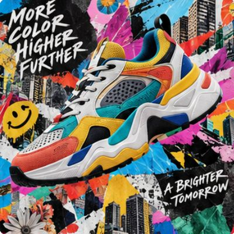
- /artnouveauمنحنيات وزخارف نباتية. (Art Nouveau)Art Nouveau look
- /artdecoزخارف هندسية وفخامة متناظرة. (Art Deco)Art Deco look
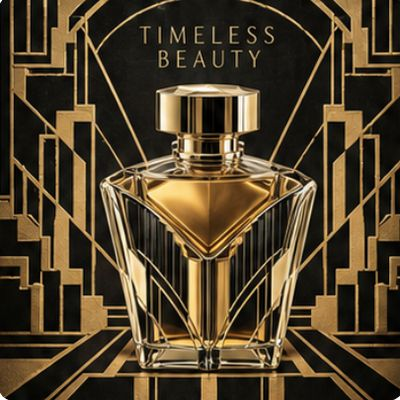
- /bauhausهندسة بسيطة وألوان أساسية. (Bauhaus)Bauhaus look
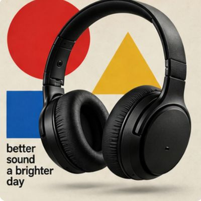
- /midcenturyبساطة دافئة وأشكال عضوية. (Mid-century Modern)Mid-century Modern look

- /destijlمستطيلات وألوان أساسية. (De Stijl)De Stijl look

- /constructivismأقطار قوية وحروف جريئة. (Constructivism)Constructivism look
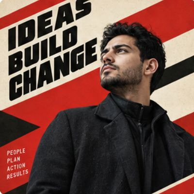
- /grungeخدوش وحبر وحواف مهترئة. (Grunge)Grunge look

- /memphisألوان مرحة وأنماط هندسية. (Memphis)Memphis look
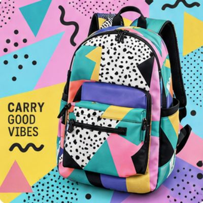
الفن والجماليات البصرية
ارفع صورتك واكتب الاختصار، أو اكتب الاختصار وبعده موضوعك
- /geoabstractأشكال هندسية غير تمثيلية. (Geometric Abstraction)Geometric Abstraction look
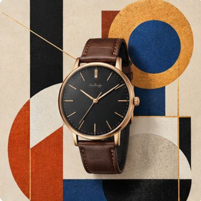
- /abstractألوان وأشكال حرة التعبير. (Abstract Art)Abstract Art look

- /opartأنماط توهم بالحركة. (Op Art)Op Art look

- /cubismزوايا ووجهات نظر متعددة. (Cubism)Cubism look
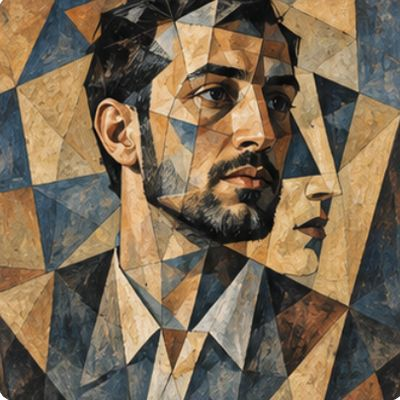
- /psychedelicموجات وألوان مكثفة. (Psychedelic)Psychedelic look

- /vaporwaveحنين رقمي وردي وبنفسجي. (Vaporwave)Vaporwave look
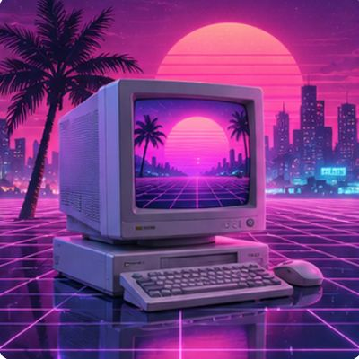
- /y2kبداية الألفينات: كروم ولمعان رقمي. (Y2K)Y2K look

الواجهات وتكوين الصفحات
ارفع صورتك واكتب الاختصار، أو اكتب الاختصار وبعده موضوعك
- /glassmorphismشفافية وضبابية وطبقات. (Glassmorphism)Glassmorphism look
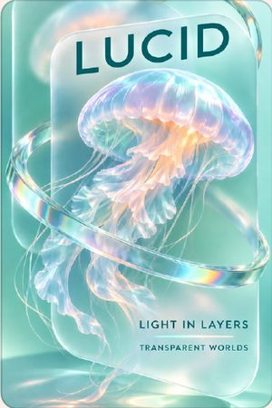
- /materialuiنظام واجهات ومكونات متسقة. (Material Design)Material Design look

- /bentoبطاقات متنوعة داخل شبكة. (Bento Grid)Bento Grid look
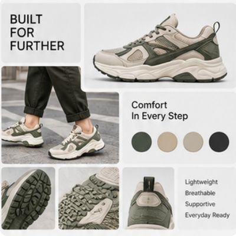
- /skeuomorphismمحاكاة الواقع: خامات وأدوات تبدو حقيقية. (Skeuomorphism)Skeuomorphism look

- /neumorphismبروز ناعم: ظلال توحي بالبروز والغور. (Neumorphism)Neumorphism look
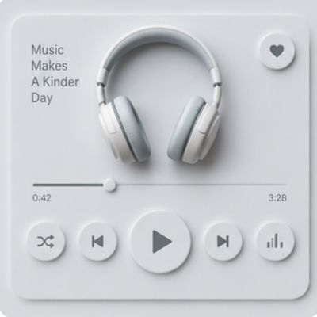
- /exptypeتمدد وتداخل ومعالجة غير مألوفة للحروف. (Experimental Typography)Experimental Typography look
- /typedesignالحروف تقود التكوين. (Typographic Design)Typographic Design look

- /mixedmediaصور ورسم وألوان معا. (Mixed Media)Mixed Media look
- /photomontageصور مدمجة لبناء مشهد. (Photomontage)Photomontage look
- /collageقصاصات وصور متراكبة. (Collage)Collage look

الرسم والطباعة
ارفع صورتك واكتب الاختصار، أو اكتب الاختصار وبعده موضوعك
- /monolineسمك ثابت للخطوط. (Monoline)Monoline look

- /inkillustrationضربات قوية وتهشير. (Ink Illustration)Ink Illustration look

- /doodleرسومات صغيرة عفوية ومرحة. (Doodle Art)Doodle Art look
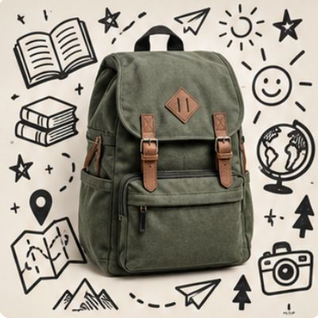
- /engravingخطوط دقيقة وتظليل متقاطع. (Engraving)Engraving look
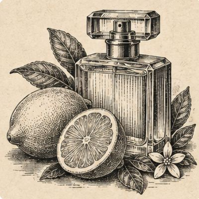
- /screenprintمساحات حبر صلبة. (Screen Print)Screen Print look

- /risographأحبار متراكبة وملمس طباعي. (Risograph)Risograph look
الأبعاد والأشكال والألوان
ارفع صورتك واكتب الاختصار، أو اكتب الاختصار وبعده موضوعك
- /gradientانتقال ناعم بين الألوان. (Gradient)Gradient look

- /monochromeدرجات متعددة للون واحد. (Monochromatic)Monochromatic look

- /geometricتكوين من أشكال واضحة. (Geometric Design)Geometric Design look
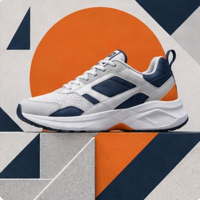
- /organicمنحنيات وأشكال طبيعية. (Organic Shapes)Organic Shapes look

ستايلات تصميم إضافية
ارفع صورتك واكتب الاختصار، أو اكتب الاختصار وبعده موضوعك
- /auroraأضواء الشفق القطبي بألوان خضراء وبنفسجية. (Aurora)Aurora look

- /victorianزخارف العصر الفيكتوري ونقوش مفصلة. (Victorian Style)Victorian Style look
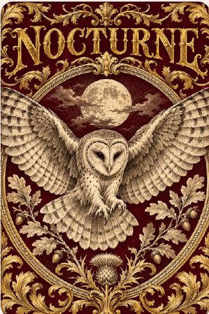
- /bohemianأجواء بوهيمية بألوان ترابية ونقوش يدوية. (Bohemian)Bohemian look

أوامر الصور الإضافية١٩٦
أوامر جاهزة لتعديل الصور وتصميمها، من الكاميرا والبورتريه لين الألعاب والمواسم.
تعديل وتحسين الصور
ارفع صورتك واكتب الاختصار وحده، أو اكتبه وبعده وصف طلبك
- /selfieيحوّل اللقطة إلى سيلفيTurn the shot into a natural selfie.
- /rawphotoيجعل الصورة أكثر طبيعيةMake the photo look more natural and unprocessed.
- /fashionيمنح الصورة طابع تصوير الأزياءGive the photo a fashion-shoot look.
- /workspaceيضع العنصر ضمن بيئة عملPlace the subject in a clean workspace setting.
- /inpaintيعيد بناء منطقة محددةRebuild only the selected area of the photo.
- /outpaintيوسّع الصورة خارج حدودهاExtend the image beyond its original borders.
- /colorizeيلوّن الصور بالأبيض والأسودAdd natural color to a black-and-white photo.
- /cropfixيستكمل الأجزاء المقتصة من الصورةComplete the parts that were cropped out of the photo.
- /perspectivefixيصحّح تشوّه المنظورCorrect the perspective distortion.
- /lensfixيصحّح تشوّهات العدسةCorrect lens distortion.
- /denoiseيقلّل التشويش والحبيباتReduce noise and grain.
- /skinretouchينعّم البشرة مع الحفاظ على طبيعتهاSmooth the skin while keeping it natural.
- /whiteteethيجعل الأسنان أكثر بياضاًMake the teeth look whiter, naturally.
- /removeglareيزيل الوهج والانعكاساتRemove glare and unwanted reflections.
- /shadowfixيخفّف الظلال القاسيةSoften harsh shadows.
- /portrait85mmيحاكي بورتريه بعدسة 85 ممMimic a portrait shot on an 85mm lens.
- /hardlightيضيف إضاءة قوية وظلالاً حادةAdd strong light with sharp shadows.
- /documentaryيمنح الصورة أسلوباً وثائقياً واقعياًGive the photo a realistic documentary style.
- /streetphotoيحاكي أسلوب تصوير الشوارعMimic the style of street photography.
الكاميرا والبورتريه
ارفع صورتك واكتب الاختصار وحده، أو اكتبه وبعده وصف طلبك
- /fromspaceيعرض الأرض من الفضاءShow the Earth as seen from space.
- /marketstallيضعك في سوق مليء بالألوانPlace me in a market full of color.
- /cyanotypeيحولها إلى نسخة زرقاء شمسيةTurn it into a blue sun-print cyanotype.
- /daguerreotypeيمنحها أقدم طابع فوتوغرافي ممكنGive it the earliest photographic look possible.
- /tintypeيحولها إلى بورتريه على صفيحة معدنيةTurn it into a portrait on a metal plate.
- /lomoيضيف ألواناً مشبعة وتظليلاً عند الحوافAdd saturated colors and vignetting at the edges.
- /webcamيحاكي لقطة ويب كام محببةMimic a grainy webcam capture.
- /phonesnapيحاكي صورة عفوية بهاتف محمولMimic a casual snapshot from a phone.
- /doubleexposureيدمج صورتين داخل صورة ظليةBlend two images inside a silhouette.
- /studioportraitيصنع بورتريه استوديو بخلفية ملونةMake a studio portrait with a colored background.
- /candidيصنع صورة عفوية طبيعية دون تكلفMake a natural, unposed candid photo.
- /mirrorselfieيصنع صورة سيلفي أمام المرآةMake a selfie in front of a mirror.
- /avatarsetينشئ ستة أفاتارات مختلفة لكCreate six different avatars of me.
- /youngermeيعيدك طفلاً في صورة قديمةPut me back as a child in an old photo.
- /familyportraitيصنع بورتريه عائليا بأسلوب الاستوديوMake a family portrait in studio style.
أنت في عالم آخر
ارفع صورتك واكتب الاختصار وحده، أو اكتبه وبعده وصف طلبك
- /royalportraitيحوّلك إلى ملك في لوحة زيتيةTurn me into a king in an oil painting.
- /togetherيجمع صورتين في صورة واحدةCombine two photos into one picture.
- /proshotيحوّل صورة الهاتف إلى لقطة احترافيةTurn a phone photo into a professional shot.
- /villainيحوّلك إلى شرير من فيلم سينمائيTurn me into a movie villain.
- /astronautيضعك كرائد فضاء على سطح القمرPlace me as an astronaut on the moon's surface.
- /pirateيحوّلك إلى قبطان قراصنة على سفينتهTurn me into a pirate captain on his ship.
- /wildwestيحوّلك إلى راعي بقر من الغرب الأمريكيTurn me into an American Wild West cowboy.
- /ancientromeيحوّلك إلى سيناتور في روما القديمةTurn me into a senator in ancient Rome.
- /egyptيجعلك فرعونا جالسًا على عرشهMake me a pharaoh seated on a throne.
- /vikingيحوّلك إلى محارب فايكنغ وسط الثلوجTurn me into a Viking warrior in the snow.
- /fairytaleيحوّلك إلى شخصية من قصة خياليةTurn me into a character from a fairy tale.
- /80spromيصنع صورة لحفلة راقصة بطابع الثمانينياتMake a photo from an 1980s prom night.
- /storyframeيصنع قصة عمودية بأسلوب إنستغرامMake a vertical story in Instagram style.
- /tweetcardيعرض عبارتك كبطاقة تغريدة على الشاشةShow my sentence as an on-screen tweet card.
- /reviewcardيصنع بطاقة مراجعة بتقييم خمس نجومMake a review card with a five-star rating.
الطعام والأزياء
ارفع صورتك واكتب الاختصار وحده، أو اكتبه وبعده وصف طلبك
- /platingينسق الطبق بأسلوب المطاعم الراقيةPlate the dish in fine-dining restaurant style.
- /cheesepullيظهر الجبن المذاب وهو يتمدد في الهواءShow melted cheese stretching in the air.
- /steamshotيظهر الطعام طازجًا يتصاعد منه البخارShow the food fresh, with steam rising.
- /tablespreadيصور المائدة كاملة من الأعلىShoot the whole table from above.
- /cookingstepيعرض تحضير الوصفة خطوة بخطوةShow the recipe being prepared step by step.
- /bakerywindowيعرض المخبوزات في واجهة المخبزShow baked goods in a bakery window.
- /streetfoodيعرض الطعام على عربة في الشارعShow the food on a street cart.
- /cocktailيصور كوكتيلاً مع الثلج وقطرات الماءShoot a cocktail with ice and water droplets.
- /latteartيرسم شكلًا على رغوة القهوةDraw a pattern on the coffee foam.
- /dripيظهر الصلصة وهي تنساب ببطءShow sauce slowly dripping.
- /fastfoodadيصنع إعلانًا للوجبات السريعةMake an ad for fast food.
- /bentoboxيرتب الطعام داخل علبة مقسمةArrange the food inside a divided box.
- /halfeatenيظهر الطعام مأكولا جزئيًا لمظهر واقعيShow the food partly eaten for a realistic look.
- /lookbookيصنع صفحة من كتالوج أزياء موسميMake a page from a seasonal fashion lookbook.
- /editorialfashionيصنع لقطة بأسلوب مجلات الأزياءMake a shot in fashion-magazine style.
- /runwayيعرض الأزياء على منصة مع ومضات التصويرShow the outfit on a runway with camera flashes.
- /streetstyleيصور إطلالة أزياء في الشارعShoot a fashion look on the street.
- /outfitgridيعرض قطع الإطلالة في شبكة منظمةShow the pieces of the outfit in a tidy grid.
- /makeuplookيعرض خطوات تطبيق المكياجShow the makeup application steps.
- /swatchيعرض درجات الألوان مجربة على الذراعShow color shades swatched on an arm.
- /beautycloseيصور البشرة عن قرب بملمسها الطبيعيShoot the skin up close with its natural texture.
- /nailartيعرض تصميم الأظافر عن قربShow the nail design up close.
- /hairstylesيعرض وجهك بست تسريحات مختلفةShow my face with six different hairstyles.
- /jewelryيصور المجوهرات عن قرب مع إبراز لمعانهاShoot jewelry up close, highlighting its shine.
- /tryonيريك كيف تبدو قطعة الملابس عليكShow how the garment looks on me.
- /fashionsketchيرسم تصميم أزياء بأسلوب المصممينDraw a fashion design in a designer's style.
- /fabricdrapeيظهر انسدال القماش على دمية عرضShow fabric draping on a display mannequin.
المنزل والسفر
ارفع صورتك واكتب الاختصار وحده، أو اكتبه وبعده وصف طلبك
- /capsulewardrobeينسق خزانة ملابس من عشر قطعPlan a ten-piece capsule wardrobe.
- /emptyroomيفرغ الغرفة من الأثاثEmpty the room of furniture.
- /facadeيعرض واجهة المبنى نهارًا وليلاًShow the building's facade by day and by night.
- /cozyroomيمنح الغرفة أجواء دافئة ومفعمة بالحياةGive the room a warm, lived-in atmosphere.
- /restaurantinteriorيصور المطعم من الداخل مع الزبائنShoot the restaurant interior with guests.
- /twilightexteriorيظهر المنزل عند الغسق مع إضاءة الأنوارShow the house at dusk with the lights on.
- /furnituresketchيحول الأثاث إلى رسم تصميمي أوليTurn the furniture into a rough design sketch.
- /materialboardيجمع عينات التشطيب في لوحةGather finish samples on a material board.
- /travelposterيصنع ملصق سفر بطابع قديمMake a vintage-style travel poster.
- /postcardيصنع بطاقة بريدية مع طابع وتحيةMake a postcard with a stamp and a greeting.
- /roadtripيصنع مشهد رحلة بالسيارة على الطريقMake a road-trip scene on the road.
- /skylineيضع العنصر أمام أفق مدينة مضاءةPlace the subject in front of a lit city skyline.
- /desertroadيصنع طريقًا خاليًا وسط الصحراءMake an empty road through the desert.
- /mountaintopيضع العنصر على قمة جبلPlace the subject on a mountain peak.
- /tropicalيصنع مشهدا بين النخيل وبحر فيروزيMake a scene with palm trees and a turquoise sea.
- /snowcabinيصنع كوخا تحيط به الثلوجMake a cabin surrounded by snow.
- /foggyforestيصنع غابة يغمرها الضبابMake a forest filled with fog.
الحروف والتصميم ثلاثي الأبعاد
ارفع صورتك واكتب الاختصار وحده، أو اكتبه وبعده وصف طلبك
- /velvetيكسو العنصر بقماش مخمليCover the subject in velvet fabric.
- /furryيغطي العنصر بفرو ناعمCover the subject in soft fur.
- /balloonartيشكل العنصر من بالونات ملتويةShape the subject from twisted balloons.
- /vinyltoyيحوله إلى لعبة فنية من الفينيلTurn it into a vinyl art toy.
- /floatingislandيصنع جزيرة عائمة في السماءMake an island floating in the sky.
- /abstractshapesيحيطه بأشكال تجريدية ثلاثية الأبعادSurround it with 3D abstract shapes.
- /3dtypographyيصنع حروفًا مجسمة تبدو ملموسةMake 3D letters that look tangible.
- /miniaturecityيصنع نموذجا لمدينة مصغرةMake a model of a miniature city.
- /cloudshapeيشكل سحابة على هيئة العنصرShape a cloud in the form of the subject.
- /balloontypeيصنع حروفًا من بالونات معدنية لامعةMake letters from shiny metallic balloons.
- /chalkletteringيكتب بالطباشير على سبورة مقهىWrite in chalk on a cafe blackboard.
- /goldleafيصنع كتابة بورق الذهب على واجهة زجاجيةMake gold-leaf lettering on a glass storefront.
- /handletteringيصنع حروفًا مرسومة يدوياMake hand-drawn lettering.
- /letterpressيحاكي الطباعة التقليدية بالحروف البارزةMimic traditional letterpress printing.
- /embroideredpatchيصنع رقعة مطرزة للسترةMake an embroidered jacket patch.
- /woodcarvedيصنع لافتة محفورة في الخشبMake a sign carved into wood.
- /icingtextيكتب بكريمة التزيين على كعكةWrite in piping icing on a cake.
- /sandwritingيكتب على رمال الشاطئWrite in the sand on a beach.
- /skywritingيكتب في السماء بدخان طائرةWrite in the sky with airplane smoke.
- /foodtypeيشكل الحروف باستخدام الطعامForm the letters out of food.
- /ransomnoteيصنع النص من حروف مقصوصة من المجلاتMake the text from letters cut out of magazines.
- /chrometypeيصنع حروفًا كرومية بطابع الثمانينياتMake chrome letters in an 80s style.
الأعمال والتواصل الاجتماعي
ارفع صورتك واكتب الاختصار وحده، أو اكتبه وبعده وصف طلبك
- /giveawayيصمم منشور سحب على جائزةDesign a giveaway post for a prize.
- /saleposterيصمم ملصقا للعروض والتخفيضاتDesign a poster for sales and discounts.
- /couponيصمم قسيمة خصم قابلة للقصDesign a cut-out discount coupon.
- /flyerيصمم منشورًا إعلانياً للتوزيعDesign a promotional flyer to hand out.
- /dashboardيعرض مؤشرات الأداء في لوحة منظمةShow performance metrics in an organized dashboard.
- /kpicardيبرز مؤشر أداء رئيسيًا برقم كبيرHighlight one key metric with a big number.
- /mindmapينشئ خريطة ذهنية متفرعةCreate a branching mind map.
- /certificateيصمم شهادة مع ختم وتوقيعDesign a certificate with a seal and signature.
- /bottleيصمم زجاجة تحمل ملصق المنتجDesign a bottle carrying the product label.
- /coffeebagيصمم كيس قهوة مزودًا بصمامDesign a coffee bag with a valve.
- /teaboxيصمم علبة شاي مزينة بالرسومDesign a tea box decorated with illustrations.
- /candlejarيصمم شمعة داخل وعاء زجاجيDesign a candle in a glass jar.
- /cosmeticjarيصمم عبوة فاخرة لكريم تجميليDesign a luxury jar for a cosmetic cream.
التأثيرات والتغليف
ارفع صورتك واكتب الاختصار وحده، أو اكتبه وبعده وصف طلبك
- /winelabelيصمم ملصقًا أنيقًا لزجاجة نبيذDesign an elegant label for a wine bottle.
- /beerlabelيصمم ملصقًا للبيرة الحرفيةDesign a label for craft beer.
- /chocolatewrapperيصمم غلافاً للشوكولاتةDesign a chocolate wrapper.
- /pizzaboxيصمم علبة بيتزا تحمل شعاركDesign a pizza box carrying your logo.
- /shoppingbagيصمم كيس تسوق ورقياDesign a paper shopping bag.
- /subscriptionboxيعرض صندوق اشتراك مفتوحًاShow an open subscription box.
- /ecopackيصمم عبوة من كرتون معاد تدويرهDesign packaging from recycled cardboard.
- /shippingboxيصمم صندوق شحن بشريط لاصقDesign a shipping box with tape.
- /pixelsortيمدد البكسلات إلى شرائط ذائبةStretch the pixels into melting streaks.
- /smokeيحيط العنصر بدخان ملونSurround the subject with colored smoke.
- /frozenيحبس العنصر داخل كتلة جليدTrap the subject inside a block of ice.
- /shatterيجعل العنصر يتحطم إلى شظاياMake the subject shatter into fragments.
- /particlesيضيف جزيئات لامعة كغبار سحريAdd glowing particles like magic dust.
- /electricيحيط العنصر بصواعق كهربائيةSurround the subject with electric lightning.
- /portalيظهر العنصر خارجًا من بوابةShow the subject coming out of a portal.
- /50sadيصمم إعلان مجلة بطابع الخمسينياتDesign a magazine ad in 1950s style.
- /vhsيحاكي لقطة شريط فيديو بخطوط تشويشMimic a VHS tape frame with distortion lines.
- /crtيعرض الصورة على تلفاز أنبوبي قديمShow the image on an old tube TV.
- /8bitيحول الصورة لأسلوب ألعاب 8 بتConvert the image to an 8-bit game style.
الطابع القديم والتعليم
ارفع صورتك واكتب الاختصار وحده، أو اكتبه وبعده وصف طلبك
- /16bitيحول الصورة لأسلوب ألعاب 16 بتConvert the image to a 16-bit game style.
- /retrocomputerيحاكي شاشة حاسوب من الثمانينياتMimic an 80s computer screen.
- /matchboxيصمم علبة كبريت بطابع قديمDesign a matchbox with a vintage look.
- /tincanيصمم علبة معدنية بطابع كلاسيكيDesign a metal tin with a classic look.
- /enamelsignيصمم لافتة متجر مطلية بالميناDesign an enamel-coated shop sign.
- /propagandaيصمم ملصقا دعائيًا بطابع قديمDesign a poster in vintage propaganda style.
- /typewriterيحاكي الكتابة بآلة كاتبةMimic typing on a typewriter.
- /catalog70sيصمم كتالوجًا بطابع السبعينياتDesign a catalog in 1970s style.
- /pinbadgeيصمم دبوس مينا قابلا للاقتناءDesign a collectible enamel pin.
- /arcadeflyerيصمم منشورًا إعلانيًا لألعاب الأركيدDesign a promo flyer for arcade games.
- /driveinيصنع مشهد سينما سيارات ليليةMake a night drive-in cinema scene.
- /anatomychartيرسم لوحة تشريحية بتسميات واضحةDraw an anatomy chart with clear labels.
- /vennيرسم مخطط دوائر متداخلة للمقارنةDraw an overlapping-circles diagram for comparison.
- /cycleيرسم دورة متكررة بأسهم توضيحيةDraw a repeating cycle with explanatory arrows.
- /periodictableينظم موضوعك في هيئة جدول دوريOrganize your topic as a periodic table.
- /scientificplateيصمم لوحة علمية بطابع قديمDesign a scientific plate in a vintage style.
- /botanicalيرسم لوحة توضيحية للنباتاتDraw a botanical illustration plate.
- /treasuremapيصمم خريطة كنز تبدو قديمةDesign a treasure map that looks ancient.
- /encyclopediaيحول المحتوى إلى صفحة موسوعة قديمةTurn the content into an old encyclopedia page.
- /quizcardيصمم بطاقة سؤال بأربعة خياراتDesign a question card with four choices.
- /boardgameيصمم لعبة لوحية مع صندوقهاDesign a board game with its box.
- /cardgameيصمم بطاقة للعبة ورقDesign a card for a card game.
الألعاب والمواسم
ارفع صورتك واكتب الاختصار وحده، أو اكتبه وبعده وصف طلبك
- /gamescreenيحاكي لقطة شاشة من لعبة فيديوMimic a video game screenshot.
- /bossfightيصنع مشهد مواجهة الزعيم النهائيMake a final boss fight scene.
- /rpgcharacterيصمم شخصية تقمص أدوار مع إحصاءاتهاDesign a role-playing character with its stats.
- /loadingscreenيصمم شاشة تحميل تتضمن نصيحةDesign a loading screen with a tip.
- /gamemapيرسم خريطة عالم اللعبةDraw a map of the game world.
- /tabletopminiيصمم مجسمًا مصغرا ملونا للعب الطاولةDesign a small painted miniature for tabletop games.
- /dungeonmapيرسم خريطة زنزانة للعبةDraw a dungeon map for the game.
- /potionيصمم زجاجة جرعة سحريةDesign a magic potion bottle.
- /spellbookيصمم كتاب تعاويذ مفتوحاDesign an open spellbook.
- /tarotcardيصمم بطاقة تاروت مزينة بالرسومDesign a tarot card decorated with illustrations.
- /crestيصمم شعارا لعلامتك على هيئة درعDesign a crest for your brand shaped like a shield.
- /inventoryيعرض أدوات اللعبة في قائمة منظمةShow the game items in an organized list.
- /terrariumيضع العنصر داخل حديقة زجاجية مصغرةPlace the subject inside a tiny glass garden.
- /bonsaiيحول العنصر إلى شجرة بونساي منسقةTurn the subject into a styled bonsai tree.
- /floralيحيط العنصر بتنسيق من الزهورSurround the subject with a flower arrangement.
- /pressedflowersيعرض زهورا مضغوطة على الورقShow flowers pressed onto paper.
- /mossيغطي العنصر بطبقة من الحزازياتCover the subject with a layer of moss.
- /herbariumيصمم ورقة عينات نباتية مع ملاحظاتDesign a plant-specimen sheet with notes.
- /christmasيضيف أجواء عيد الميلاد وأضواءهAdd Christmas atmosphere and lights.
- /halloweenيضيف طابع الهالوين إلى الصورةAdd a Halloween look to the photo.
- /valentineيضيف أجواء رومانسية لعيد الحبAdd romantic Valentine's Day vibes.
- /easterيضيف طابع عيد الفصح إلى الصورةAdd an Easter look to the photo.
- /summerيضيف أجواء صيفية مشمسةAdd sunny summer vibes.
- /autumnيضيف أوراق الخريف الجافةAdd dry autumn leaves.
- /winterيضيف الثلج وبخار الأنفاس الشتويAdd snow and winter breath mist.
- /newyearيضيف أجواء الاحتفال برأس السنةAdd New Year celebration vibes.
- /blackfridayيصمم إعلانا لعروض الجمعة السوداءDesign an ad for Black Friday deals.